•외교관계
-1962.01.26. 외교관계 수립
-1962.07. 주멕시코 상주대사관 개설
-1978.03. 주한 상주대사관 개설
•투자현황 :
* 투자 및 기업진출현황(2021)
- 한국 → 멕시코 78억불
- 멕시코 → 한국 55백만불
* 기업진출현황 : 기아, 가전업체(삼성, 위니아, LG), 한국전력, POSCO 등 430여개
•교역 : 교역현황 : 192억불(2021)
-수출액 : 112억 8900만$
-수입액 : 78억 8700만$
•수출품목 : 철강판, 합성수지, 반도체, 자동차 및 부품 등
•수입품목 : 원유, 아연, 자동차·부품 등
•교민현황 : 약 11,107명(2021년)
나. 한-멕시코 무역현황 및 사업정보
[표 2] 對 韓 무역협정 체결현황
출처 : KOTRA
협정명
체결국가
체결일자
발효일자
비고
한-멕시코 FTA
한국
협상예정
협상예정
-2022년 1월 21일 양자 회담 후 FTA 협상 재개 협의
2. 경제관련 정보
[표 3] 경제관련 정보
출처: IMF, 세계은행, 멕시코 통계청, 현지언론 종합, KOTRA
경제지표
2017
2018
2019
2020
2021
경제성장률(%)
2.3
2.2
-0.2
-8.4
5
명목 GDP( 십억$)
1,158.90
1,222.40
1,269.40
1,087.10
1,294.80
1인당 GDP(PPP, $)
19,933.50
20,643.64
20,766.77
19,117.05
20,675.81
1인당 명목 GDP($)
9,342.90
9,753.70
10,028.60
8,506.90
10,039.60
정부부채(% of GDP)
45.74
44.85
44.49
51.75
49.95
물가상승률(%)
6
4.9
3.6
3.4
5.7
실업률(%)
3.4
3.3
3.5
4.4
4.1
수출액(백만$)
409,432.60
450,712.70
460,603.70
417,670.40
494,224.60
수입액(백만$)
420,394.60
464,302.40
455,241.60
383,193.90
505,715.60
무역수지(백만$)
-10,962
-13,589.70
5,362.10
34,476.50
-11,491
외환 보유고(백만$)
172,801.80
174,609.09
180,749.50
195,667.20
202,399.20
이자율(%)
7.25
8.25
7.25
4.25
5.5
환율 (자국통화)
18.92
19.24
19.26
21.5
20.3
멕시코 경제 활동은 코로나19로 침체되었으나, 2020년 7월부터 점차적으로 재활성화됨. 사회적 거리두기 조치와 단계적 조업 금지로 2020년 멕시코 국내총생산(GDP)은 8.5% 감소함. 2021년은 정부의 백신 접종과 경기 회복 노력으로 GDP 연간 6%대 성장률을 보이나, 2022년 경제 불확실성의 가장 큰 요인 중 하나로 코로나19 감염 재확산을 손꼽을 정도로 코로나 악영향은 계속될 것으로 보임
가. 정부의 경제 재활성화 계획 추진 현황
2021년 1월 19일 경제부 장관 타티아나 클로우티어(Tatiana Clouthier)는 멕시코의 경제 재활성화 계획을 발표한 바 있음. 계획의 진행 현황에 대해 10월 27일 장관은 이 경제활성화 계획으로 경제 문제가 해결되고 일자리 창출과 사회 복지를 이끌어낼 회복의 가속화가 이뤄졌다고 강조함
총 4개의 영역, 내수시장 및 대외무역 활성화, 투자 촉진, 지역 산업 특화를 필두로 약 10개월 경과 시점인 현재 아래와 같이 현황을 발표함
(1) 내수시장 활성화
팬데믹 이전 수준으로 민간 소비를 회복함. 특히, 최저 임금이 88.36페소(2018년) 대비 141.7페소(2021년)로 인상됐으며, 온라인 플랫폼, 교육 및 대출을 제공해 중소기업을 지원하는 프로그램이 실시됨
(2) 투자 촉진
중남미 다수 국가와의 회담을 통해 투자를 촉진하고 멕시코 내 외국인 투자자들과의 협력을 증진시킴. 특히, 외국인 투자는 상반기 118억 6400만 달러로 팬데믹 이전 수치를 넘어 역대 최대치를 기록함. 또한 투자 활성화를 위해 USMCA를 포함한 협정을 우선순위로 멕시코 역내 가치 사슬을 강화함
(3) 대외무역 활성화
정부와 기업 간의 대화의 장을 열고 USMCA 및 그 외의 무역협정을 추진함. 영국과 협정 체결을 통해 멕시코 14개 자유무역협정의 지평을 넓히고 태평양 동맹의 협상을 추진해 중남미 무역 진흥을 추진 중임
(4) 지역 산업 특화
지역별 상품과 서비스의 품질 향상을 위해 관련 규제 현행화를 실시했으며 회사 설립 속도 제고, 상표 및 특허 등록 지원, 온라인을 통한 행정 수속 실시 및 디지털화 추진을 언급함
나. 국내총생산(GDP) 2021년 현황 및 2022년 전망치
2020년 경제성장률은 8.4% 하락하며 지난 12년 중 가장 큰 하락폭을 보임. 이와 관련해 멕시코 국내총생산(GDP)은 2008년 수준으로 회귀했다는 평가를 받으며, 2021년과 2022년에는 멕시코 경제 회복 및 활력 제고라는 과제가 주어짐
2021년 상반기에는 연간 7.4% 증가세를 보였으며, 해당 증가분은 2분기 19.6%의 성장세에 기인한 것으로 확인됨. 팬데믹으로 제한된 경제 활동이 점진적으로 정상화되면서 폭발적인 성장세를 기록한 것으로 분석됨. 그러나 3분기에는 4.8%의 완만한 성장률을 보였는데 경제 전문가들의 분석에 따르면, 2020년 7월 1일 발효된 USMCA와 미국 경제의 반등, 수출 증가(코로나 이전 수준 초과) 등의 다양한 요인이 언급됨. 실제로 다소 양호한 외부요인에도 불구하고 멕시코 내 아웃소싱 금지법 시행, 자동차 산업의 반도체 부족 현상과 제조 실적 저하, 유통 비용 증가와 인플레이션 상승 등 방해 내부 요소가 많았다는 지적임
[표 4] 멕시코 GDP 현황(2020~2021)(단위: 백만 페소, %)
자료: 멕시코 통계청INEGI
2020.1Q
2020.2Q
2020.3Q
2020.4Q
2021.1Q
2021.2Q
2021.3Q
GDP(%)
-2
-18.8
-8.7
-4.6
-2.7
19.5
4.8
GDP 총액
18,186,877
15,039,191
16,943,301
17,509,719
17,704,144
17,965,150
N/A
1차 산업(%)
587,130 (-2.8)
566,435 (-3.7)
612,503 (3.2)
593,461 (1.3)
600,169 (2.2)
605,156 (6.8)
(0.5)
2차 산업(%)
5,178,088 (-3.1)
3,980,078 (-25.4)
4,873,285 (-8.6)
5,050,866 (-3.4)
5,075,248 (-2.0)
5,090,089 (27.9)
(5.4)
3차 산업 (%)
11,658,914 (-1.0)
9,844,678 (-16.4)
10,761,973 (-8.8)
11,130,307 (-5.1)
11,283,177 (-3.2)
11,509,793 (16.9)
(4.5)
영국 경제 연구소 옥스포드 이코노믹스(Oxford Economics)는 멕시코 경제 성장에 영향을 줄 수 있는 요소로 5가지를 언급함
- 첫째, 글로벌 가치 사슬의 혼란, 고가의 생산비, 중간재 부족, 물류 병목 현상의 발생
- 둘째, 코로나 관련 정부의 완고한 조치로 코로나19 감염도가 증가하더라도 더 이상의 경제 활동 금지 혹은 제한 조치는 없을 것으로 언급
- 셋째, 미국의 경제 회복임. 멕시코의 대미 수출 의존도와 높은 송금액을 감안할 때, 국경지대의 수요 회복으로 성장 회복을 견인할 것으로 분석됨
- 넷째, 물가 상승률임. 인플레이션 상승 양상이 두드러져 수급 균형이 개선되는 2022년이나 2023에서야 팬데믹 이전 수준으로 회복될 것으로 보임
- 다섯째, 통화정책(금리 인상)임. 멕시코 중앙은행(Banxico)은 11월에 5%까지 금리를 재인상함. 인플레이션, 미국의 재정정책, 3분기 GDP 하락을 고려할 때 2022년도에도 금리가 인상될 것으로 전망됨
다. 팬데믹 이전 수준의 일자리 회복
2021년 10월 한 달 동안 정규직 수는 17만 2,668개, 월 0.8% 증가하면서 2021년 10월까지 사회보험청(IMSS)에 등록된 총 근로자 수는 2,076만 7,587명으로 2020년 2월 공식 일자리가 2,060만 개였던 팬데믹 이전의 기록을 넘어섬. 2020년 팬데믹의 영향으로 3월부터 7월 사이 110만 개의 일자리가 감소했으며, 그 중 45만 3,000개의 일자리만 회복함(2020년 총 64만 7,000개 일자리 감소)
- 여전히 2019년 11월 일자리 수준의 2,080만 개에는 미치지 못하고 있으나, 일자리 회복 수준은 11월까지 계속될 양상이며 12월 연말 휴가철을 맞아 소폭 감소세를 보일 것으로 전망됨
BBVA Mexico 은행 수석 이코노미스트인 카를로스 세라노 에레라(Carlos Serrano Herrera)는 2021년 하반기 GDP 회복이 정규직 일자리를 늘려 일자리 창출에 긍정적인 영향을 미칠 것이라고 언급했으며 옥스포드 이코노믹스(Oxford Economics)에 따르면 고용 인구는 1.2% 증가할 것으로 예측함
- 2022년 일자리 전망은 4차 대유행의 발생 여부에 따라 다소 영향을 받을 것으로 분석되나, 현재 경제 활성화 집중 전략에 따라 고용 불황은 점진적으로 해소될 것으로 예측됨
라. 최저임금 매해 상승세 계속될 예정
2021년 기준 최저 임금은 일급 141.7페소(7.1 달러)이며 북부 국경 자유무역 지대는 일급 213.39페소(10.7달러)임. 이는 2020년에 비해 15% 증가한 수준임
- AMLO(Andrés Manuel López Obrador) 정부는 국가 최저 임금 위원회(Conasami)가 2022년 최저 임금을 일급 141.70페소에서 171.45페소로 올리며, 21% 인상할 것임을 언급함. 결과적으로 임기 마지막 해인(2024년)에는 최저 임금 수준이 240~250페소 수준까지 올라갈 것으로 보임
- 미국 신용평가 회사 무디스(Moody's)에 따르면 멕시코는 광범위한 경제 회복에도 불구하고 인플레이션으로 인해 실질 임금은 줄어들고 있음. 이러한 상황이 지속될 경우 소비 전망은 하향 조정될 것이라는 분석이 있음
마. 2021년 외국인직접투자 회복세
유엔무역개발회의(UNCTAD)에 따르면, 멕시코는 2020년 276억 1,200만 달러의 외국인직접투자를 유치하며, 2019년 14위에서 9위로 올라섬. 실제로 코로나19로 인해 전 세계 외국인직접투자(FDI)가 1조 5,000억 달러에서 1조 달러로 35% 감소한 것과도 관련이 있으나, 2020년 7월 1일 발효된 USMCA가 견인차 역할을 한 것으로 분석됨
멕시코 경제부 예상 자료에 따르면, 2021년 상반기 외국인직접투자 규모는 184억 3,350만 달러로 2020년 동기 대비 2.6% 증가했으며, 2019년 동기간보다 많은 수치임
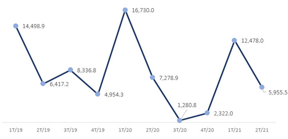
[그림 1] 멕시코 외국인 직접투자(2019-2021, Million USD)
멕시코 중앙은행(Banxico)의 조사에 따르면, 2021년 해외직접투자액은 276억 3,000만 달러로 2020년(276억 1,200만 달러)과 비슷한 수준으로 예상됨. 반면 2022년에는 286억 4,900만 달러에 이를 것으로 전망함
실제로, 미국과 중국 간의 무역 분쟁은 멕시코 투자 기회를 증가시킨 것으로 드러남. 멕시코는 USCMA 체결에 힘입어 북미 시장의 물류 연결 거점으로 자리매김하며 글로벌 가치 사슬의 취약성을 줄이는 투자 국가로 손꼽힘. 그러나, 멕시코의 투자 위험은 AMLO 대통령의 에너지 개혁과 같은 에너지 부문의 제한 정책, 투자 인센티브 부족, 기업 운영의 불확실성을 들 수 있음
미국 국무부의 2021년 멕시코 투자 현황 보고서에 따르면, 멕시코의 투자 불확실성은 급격한 규제 변화, 불안정성, 비공식, 부패, 국영 석유공사(Pemex)의 불안정한 재무 건전성 및 코로나19 경제 위기에 소극적인 재무 대응으로 나타남. 거시경제적 안정성의 긍정적인 요소는 중앙은행(Banxico)의 독립성과 USMCA를 언급함
바. 대외무역 완전한 성장세
2021년 1월부터 9월까지 멕시코 교역액은 3,683억 달러에 달하며 2020년 동기 대비34% 증가함. 2019년보다 8% 증가했으며 팬데믹 이전 수준을 넘어섬. 2021년 상반기 멕시코 교역액은 4,711억 달러로 2020년 동기 대비 29.8% 성장함. 2019년에 비해 4.4% 증가해 팬데믹 이전 수준을 회복함
2021년 1월부터 9월까지 수입은 2020년 대비 30.3%, 2019년 대비 4.9%가 올랐으며, 수출은 각각 연간 29.2%, 3.8% 증가를 보임
[그림 2] 멕시코 대외무역 교역액(2020-2021) (단위 : US$ 백만)
*자료: 멕시코 통계청 INEGI
3. 지식재산권 분야 정보
멕시코의 지식재산권은 크게 산업재산권과 저작권으로 구분됨
산업재산권은 ① 식별기호(상표, 상호, 홍보문구, 원산지 명칭, 지리적 표시), ② 산업발명(특허, 실용신안, 디자인, 배치설계, 식물품종), ③ 기술지식(산업기밀, 기술지원)으로 구분되며, 저작권에는 저작물, 저작인접권, 권리보전의 권리가 있음
멕시코 상표권은 선등록주의와 선사용주의를 다 인정하는 혼합주의를 채택하고 있음. 만일 해외에 등록된 상표일지라도 국내에서 계속 사용했다면 제3자가 동일상표를 등록하더라도 우선권을 가지게 됨. 저작권의 경우 우리나라보다 30년이 긴 저작자의 사후 100년 동안 권리를 인정하고 있음
또한, 멕시코는 특히 외국기업의 투자가 활발한 편이며, 파리협약, 베른협약, 로마협약 등 많은 지식재산권 협약에 가입되어 있음. 2020년 미국-멕시코-캐나다 협정(USMCA)에서 지식재산권에 대한 규정이 더욱 강화되었고, 이 영향으로 멕시코의 산업재산권법도 전면적으로 개정되었음. 행정절차가 간소화, 전자화되면서 등록까지의 기간이 단축되어 효율적인 처리가 가능하고, 지식재산권 분쟁은 행정법원의 지식재산권 특별재판부(SEPI)에서 담당하여 전문 사법 시스템을 구축하기도 함
멕시코 내에서는 모방 등 분쟁과 침해가 많이 발생하고 있음. 따라서 멕시코 진출 중이거나 예정 중인 경우엔 멕시코 현지법과 제도에 맞춰 발 빠르게 권리를 취득하시는 것이 바람직함
제2절 현지 유관기관 정보
1. 산업재산권 기관
가. 특허청 본청
[표 5] 특허청 본청 주소 및 홈페이지
구분
내용
주소
Periferico Sur No. 3106 Col. Jardines del Pedregal Mexico, D.F.C.P. 01900
이들 도시 근처나 주 근처에 살고 있으면, 경제부의 대표 사무소 혹은 대표 사무소 지부를 방문해도 됨. 이들의 주소는 http://www.economia.gob.mx/ 에서 찾아볼 수 있음
(1) 서부 사무소 (Guadalajara, Jalisco)
Boulevard Puertade Hierro # 5200, 1erpiso, Fraccionamiento Puerta de Hierro, Zapopan, Jalisco. C.P. 45110
이 사무소는 다음과 같은 주를 관할하고 있음
- Baja California, Baja California Sur, Colima, Jalisco, Nayarit, Sinaloa, Sonora
(2) 북부사무소 (Nuevo León)
Av. Fundidora # 501, 1er piso, local 66, Edificio Cintermex, Col. Obrera, Monterrey, Nuevo León, C.P. 64010
이 사무소는 다음과 같은 주를 관할하고 있음
- Coahuila, Chihuahua, Durango, Nuevo León, Tamaulipas
(3) “Bajío” 지역 사무소 (León, Guanajuato)
Av. Paseo del Moral # 106, 3er piso, Col. Jardines del Moral, León, Guanajuato, C.P. 37160
이 사무소는 다음과 같은 주를 관할하고 있음
- Aguascalientes, Guanajuato, Michoacán, Qerétaro, San Luis Potosí, Zacatecas
(4) 남부 사무소 (Mérida, Yucatán)
Calle 33 # 501-A, Dept. 3, Col. Gonzalo Guerrero, Mérida, Yucatán, C.P. 97118
이 사무소는 다음과 같은 주를 관할하고 있음
- Campeche, Chiapas, Oaxaca, Quintana Roo, Tabasco, Yucatán
(5) 중부사무소 (Puebla, Puebla)
Torre JV II, Boulevard Atlixcayotl No. 5208, Piso 25 (PH), Col. Unidad Territorial Atlixcayotl, San Andres Cholula, Puebla, C.P. 72197
이 사무소는 다음과 같은 주를 관할하고 있음
- Guerrero, Hidalgo, Morelos, Puebla, Tlaxcala, Veracruz
나. 멕시코 저작권 관리청
[표 7] 멕시코 저작권 관리청 주소 및 홈페이지
구분
내용
주소
Puebla 143, col. Roma Norte, Alcaldía Cuauhtémoc Ciudad de México, C. P. 06700.
이 법원은 멕시코 최고 단계의 법원임. 연방 대법원은 다음과 같은 문제에 대해 독점적인 사법권을 행사함
• 연방 정부와 주 정부 혹은 연방 지역 간;
• 연방과 시 간;
• 연방 행정부와 의회 간;
• 한 주와 다른 주 간;
• 일반 법률과 헌법 간의 상충으로 인한 위헌성 여부 등
[표 8] 멕시코 연방 대법원 주소 및 홈페이지
구분
내용
주소
Avenida Pino Suarez, #2 Colonia Centro Historico Delegacion Cuauhtemoc C.P. 06065, México D.F.
대학 순회법원은 3명의 치안 판사로 구성되어 있으며, 특정 문제(형법, 행정법, 민법, 상법 혹은 노동법)을 전문으로 담당하거나 이들 문제 모두를 담당할 수 있음. 연방의 사법부 조직법 제37조에 의거 다음과 같은 문제에 대해 사법권을 행사함: 판결에 대한 직접적인 암파로(Amparo) 소송, 암파로 소송에 대한 판정 및 판결, 지방법원이 판결한 내용에 대한 상소, 통합 순회 법원 혹은 해당 고등 중재 법원, 청원, 지방법원 판사에 의한 심리에서의 판결에 대한 항소, 통합 순회 재판소 혹은 해당 고등 중재 재판소, 법에 의한 항소, 통합 순회 대학 법원 혹은 지방법원 간 암파로 소송에 있어서의 사법적 불일치, 지방법원 판사 간 암파로 문제에 있어 자격 상실 및 해명, 기타 순회 재판소 치안 판사 간 문제; 청원, 기타 법에 의해 명시적으로 정해진 문제나 대법원이 제시한 일반적 합의
[표 9] 대학 순회 법원 주소 및 홈페이지
구분
내용
주소
Insurgentes Sur, #2417 Colonia San Ángel Delegación Álvaro Obregón C.P. 01000, México D.F.
통합 순회법원은 한 명의 치안 판사로 구성됨. 연방 사법부 조직법 제29조에 따라 통합 순회 재판소는, 최종 판결이 아닌 다른 통합 순회 재판소의 판결에 대한 암파로 소송, 지방법원에 의한 첫 판결에 대한 항소, 항소 기각의 경우, 지방법원 판사의 자격 상실, 해명 및 기피 결정, 지방법원 판사 간 논쟁(암파로 소송 제외), 기타 법이 정한 문제에 대해 사법권을 행사함
[표 10] 통합 순회 법원 주소 및 홈페이지
구분
내용
주소
Insurgentes Sur, #2417 Colonia San Ángel Delegación Álvaro Obregón C.P. 01000, México D.F.
일반 세관 사무소는 금융 및 공공 신용부(Secretary of Finance and Public Credit)의 분권적 조직인 공납 행정 사무소(Tributary Administration Service: SAT)의 분과임. 일반 관세 사무소는 SAT가 지정한 통관 업무의 규제 입법을 적용하는 일과 세관 문제에 적용되는 시스템, 방법, 절차 등을 책임지고 있는 기관임
- 세금 프로젝트, 보상 수수료 및 기타 규정 및 규제 수단 등에 대한 연구와 이의 개발에 참여하는 것, 협약과 조약을 준수하는 것, 외국 거래 상품의 운송을 명령하고 이를 확인하는 업무, 외국 영토로 진입하는 차량의 확인, 외국 거래 관세 및 기타 부과세를 정하는 것, 관세법에 따라 통관요금을 정하는 것 등이 포함되어 있음. 현재 멕시코에 49개의 세관이 있으며, 이 중 19개는 북쪽 국경선에, 2개는 남쪽 국경선에, 17개는 해양 지역에 11개는 내륙에 위치해 있음
[표 11] 멕시코 관세청 주소 및 홈페이지
구분
내용
주소
Avenda Hidalgo, # 77, Colonia Guerreo, C.P. 06300, Mexico D.F
※ 사업분류 1,2,3은 특허청 산하 사업임
※ 위 자료는 2022년 기준으로 작성되었으며, 세부 지원 기준 등 자세한 사항은 각 홈페이지 링크를 통해 확인이 필요함
PARTII 지식재산권
제1절 개요
1. 법률체계 및 지식재산권 관련 법률
가. 지식재산권 보호 현황
모든 국가는 자국의 기술을 보호하기 위하여 지식재산권 제도를 활용해야 하고 지식재산권 취득 없이 해외 시장 진출이 어려우므로 먼저 지식재산권 보호 방안이 선행되어야 함
- 멕시코 정부도 이런 점을 감안하여 각 기업에 특허 등 출원 장려, 직무발명제도의 활성화, 지식재산권 보호를 위한 인력양성과 지식재산권 침해 단속 강화 등의 투자를 늘리고 있으며 지식재산권 지출의 경우에는 OECD 평균보다 20% 이상이나 되는 등 선진국 못지않게 지식재산권 보호제도를 강화하고 있음
- 또한, 파리 협약, PCT 조약, 상표법 조약, 저작권 조약, 미생물 기탁에 관한 부다페스트조약, 표장 등록에 관한 마드리드 협정, 국제특허분류에 관한 스트라스부르그 조약 등 국제조약에 가입하여 지식재산권 보호에 최선을 다하고 있음
멕시코 지식재산권 보호제도는 크게 산업재산법과 저작권법으로 대별됨
• 산업재산법
- 산업재산법에는 특허법, 실용신안법, 상표법, 산업디자인법, 영업비밀, 집적회로배치설계에 관한 법, 원산지 명칭, 상호 등이 포함되어 있음
• 저작권
- 저작권법은 저작권, 컴퓨터프로그램저작물, 저작인접권을 포함하고 있음
나. 우리나라의 산업재산법 체제와의 비교
(1) 특허·실용신안·디자인법 체제
위에서 상세히 언급한 바와 같이 멕시코의 산업재산법 체제는 특허, 실용신안, 상표 등 산업재산권 전반을 단일법전에 규정, 포함하고 있으므로 우리나라의 법체계와 완전히 다름
- 우리나라의 산업재산법 체제는 권리별로 분류하여 규정하고 있음. 즉, 특허법, 실용신안법, 상표법, 디자인보호법, 반도체집적회로배치설계법 등 각각 분류하여 개별 법 체제를 형성하고 있음. 특허법은 특허법 독립의 법이 있고, 실용신안법은 실용신안법 독립의 법이 각각 존재하고 있음
(2) 광고슬로건·상호·상표의 법 체제
멕시코의 산업재산법에 상호 및 광고슬로건에 관한 규정이 포함되어 있고, 특이한 것은 산업재산법에 상호 및 광고슬로건에 관한 규정을 부(部)를 달리하여 규정하고 있는 점이 특이하며 상표법을 적용하고 있음. 이는 광고슬로건, 상호 등이 상표적인 성격을 가지고 있기 때문에 상표법을 적용하고 있음
- 우리나라는 상호를 규율하는 법으로 상법이 있으나, 멕시코의 상호 보호는 산업재산법에서 규정하고 있음
(3) 연방저작권법
멕시코의 저작권법에는 통상의 저작권, 저작인접권, 컴퓨터프로그램저작물을 포함하고 있으며, 이러한 제도는 우리나라의 제도와 동일함. 그러나 그 소관 기관은 교육성 산하의 저작권관리청에서 담당하고 있음
- 우리나라의 저작권 관리부서는 문화체육관광부에서 관리하고 있음
2. 최근 개정사항 및 동향 소개
가. 지식재산권 보호제도의 연혁
(1) 1832년 발명자를 위한 소유권법
멕시코는 특허를 비롯한 산업재산권을 보호하기 위한 최초의 법으로 1832년에 제정된 「발명자를 위한 소유권법」이 있음. 이 법은 주로 발명 및 아이디어 보호에 관한 내용이 규정되어 있음
(2) 1890년 특허 및 특권에 관한 법
발명자를 위한 소유권법을 개정하여 오늘의 산업재산법의 골격을 형성한 법이 1890년에 제정한「특허 및 특권에 관한 법」임. 이 특허 및 특권에 관한 법 내용은 1943년에 개정된「산업재산법」에 이르기까지 그 골격은 거의 변경되지 않고 유지하였음
(3) 1903년 상표 및 상호에 관한 내용 규정
멕시코는 1903년에 이르러 브뤼셀조약과 파리 협약(1883년)에 의거 1943년의 산업재산법에 상표 및 상호보호에 관한 규정을 포함시켜 규정하였음
(4) 1943년부터 1944년까지의 법
1943년에 이르러 산업재산법은 1934년의 파리 협약의 런던회의의 영향을 받아 약간의 변경이 있었음. 1976년부터 1991년까지의 법은 특허 및 상표에 관한 내용의 변경이 있었으나 약간의 변경만이 있었고, 1991년 산업재산권 촉진 및 보호법이 발효되고, 그 후 1994년에 개정된 산업재산법을 현재까지 시행하고 있으며, 그 사이 몇 번 극히 부분적인 개정이 있었음
(5) 1994년 개정
1994년에 산업재산권 법이 개정되었으며, 그 후 2004년 1월 1일 시행된 법은 제77조 강제실시권 일부개정, 2005년에 개정되어 2005년 7월 17일 시행된 법은 주지상표의 효력(제6조 3항), 무효, 소멸, 취소 등의 일부개정, 무효 수리 후의 절차(제193조), 그리고 2006년 1월 1일에 시행된 법 일부(프랜차이즈 절차, 운영, 가맹점의 비밀보존 등)의 개정이 있었음
(6) 2020년 개정
멕시코는 미국-멕시코-캐나다 협정(USMCA)에 따라 2020년 7월 1일 새로운 산업재산권 법을 제정했음. 새로운 산업재산법은 이 법을 산업재산권 보호를 위한 연방법(IPPL 또는 새로운 IP법)이라고 함. 이 법은 2020년 11월 5일에 발효되었음. 새로운 산업재산법이 멕시코 산업재산법(1994년 제정)을 대체했음. 새로 제정된 2020년의 산업재산법은 산업재산권에 대한 보다 보호적인 법적 프레임워크를 설정함. 2020년 산업재산법은 제조업을 멕시코로 이전한 기업가와 외국 기업에 큰 혜택을 줌. 2020년 산업재산법은 다양한 방식으로 산업재산에 대한 보호를 강화했으며, 산업재산법을 위반한 사람들에 대해 보다 효과적인 집행을 수행하는 방법을 개정하였음
나. 주요 개정사항
(1) 산업재산권 개정 (2018)
멕시코는 2016년 6월 1일 산업재산법을 개정하였으며, 개정법에는 상표법에 새로운 개념들과 ‘실질적이고 효과적인 사용’에 관한 선언 의무가 추가되었음. 본 개정법은 2018년 8월 10일부터 시행되었으며, 이번 개정에 있어 상표법에 새로운 개념들과 ‘실질적이고 효과적인 사용’에 관한 선언 의무가 추가된 것이 특색임
개정법에 따라 권리자는 자신의 상표에 관하여 실질적이고 효과적인 사용에 관하여 IMPI가 제작한 공식 선언양식에 따라 작성하여 제출해야 하며, 실질적이고 효과적인 사용에 관한 선언은 총 2회에 걸쳐 이루어져야 함
■ 상표 갱신 신청시
- 상표의 갱신을 신청하는 자는 해당 상표의 실질적이고 효과적인 사용을 증명하는 선언을 제출해야 함
- 마드리드 의정서 제7조에 따라 갱신된 국제 등록의 경우, 권리자는 WIPO가 갱신 고지를 한 후 3개월 이내에 IMPI에 직접 실질적이고 효과적인 사용에 관한 선언을 제출해야 함
- 동 선언 의무는 마드리드 의정서 제3조의3에 따라 멕시코에 등록한 상표 모두를 포함하며 2018년 8월 10일 이후에 신청된 모든 갱신 신청된 상표에도 적용됨
- 동 의무를 이행하지 않는 경우, IMPI는 직권으로 해당 상표를 취소할 수 있음
■ 상표 등록 후 3년이 경과된 날로부터 3개월 이내
- 동 선언 의무는 2018년 8월 10일 이후에 등록된 모든 상표에 적용되며, 출원일이 2018년 8월 10일 이전의 출원도 포함함
- 마드리드 의정서 제3조의3에 따라 국제 등록의 보호 범위가 멕시코로 확장된 경우, 권리자는 멕시코에서 등록이 인용된 날로부터 3년 후를 기산일로 한 3개월 이내에 실질적이고 효과적인 사용에 관하여 선언할 의무가 있음
- 동 의무를 이행하지 않는 경우, IMPI는 직권으로 해당 상표를 취소할 수 있음
또한 멕시코 개정 산업재산권법은 “악의(bad faith)” 개념을 도입하였고, 출원서에 장황하고 광범위한 기재가 더 이상 허용되지 않으며, 상표권 공존에 대한 합의(coexistence agreements), 강제적 사용 선언(compulsory declarations of use) 등이 신설됨
- 종래에는 표지(mark)의 개념에 대하여 “시장에서 동일한 형태나 분류에서 타인과 구별되는 제품 또는 서비스의 시각적인 표시(sign)”로 정의하여 소리, 냄새, 촉각과 같은 비시각적 표시는 표지의 개념에서 제외하고 있었음
- 그러나 개정 산업재산권법은 3차원 형태, 상호, 교파(denominations) 및 기업의 명칭, 등록 상표 또는 공개된 상업적 명칭과의 혼동을 초래하지 않는 개인의 이름도 표지의 개념에 포함함 → 브랜드 소유자는 홀로그램, 향기, 색상배합을 상표로 등록할 수 있게 됨
- 인증마크, 지리적 표시, 홀로그램도 상표로 등록할 수 있음 → 상표 출원인은 상품의 특별한 성격 및 정보(원산지, 제조에 관한 정보 등) 등을 수록한 증명표장을 획득할 수 있게 됨
- 그러나 유명인의 실명과 가명, 유명인과 관련 있는 이름은 상표로 등록될 수 없으며, 또한 개인의 이미지나 특정 목소리 그리고 본인의 동의 없는 서명 또한 상표로 등록될 수 없음
(2) 산업재산권 개정 (2020)
멕시코 연방 정부는 지난 2020년 7월 1일 기존 산업재산권법을 폐지하고 신규 산업재산권 보호법(Federal Protection of Industrial Property Law, LFPPI)을 제정하고 11월 5일부터 시행하였으며, LFPPI의 주요 내용은 다음과 같음
∙ LFPPI는 멕시코 산업재산권청(IMPI)에 지식재산 침해 단속 및 행정 위반 행위에 대한 벌금을 부과할 수 있는 권한을 부여함
∙ IMPI에 의하여 등록지연이 발생한 경우 특허권 존속기간 연장 신청이 가능함
∙ 실용신안특허 존속기간은 기존 10년에서 15년으로 늘어났으며, 상표·슬로건·상호의 존속기간은 등록일로부터 10년임
∙ 특허 라이선스 계약에 관한 대항력을 갖추기 위한 IP 라이선스 계약의 별도 등록은 불필요함
(3) 특허심사 하이웨이
한국 특허청과 멕시코 특허청이 2012년 7월 1일부터 특허심사하이웨이(PPH: Patent Prosecution Highway)를 시행하기로 합의함. 멕시코와의 PPH 시행은 남미국가 중에는 최초임. PPH는 협정을 맺은 상대 국가에서 특허 결정이 나면 빨리 심사받을 수 있도록 우선 심사 선택권을 주는 제도이며, 일종의 양국간 「특허 고속도로」를 놓는 것에 비유할 수 있음
국내에서 특허결정을 받고 PPH를 이용해 해외로 출원할 경우, 통상 20개월 이상 걸리는 특허심사기간이 수개월 이내로 단축되는 효과를 볼 수 있음. 또한 PPH 특허출원의 경우 상대국의 특허결정을 활용하기 때문에 일반출원에 비해 등록률이 높다는 것도 장점임
멕시코와의 PPH 시행으로, 우리 출원인이 PPH를 이용하여 멕시코에 출원할 경우 특허 획득 기간이 3년 이상(평균 3.5년→1개월) 단축될 것으로 기대됨
(4) 제네릭 의약품 등록기간 단축
멕시코 정부는 제네릭의약품 시장 성장을 위해, 2013년 제네릭의약품의 등록 기간을 단축시키기 위해 법률(the Agreement for Innovation)을 개정하였고, 범미주보건기구(PAHO) 인증과 함께 연방보건안전위원회(COFEPRIS)는 제네릭의약품 장려제도를 통해 제네릭의약품의 소비 증진을 촉진하고 있음
- 연방보건안전위원회(COFEPRIS)는 임상시험에 대한 사전 승인 시간을 3개월에서 1개월로 단축
또한, 2020년 1월 의약품에 대한 공급선을 다각화하고 독점 시장을 완화할 목적으로 다국적 의약품 수입요건 완화 조치를 발표함. 멕시코 의약품 규제 수준에 준하는 국가 또는 기관의 인증을 취득하고 식약청(COFEPRIS) 산하의 진단 및 처방 감독위원회를 통과한 제품은 별도의 위생등록 없이 수입이 가능하고 수입 후 5일 이내 등록을 요청하면 60일 이내 빠른 허가를 받을 수 있게 됨
3. 한 페이지로 보는 지식재산권 제도
[표 14] 멕시코 지식재산권 제도 요약
● 한국과 달리 멕시코는 특허/실용신안/상표 등 산업재산권 전반을 단일법전에 규정하고 있음
● 상호 및 광고 슬로건을 산업재산권법(상표권)으로 보호하고 있음 (상표법에서 상호 보호를 규정하고 있음)
● 상표 출원시 실질적이고 효과적인 사용 선언서 제출해야 함 (등록 및 갱신 때도 마찬가지로 사용 선언서를 제출해야 하며, 안하면 등록 직권 취소됨)
● 빠른 특허심사를 희망시 한-멕시코간 체결된 특허심사하이웨이 제도를 이용하는 것이 권장됨
● 제네릭 의약품 등록기간 단축되어 제네릭의약품 시장 진입이 수월해짐
● 특허 신규성 예외 인정 기간은 12개월이나, 발명자의 의사에 반해 알려진 경우에 관한 규정은 존재하지 않음
● 멕시코의 특허 심사경향은 유럽제도, 특히 스위스의 포맷을 따르는 경우가 많아 참고할 것
● 멕시코에서 특허 라이선스 계약에 관한 대항력을 갖추기 위한 요건으로 특허청에 IP 라이선스 계약을 별도로 등록할 것을 요구하지 않음
● 멕시코의 실용신안특허 존속기간이 10년에서 15년으로 연장됨
● 우리나라에서 시행되는 부분디자인제도, 복수디자인제도, 한벌물품디자인제도, 비밀디자인제도, 유사디자인제도는 멕시코에서 존재하지 않음
● 멕시코는 상표 선출원주의를 채택하고 있음
● 상표 1출원시 다류 출원 인정되지 않음 (1출원 1류 출원주의)
● 상표 등록 3년차에 실질적이고 효과적인 사용한 사실을 증명해야 상표 등록을 유지할 수 있음
● 상표불사용취소심판제도 존재하지 않으나, 일반 공중이 사용하여 식별력 상실한 경우 취소사유에 해당
● 상표의 출원 시, 혼동을 줄 수 있는 유사상표가 이미 등록되어 있는 경우, 당사자들의 합의서면을 제출 시, 해당 청에서 유사상표의 등록을 허가할 수 있는 가능성을 두었음
● 지리적 표시와 관련한 별도 등록승인제도 가지고 있지 않으나, 증명표장의 요건에 해당한다면 보호될 수 있음 (원칙적으로 지리적 표시 및 원산지 명칭과 동일하거나 유사한 상표출원은 거절됨)
● 멕시코 모든 침해 증거는 소장과 함께 제출하는 것이 원칙임
제2절 주요 지식재산권별 비교표
1. 특허/실용신안
멕시코
한국
특허법 적용
선출원주의
선출원주의
특허요건
신규성
진보성
산업상 이용가능성
신규성
진보성
산업상 이용가능성
신규성 예외 상실 기간
12개월
12개월
심사청구제도
X
O
공개제도
O
O
공고제도
O
O
이의신청제도
X
O
권리존속기간
설정등록일로부터 발생,
출원일로부터 20년간 존속
설정등록일로부터 발생,
출원일로부터 20년간 존속
실용신안제도
O (존속기간 15년)
O (존속기간 10년)
2. 디자인
멕시코
한국
심사방식
심사방식으로 운영
(방식심사와 실체심사 동시에 진행)
물품에 따라 심사방식, 일부심사방식 병행 운영
보호기간
설정등록일로부터 발생하여
출원일로부터 최장 25년 (5년마다 갱신)
설정등록일로부터 발생하여
출원일로부터 20년
신규성 예외 상실 기간
12개월
12개월
3. 상표
멕시코
한국
다류 1출원 제도
X (1류 1출원 제도)
다류 1출원 제도 채택
존속기간
상표등록일부터 10년
상표등록일부터 10년
이의신청 제도
O
O
의견제출 또는 정보제공
X
O
등록 후 사용증거 제출의무
X
X
PARTIII 특허
제1절 주요제도 및 등록요건
1. 출원현황 통계
특허권은 정부로부터 발명의 소유자에게 주어지는 권리로, 특허권자의 동의 없이 타인이 그 발명을 사용하거나, 모방, 제조하는 것을 배제할 수 있는 권리임. 등록된 특허권은 멕시코 전역에 걸쳐 일정기간 동안 효과를 가짐
2011년부터 2020년까지 멕시코에서 특허 출원된 건수를 살펴보면 아래의 표와 같음
- 내/외국인 출원이 계속 증가하다가 2018년을 기점으로 출원 건수가 일부 감축하는 것을 알 수 있음
[표 15] 멕시코의 특허 출원 건수
출처: WIPO
연도
Resident
Non-Resident
Abroad
2011
1,065
12,990
872
2012
1,294
14,020
931
2013
1,210
14,234
934
2014
1,246
14,889
943
2015
1,364
16,707
1,144
2016
1,310
16,103
1,097
2017
1,334
15,850
1,196
2018
1,555
14,869
1,138
2019
1,305
14,636
1,230
2020
1,132
13,180
962
2011년부터 2020년까지 멕시코에서 특허 등록된 건수를 살피면 다음과 같음
[표 16] 멕시코의 특허 등록 건수
출처: WIPO
연도
Resident
Non-Resident
Abroad
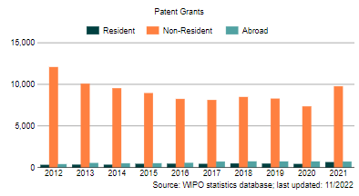
2011
245
11,240
233
2012
290
12,068
381
2013
312
10,056
514
2014
305
9,514
479
2015
410
8,928
488
2016
423
8,229
528
2017
407
8,103
689
2018
457
8,464
712
2019
438
8,264
706
2020
397
7,329
701
2. 주요제도
가. 특허 및 실용신안 출원의 대상
특허의 대상은 발명임. 특허는 자연물 또는 자연현상을 이용한 것으로서 신규성이 있고 산업상 유용한 발명에 대하여 일정 기간 주어진 독점권을 가지는 권리임
- 예를 들면, 이 세상에 없는 물건이나 장치를 창작하였거나, 이미 제조. 판매하고 있는 물건에 새로운 기술 내용을 추가하여 현저한 기술적 효과를 나타내었을 경우에도 발명이라고 할 수 있고 이 발명이 특허를 취득하였으면 특허권이 형성됨
실용신안의 대상은 실용신안 고안이며, 실용신안 고안은 발명과 같이 기술 수준이 높은 창작을 의미하지 아니하고, 발명보다 기술 수준이 높지 않다 하더라도 실용적이고, 어느 정도의 기술적 내용에 대해 창작성이 있으면 실용신안의 고안이라고 할 수 있음
- 통상, 발명은 대발명, 큰 발명이라 하고, 실용실안 고안은 소발명, 작은 발명이라고 함. 미국, 영국 등 실용신안 제도가 없는 국가에서는 실용신안 고안에 대해서 전부 발명으로 인정하고 있음
나. 발명의 정의
발명의 정의는 국가마다 그 뉘앙스가 다르지만 근본 개념은 동일함. 멕시코 산업재산법 제15조에서는 「자연계에 존재하는 물질 또는 에너지 중 하나를 인간의 특정 욕구를 만족할 수 있도록 이용할 수 있는 형태로 변경시키는 사람의 창작을 의미함」
- 자연계에 존재하는 물질(예컨대, 자연 속에 있는 화학물질, 자연물인 금광석, 구리·철 등)이나 에너지를 이용해서 인간의 욕구를 충족할 수 있도록 새로이 창작한 것이 발명임
- 실용신안의 법적 정의는 성질, 모양, 구조 혹은 형태의 변경을 통해 그 일부나 실용적 측면에서 다른 기능을 지니게 된 물체 기구, 장치 혹은 도구를 말함. 실용신안 등록을 위해서는, 실용신안이 새로운 것이어야 하며, 산업적으로 이용 가능해야 함(산업재산법 제27조, 제28조)
[표 17] 특허 및 실용신안의 정의
특허
실용신안 및 디자인
(1) 자연계에 존재하는 물질이나 에너지 이용
-발명은 사람의 힘이 가해지지 아니한 자연 그대로의 물질이나 에너지를 이용한 것이어야 함. 자연 그대로의 물건, 물질 등은 자연물로서 발명이 될 수 없음
(2) 발명은 인간의 특정 욕구를 충족
-발명자가 발명을 창작하는 최종의 목적은 수익을 창출하기 위한 것이며, 발명이 실시 불가능하거나 산업상 이용할 수 없는 발명은 발명으로서 성립할 수 없음
(3) 발명은 기술적 창작
-발명은 자연물을 이용한 기술적 창작이며 이 기술의 수준이 높으냐에 따라 발명과 디자인, 발명과 실용신안을 구별할 수 있음
-창작은 3가지 요소(만들어 낸 것, 새로운 것, 자명하지 아니한 것)를 갖추고 있어야 함
(1) 기술적인 면과 물품의 외관
-실용신안의 대상은 기술에 관한 창작이므로 물품의 구조, 장치, 형상 및 이들의 조합에 관한 기술을 대상으로 함
-디자인의 대상은 물품의 외관의 형상, 모양(그림), 색채 및 이의 결합을 대상으로 함
(2) 장식적인 면
-실용신안은 기술에 관한 창작이므로, 장식적인 형상, 모양은 대상이 되지 아니하고 디자인의 보호 대상이 됨
(3) 미감의 면과 실용적인 면
-디자인은 물품의 형상, 모양, 색채 그리고 이들이 결합된 것이 아름다운 느낌을 나타내야 하나 실용신안은 같은 형상이라도 미적 감각은 없어도 되나, 물품의 형상, 구조 및 이들의 결합된 것이 실용적이고 편리한 기능적이어야 함
다. 발명의 단일성
1발명 1출원주의는 하나의 발명에 대해서 하나의 특허출원만 할 수 있는 것을 의미함. 하나의 특허출원에는 1발명만 포함하여야 하며 하나의 특허출원에 2 이상의 발명을 포함시켜 출원하면 발명의 단일성에 위배되어 거절이나 정정 사유가 될 수 있음
- 멕시코 산업재산법 제43조에서 「특허출원은 단일발명 또는 서로 관련하여 단일발명 개념을 구성하는 1군(一群, 여러개의 발명)의 발명에 관한 것이 아니면 안됨」라고 규정하여 1특허출원의 범위를 규정하고 있음
(1) 단일발명과 관련발명
1특허출원의 범위를 1발명 1특허 출원으로 고집하면 발명이 2이상인 경우, 무조건 각각 출원을 해야 하며, 이럴 경우 밀접한 관련있는 발명이 2이상인 경우에 이를 각각 특허출원 하는 것은 특허 출원인에게 경제적 부담이 될 뿐만 아니라 심사 가중으로 인한 심사 지연은 물론 행정절차도 복잡해지는 폐단이 있음
- 따라서 법은 이런 문제점을 해소하기 위해서 2이상의 발명이 포함된 발명이라 하더라도 발명의 단일성을 충족하는 관련 있는 발명에 대해서는 1특허출원으로 할 수 있게 하였음
(2) 1발명 1출원주의에 위반한 경우
1발명 1출원주의에 위반한 특허출원은 거절됨. 특허청으로부터 거절이유통지가 송달되면 특허출원인은 거절이유를 정확히 판단하여 특허출원에 상이한 카테고리 발명이 포함되었다고 판단하면 분할출원하여야 하고, 그렇지 아니하면 특허출원이 1발명 1출원주의에 합치된다는 의견서를 특허청에 제출하여 거절이유를 극복하도록 노력하여야 함
라. 특허를 받을 수 있는 요건
(1) 특허출원이 전에 여러 사람에게 알려지지 아니한 발명(신규성)
발명이 특허출원 하기 전 국내외에서 여러 사람에게 알려진 발명이거나 공공연히 실시하고 있는 경우에는 특허를 인정하지 않음
- 발명이 특허출원 하기 전에 국내외에서 반포된 간행물(책, 카달로그, 팜플렛 등 도서)에 게재되었거나 여러 사람이 이용 가능한 상태에 있는 발명은 특허를 받을 수 없음
특허출원 전 국내에서 알려지고, 여러 사람이 공공연히 실시된 발명이라 하더라도 예외적으로 특허를 인정하는 경우가 있음
- 특허출원 전 국내외에서 개최되는 박람회, 전시회 등에 출품된 발명은 예외로서 출원 전 알려지지 아니한 발명으로 인정함. 물론 이 경우에 해당하는 발명을 특허 출원할 경우에는 발명이 국내외에서 개최하는 박람회, 전시회에 출품되었다는 서류를 특허청장에게 제출하여야 함(산업재산법 제18조)
- 발명자, 발명의 승계인이 특허 출원하기 전 12개월 이내에 어떤 전달 수단에 의하여 알려졌거나 발명을 실시한 경우에는 알려지지 아니한 발명으로 인정함
(2) 우리나라 특허법과의 대비
우리나라 특허법 제30조 제1항에서는 특허출원 전 발명이 알려졌거나 국내외에서 반포된 간행물에 게재되었어도 이러한 사실이 발명자의 의사에 반해서 알려진 경우엔 알려지지 아니한 발명으로 인정하고 있으나 멕시코의 법은 이에 대한 규정이 없는 점에서 상이함
(3) 용이하게 창작할 수 없는 발명(진보성)
진보성은 종래의 발명보다도 개량·발전하여 용이하게 창작할 수 없는 발명이라는 의미이므로 그 발명과 관련한 기술 분야에 종사하는 사람이 용이하게 창작할 수 있는 발명은 용이 창작에 해당하여 특허를 받을 수 없음
■ 진보성의 판단요소
특허출원서에 첨부된 명세서에는 발명의 목적, 구성, 효과 등을 기재하기로 되어 있으므로 이들의 내용을 주 판단 요소로 해서 진보성을 판단하여야 함
- 발명은 발명을 하게 된 목적이 특이하여야 함
- 발명의 구성은 특허를 받고자 하는 범위 중에서 가장 중요한 부분이므로 명세서 중에서도 매우 중요함. 발명의 구성이 용이하게 구성되어 있으면 용이 창작이 되어 특허 받기가 곤란함. 따라서 발명의 구성은 종래의 발명보다도 구성이 특이하고 용이하지 아니하여야하며 구성의 곤란성이 있어야 함
- 출원 발명의 효과와 종래의 발명을 대비 판단한 결과 특이성이 있거나 기술 수준이 현저하게 증대된 경우에는 효과에 현저성이 있다고 판단될 것이고, 그렇지 아니하고 예측 가능의 범위 내의 효과라면 진보성이 부정될 것임
산업재산법 제27조에서 실용신안 등록을 받으려면 신규성과 산업상 이용 가능성만 요구하고 있으므로 실용신안은 진보성이 없어도 실용신안으로 등록 받을 수 있음
(3) 산업상 이용가능성
멕시코 산업재산법 제12조 IV항에서 「산업상 이용 가능성이란 어느 발명이 경제활동의 어느 분야에서 생산되고 또는 사용될 가능성을 의미함」라고 규정하고 있음. 발명은 산업상 이용 가능성이 있어야 하고, 실시 불가능한 발명은 산업상 이용 가능성이 없음
(4) 특허될 수 없는 발명
[표 18] 특허받을 수 없는 사유
산업재산법
내용
산업재산법 제16조
• 동식물의 발생, 복제 또는 번식을 목적으로 하는 본질적인 생물학적 방법
• 자연계에서 발견되는 생물학적 및 유전학적 물질
• 동물의 품종
• 인체 또는 인체를 구성하는 생명 물질
• 식물의 품종
산업재산법 제19조
• 이론상 또는 과학상의 원리
• 지금까지 사람에게 알려지지 않아도, 자연계에 이미 존재하고 있던 것을 개시 혹은 분명히 하는 발견
• 정신작용을 실행하여 게임을 실시하고, 또는 사업 활동을 행하기 위한 정책, 계획, 규칙 및 방법 및 계산방법
• 컴퓨터프로그램
• 정보 제공의 방법
• 미적 창조물, 예술작품 및 문학작품
• 인체 또는 동물에 적용 가능한 외과 수술, 치료 또는 진단 처치 방법
산업재산법 제4조
우리나라의 특허받을 수 없는 사유(한국특허법 제30조)에 해당함. 발명이 공공질서에 위반하거나 공서양속에 반하는 경우는 특허될 수 없음
(5) 제일 먼저 출원한 발명(선출원주의)에 해당하는 발명
선출원주의는 발명을 가장 먼저 특허청에 출원한 사람에게 특허를 허여하는 주의임(산업재산법 제10조의2)
- 특허제도는 동일 내용의 발명에 대하여 하나의 특허만을 허여하여야 하는 1발명 1특허의 원칙 또는 이중특허 배제의 원칙이 적용됨
- 선출원주의는 동일발명을 같은 날에 2인 이상이 출원하였을 경우에는 적용하지 아니함
제2절 출원 및 심사절차
1. 특허 출원 절차
가. 특허출원
(1) 특허출원인이 될 수 있는 사람
• 발명자와 그 승계인(산업재산법 제11조, 제13조), 승계인은 특허 받을 수 있는 권리를 발명자로부터 양도받은 사람임
• 공동 발명자의 경우(산업재산법 제10조의2)는 공동으로 출원하여야 함
• 외국인은 우리나라와 외국인 나라 사이에 지식재산권 조약이나 협정, 또는 상호 지식재산권을 인정한다는 약정 등이 있어야 함
(2) 특허출원의 적법 요건
• 출원이 유효한 것일 것, 출원인이 특허출원을 할 수 있는 자격이 있어야 하고, 국내에 주소나 영업소를 가지지 아니한 외국인은 특허출원 자격이 없음
• 특허출원인은 발명자 또는 그 승계인이어야 함
• 출원의 대상물이 특허 판단의 대상이 될 수 있을 것
• 특허출원에 대하여 특허청 심사관이 판단할 수 있는 출원이어야 함
(3) 특허출원서에 기재할 사항
특허출원서에 기재할 내용은 다음과 같음 (산업재산법 제38조)
• 특허출원인 및 발명자의 성명·주소
• 특허출원인의 국적, 발명의 명칭
• 대리인이 있는 경우 대리인의 성명 및 주소
• 특허출원이 외국인의 출원일 경우 우선권주장 여부 (우선권을 주장하려면 최초 출원국가 및 출원번호, 최초 출원연월일을 표시하여야 함)
• 특허 출원연월일을 기재
나. 특허출원서류
특허출원서에는 다음의 서류가 첨부되어 있어야 함
• 명세서
명세서는 발명의 상세한 설명서임. 명세서는 발명의 목적, 발명의 구성, 발명의 효과를 구체적으로 기재하여야 함
• 필요한 경우 도면
• 1 또는 2 이상의 특허청구범위
특허청구 범위는 발명을 보호받고자 하는 범위이고, 발명의 구성을 중심으로 간단하고, 명확하게 기재하여야 하고, 독립청구 범위와 종속청구 범위로 나누어 기재하여야 함
• 명세서의 요약서
• 대리인이 있는 경우 위임장
출원인이 외국인인 경우는 멕시코 현지 변리사를 통해 출원해야 하고 그에 따른 위임장을 제출해야 함
• 위임장에는 출원인 국가의 멕시코 영사관 확인 및 공증사무소의 공증을 받아야 하고, 멕시코 국민의 2명이 증인으로 서야 함
• 출원인이 법인인 경우는 이사회의 결의서가 있어야 함
• 특허출원료 영수증
다. 특허청의 구비서류 첨부여부심사
(1) 특허출원서가 적법한 경우
• 특허청은 특허출원인으로부터 특허출원서를 접수하면 특허출원서류가 적법하게 구비되어 있는지 방식심사를 함
• 특허청은 특허출원서에 기재되어 있는 사항, 특허출원서에 첨부해야 할 구비서류가 전부 갖추었다고 판단되면 출원번호증을 특허출원인에게 부여함
(2) 특허출원서가 부적법한 경우
(i) 정정명령
특허청은 특허출원서를 심사(방식심사)한 결과 특허출원서의 기재사항 누락, 잘못된 기재사항이라든가, 특허출원서에 첨부되어야 할 서류가 미흡, 누락된 경우에는 특허출원인에게 이를 정정·보충하도록 보정명령하여야 함. 이 때 보정서 제출은 정정서를 발송한 날로부터 2개월내에 정정하여야 함. 특허출원서에 첨부된 서류가 외국문서인 경우는 자진해서 특허출원일로부터 2개월 내에 번역문을 제출하여야 함
(ii) 정정이 적법하지 아니한 경우
특허청은 특허출원에 대한 정정 명령이 있는데도 정정을 하지 아니하거나 적법하지 아니한 정정인 경우 이를 거절(각하)함
[표 19] 특허출원에서 특허부여 될 때까지의 절차도 비교
특허
실용신안
라. 출원방법
(1) 개별국에 출원하는 방법
국내 특허 출원 후 12개월 이내에 파리 협약에 의한 우선권을 주장하여 특허 획득을 원하는 모든 나라에 각각 개별적으로 특허 출원하는 방법임. 지금도 이 출원 방법을 많이 이용하고 있으며, PCT에 가입하기 전에는 모든 해외출원을 이 방법을 이용하였음
[그림 3] 개별국 출원 방법
(2) PCT에 의한 출원방법 (PCT System)
이 방법은 특허협력조약에 의한 출원 방법임. 국내 특허출원 후 12개월 이내에 파리협약에 의한 우선권을 주장하여 조약가맹국의 특허청(수리관청)에 하나의 PCT 국제출원서를 제출하고 20~30개월 후에 특허 획득을 원하는 국가(지정국가)에서 심사하여 특허를 취득할 수 있도록 하는 출원이며, PCT 출원 일자는 PCT출원을 수리한 특허청의 특허 출원일로 인정됨
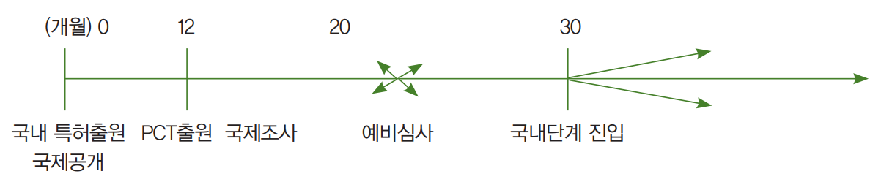
[그림 4] PCT에 의한 출원 방법
마. PCT 국제출원절차 및 심사
(1) PCT 국제특허출원서 제출
PCT 국제출원 절차는 출원인이 특허권을 획득하고자 하는 가맹국들을 지정하여 국제출원서를 멕시코 특허청 또는 가맹국 특허청에 제출하여야 함. 각 지정국에서 특허권을 획득하거나 거절됨으로써 국제특허 출원 절차가 종료됨. PCT 국제 출원 절차는 해외에서 이루어지는 절차를 국제단계라 하고, 출원인이 멕시코를 지정하여 멕시코 특허청에 출원 내용(명세서)을 기간내에 스페인 언어로 번역한 번역문을 제출하면 특허청에서 심사할 수 있음. 이 절차단계를 국내 단계라 함
[그림 5] PCT 국제특허출원 절차
(2) 출원서류
국제출원을 하고자 하는 자는 출원서(Request), 명세서(Description), 청구범위(Claim), 요약서(Abstract), 필요한 경우 도면(Drawings) 및 서류 목록(Sequence listing) 등을 특허청장에게 제출하여야 함. 이외에도 수수료 계산서(Fee Calculation), 대리인이 있는 경우 위임장 기타 필요한 서류를 첨부할 수 있음
(3) 국가지정
출원인은 출원시 출원서의 지정국란에 1개 이상의 국가를 지정하여야 함. 지정이 되지 않으면 국내 단계로 진입할 수 없고, 그 나라에서 특허를 받을 수 없음
- 출원인이 국제출원 후에 지정의 누락 또는 잘못된 부분이 있거나, 추가적으로 출원대상국을 지정하고자 하는 때에는 추가지정을 할 수 있는데, 이를 예비 지정 확인이라고 함. 예비 지정 확인은 우선일로부터 15개월이 만료되기 전에 하여야 하며, 지정료와 지정료의 50%에 해당하는 확인료를 납부하여야 함
(4) 우선권주장
파리협약 당사국에서 가장 먼저 출원한 출원을 기초로 하여 우선권주장을 할 수 있음. 먼저 출원한 출원이 무효, 취하, 포기 또는 거절되더라도 영향을 미치지 않음
(5) 구비서류첨부여부심사
수리관청은 출원된 PCT 출원에 대한 첨부 서류가 첨부되어 있는지 여부 심사를 함
• 출원인의 출원인 적격유무
• 소정의 언어로 작성여부
• 출원인 인적사항
• 명세서 및 특허청구범위(클레임) 첨부여부
• 국제출원이라는 표시여부 등
(6) 실체심사
멕시코 산업재산법에 의해 심사가 진행됨. 일반 심사 절차와 동일함
(7) 국제조사·국제공개
(가) 국제조사
국제조사는 반드시 거쳐야 할 사항이며, 특허출원 발명에 대하여 국제조사기관이 외국에서 이미 특허되고 공개된 기술인지, 이미 알려진 기술인지 조사하고 그 결과는 국제조사보고서로 작성되어 출원인 및 WIPO 국제사무국에 송부됨. 이 국제조사보고서는 출원인이나 지정관청을 구속하지 않으며, 각 지정국의 특허청에 대한 본심사를 하기 전에 출원인에게 자신의 출원과 관련된 이미 존재하는 기술의 존재 여부를 미리 알려주어 절차 진행의 계속 여부를 결정하는 데 참고자료로 활용할 수 있음
(나) 국제공개
국제공개제도는 출원 후 1년 6개월이 지나면 모든 PCT 국제출원에 대하여 그 내용을 강제적으로 공개하는 제도임. WIPO 국제사무국은 수리관청이 송부한 국제출원서류와 국제조사기관이 조사하여 보내온 국제조사보고서를 종합하여 국제공개 공보를 발행하고, 이를 출원인 및 각 지정관청에 송부함
(다) 국제예비심사 청구
국제예비심사는 국제출원에 관하여 본 심사가 아니고 예비적으로 심사하는 경우이며 출원인이 임의로 선택할 수 있는 절차로 국제출원서의 제출과는 별도로 국제예비심사기관에 국제예비심사 청구서를 제출하고 수수료를 납부하여야 함
- 국제예비심사는 구속력이 없고, 단지 지정국가의 특허청에서 실체 심사시 참고자료로 활용됨
[그림 6] PCT 절차도
[표 20] 국제기관 업무절차도
국제예비심사기관 업무절차도
국제조사기관 업무절차도
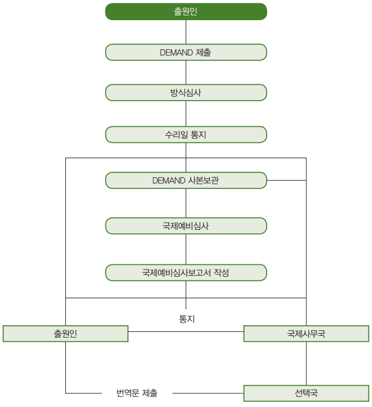
바. 우선권 주장을 한 특허출원
(1) 우선권의 의의
외국인이 자국 등 파리가맹국에 최초로 특허 출원하면서 1년 이내에 동일 출원 내용을 제2국인 멕시코에 출원하면 멕시코에 출원한 일자를 자국 등 파리가맹국에 특허 출원한 일자로 거슬러 올라가서 인정해주는 출원임
(2) 우선권의 성립요건
• 정식으로 출원된 발명
- 우선권을 주장하기 위해서는 특허청에 정식으로 출원된 것이어야 함. 출원은 정상적으로 특허 출원으로 인정된 출원이며, 이 출원이 중간에 취하·포기되어도 출원 자체는 출원으로서 인정됨
• 최초의 출원
- 우선권이 인정되기 위해서는 동맹국에 최초 출원한 것을 근거로 하여 우선권이 인정됨
• 주체의 동일성(출원인의 동일)
- 우선권이 인정되기 위해서는 동맹국에 최초로 출원한 출원인과 멕시코에 출원한 출원인이 동일하여야 함
• 내용의 동일성
- 우선권을 주장하기 위해서는 2번째 국가(멕시코)에 한 특허출원과 최초의 제1국 특허출원의 내용이 동일하여야 함. 특허출원 내용이 동일하지 아니하면 우선권이 인정되지 아니하고 멕시코 특허청에 출원한 날이 특허출원일이 됨
• 제1국 특허출원일로부터 1년 이내에 출원
- 우선권을 주장하기 위해서는 파리가맹국에 제일 먼저 특허 출원한 날로부터 12개월 이내 동일 발명을 제2국 특허청에 특허 출원하여야 함
(3) 우선권주장 절차
(가) 우선권 증명서류 제출
멕시코 특허청에 특허 출원하면서 우선권을 주장하기 위해서는 멕시코 특허청에 특허출원한 날로부터 3개월 이내에 우선권 증명 서류를 제출하여야 함(산업재산법 제41조 IV)
- 이 증명 서류는 파리가맹국에 최초 특허 출원한 사본이며 여기에는 출원번호, 출원일시 등이 기재된 서류를 제출하여야 함. 이 서류는 통상 특허출원 사실증명서를 말함
(나) 우선권 증명서의 번역문 제출
동맹국에 최초로 출원한 출원서류는 전부 파리가맹국의 국어로 특허 출원한 것이므로 이를 제2국 출원인 멕시코 특허청에 출원할 경우에는 당연히 멕시코의 국어인 스페인 언어로 번역하여 제출하여야 함
- 제1국 최초 출원 내용(명세서·도면 등)과 멕시코 특허청에 특허 출원한 내용(명세서·도면 등)이 동일한 경우에는 번역문을 생략한다는 서류를 제출하여야 함
- 복합우선권을 주장한 경우에는 최초 출원과 멕시코 특허청에 출원한 내용이 상이하므로 우선권 번역문을 제출하여야 함
(다) 우선권주장의 효과
우선권주장 내용이 적법한 것으로 인정되면 산업재산법 제16조의 특허요건과 제42조의 선출원주의 규정을 적용함에 있어서, 멕시코 특허출원은 최초 출원국인 제1국 출원일에 특허 출원한 것으로 인정됨
사. 특허분할출원
(1) 분할출원이 되기 위한 요건
• 최초 출원이 특허청에 적법하게 계속 중이어야 함. 여기에서 최초 출원이란 분할 하기전의 최초 출원을 의미하며, 그 원출원이 취하·포기·출원절차의 무효가 되어서는 안됨
• 분할출원은 특허청이 분할출원 지시한 날로부터 2개월 내에 분할하여야 함
• 분할출원인은 분할 하기전의 최초 출원인과 동일인이어야 함. 만약 양자가 다른 경우 보정에 의하여 일치시켜야 하며, 일치시키지 못하면 거절됨
• 분할출원은 분할출원하기 전 최초의 출원(원출원)서에 첨부된 명세서와 도면에 기재된 범위 내에서 하여야 하고, 최초 출원에 기재된 발명을 변경해서는 안됨
• 최초 출원에는 2이상의 발명이 포함되어 있어야 함. 여기에서 2이상의 발명은 법 제43조 1발명 1출원주의 관련 발명이 아니고 상호 관련 없는 발명을 말함
(2) 분할출원의 효과
(가) 분할출원 출원일은 최초 출원일자로 인정
분할출원에 의해 분할된 특허출원일은 분할되기 전 최초 출원의 출원일자가 분할출원자가 됨. 이는 변경출원과 동일하게 선출원주의 예외임. 또 신규성·진보성 등 판단도 최초 출원시를 기준으로 판단함
(나) 최초 특허출원과의 관계
분할출원에 의해 생긴 분할출원과 최초 출원은 상호 별개로 독립된 출원이고 상호 종속관계도 아님
(3) 우리나라 분할출원과의 대비
우리나라 분할출원 제도는 하나의 출원에 2이상의 발명이 포함된 경우에 특허청은 출원인에게 분할출원하도록 지시하지 아니하고 출원에 2이상의 발명이 포함되어 있기 때문에 거절한다는 제1차 거절이유통지서를 특허출원인에게 통지함. 그러나 멕시코는 특허청에서 판단한 결과 1출원에 2이상의 발명이 포함된 경우는 특허출원인에게 분할출원 지시를 하는 점에서 우리와는 좀 다름
사. 특허변경출원
(1) 의의
특허 출원한 내용이 특허출원인의 의사와 보호 방식이 일치하고 있지 않다고 생각될 때에, 출원인은 특허출원을 실용신안등록 출원으로 또는 디자인등록출원으로 변경할 수 있고 또 그 반대도 가능함(산업재산법 제49조)
(2) 변경출원의 절차
(가) 실용신안등록출원을 특허출원으로 변경
(i) 새로운 특허출원서 및 명세서, 도면, 요약서 제출
특허출원서를 새로 작성하여 실용신안 출원일자와 출원번호를 표시하고, 명세서, 요약서 및 필요도면을 첨부하여 특허청에 제출하면 됨
(ii) 새로운 출원번호 발급
특허청장은 첨부서류 구비여부 심사를 거쳐 구비서류가 갖추어져 있다고 판단되면 새로운 출원번호를 출원인에게 부여함
(나) 특허출원을 실용신안등록 출원으로 변경
위의 내용과 동일한 절차를 밟으면 되며, 이 경우에도 새로운 실용신안등록출원서에 특허출원일자와 출원번호를 표시함. 그 외는 위와 같음
(다) 특허출원, 실용신안등록출원을 디자인등록 출원으로 변경
디자인등록출원에 첨부되는 필수서류는 도면이기 때문에 특허출원이나 실용신안등록출원의 필수서류인 명세서는 필요하지 않음. 또 디자인 도면은 특허 및 실용신안 도면과 상이하므로 디자인 설계 도면에 적합하게 그려 그 물품의 형태를 용이하게 파악할 수 있게 해야 함. 그 외는 위와 같음
(라) 디자인등록출원을 특허출원 및 실용신안등록 출원으로 변경
디자인등록 출원서에는 명세서가 필요 없으므로 디자인의 도면을 보고 명세서를 작성하여야 하며, 이 명세서는 디자인등록 출원서에 첨부된 도면을 상세히 검토하여 내용을 추가하거나 변경하여 명세서를 작성해서는 안됨. 그 외는 위와 같음
(3) 변경출원의 효과
(가) 출원일은 변경되기 전의 출원일로 인정
변경출원된 출원일은 변경되기 전의 원출원일로 거슬러 올라가서 인정되고, 특허요건의 판단도 변경되기 전의 원출원시를 기준으로 판단함(산업재산규칙 제41조)
(나) 원출원은 취하
변경출원이 있는 경우에는 변경출원되기 전의 원출원은 취하된 출원으로 봄. 그렇지 않으면 원출원이 살아있는 출원으로 보게 되어 2중 출원으로 되기 때문임
(4) 우리나라 변경출원과의 대비
변경출원에 대한 멕시코 산업재산법은 특허청의 변경 지시가 있는 경우 3월 이내에 변경출원하지 않은 경우에 그 출원은 포기된 것으로 본다는 규정(제49조)과 산업재산규칙 제41조에는 변경출원의 효과인 출원일의 소급에 관한 규정만 있을 뿐 우리나라 특허법 제53조와 같은 구체적인 규정은 없음
2. 특허 심사 절차
가. 특허출원실체심사 전 단계
특허청 심사관은 특허출원 당시 구비서류 첨부여부 심사를 거친 특허출원에 대해서 다시 첨부서류 구비여부 심사와 실체심사를 진행함
(1) 구비서류 첨부여부심사
특허청 실체심사 심사관도 특허출원의 구비서류가 갖추어져 있는가 여부, 명세서, 도면, 클레임 및 요약서 등이 첨부되어 있는가 여부를 심사함. 이 방식심사는 기초적인 심사라고 함
(2) 실체심사 전 먼저 특허여부조사
(i) 특허심사와 공개된 특허 기술조사
특허청의 주 임무는 특허출원에 대한 실체적인 심사이며, 이 심사에서 특허허여 여부를 판단하게 됨(산업재산법 제53조). 심사관은 해당 특허출원이 특허요건이나 특허 받을 수 없는 사유에 해당하는지 여부를 심사하고, 심사를 하기 위해서는 멕시코 국내외의 특허관련 정보문헌을 철저하게 조사하여야 함
- 즉, 특허출원 실체심사에 착수하기 전에 먼저 비치된 공개 특허 등 기술조사를 하여야 하며, 특허허여 여부는 관련 공개 및 먼저 특허된 특허조사, 문헌조사에 의해 좌우됨
(ii) 조사자료
각국의 특허청의 자료 조사는 특허청에 비치된 특허문헌을 주로 조사함. 그 외 기술문헌, 연구논문 등을 들 수 있음
(iii) 외부전문기관에 조사의뢰
멕시코도 특허출원의 실체심사를 실시하기 위하여 적당하다고 판단하는 경우, 특허청은 전문국립기관에 심사를 의뢰할 수 있음(산업재산법 제53조)
나. 실체심사의 착수
(1) 거절이냐 특허허여냐
특허청은 특허출원 내용과 관련한 공개되고, 먼저 특허된 특허 기술조사를 철저히 행한 후 특허출원 발명과 조사한 문헌이 동일, 유사한가를 대비하여 특허출원을 거절할 것인가 특허를 허여할 것인가를 결정하여야 함
- 특허출원의 실체심사는 특허출원이 법 제4조의 공공질서 및 선량한 공서 양속에 저촉되는지, 발명이 1발명 1출원을 충족하고 있는지 여부도 심사하여야 함은 물론, 명세서, 클레임, 첨부된 도면 등을 심사하여 특허허여 여부를 결정하여야 함(산업재산규칙 제42조)
(2) 외국 특허청이 행한 심사자료 요청
특허청은 외국 특허청이 행한 실체심사의 보고서도 특허허여 여부에 관한 기술적 자료문헌으로 참조하여야 함(동규칙 제44조). 이 경우, 특허출원인은 해당 외국특허청에서 발행한 특허내용을 스페인 언어로 번역하여 제출하여야 함. 이는 하나의 발명을 한국에 출원하고 이를 다시 멕시코 특허청에 출원하여 이를 멕시코 특허청에서 실체심사 과정에 한국에 특허출원한 발명이 특허가 허여되었는지 여부를 특허증이 발급된 경우에 이를 멕시코 특허청에서 심사하는데 참고하기 위한 것임
- 이 제도는 출원인을 위한 제도이고 멕시코 특허청도 이러한 사실이 있으면 특허출원인에게 관련 자료를 요청할 수 있음(제54조)
(3) 거절이유
한국 특허법 제62조에는 거절이유가 구체적으로 명시되어 있으나, 멕시코 산업재산법에는 우리나라와 같이 상세한 거절이유 명시 규정이 없음. 따라서 멕시코 법에서 특허출원에 대한 거절이유를 든다면 다음과 같음
• 산업재산법 제16조의 특허받을 수 있는 요건(특허요건)을 위반한 경우
• 산업재산법 제19조 특허를 받을 수 없는 사유에 해당하는 경우
• 산업재산법 제42조의 선출원주의에 위반한 특허출원인 경우
• 산업재산법 제43조의 1발명 1출원주의에 위반된 경우
(4) 거절이유 통지
특허청은 특허출원의 심사결과 특허거절결정을 할 경우에는 그 특허출원인에게 거절이유를 통지하고 2개월 내에 의견서를 제출할 수 있는 기회를 주어야 함(동 규칙 제45조)
(5) 의견서 제출
특허청의 거절이유 통지서에 대하여 특허출원인은 거절이유와 특허출원 발명이 기술적으로 동일·유사 여부를 발명의 목적, 발명의 구성 및 효과를 상세히 검토하여 차별화된 기술 내용을 부각시킨 의견서를 소정기간 내에 작성하여 제출하여야 함(동 규칙 제45조)
- 즉, 의견서는 특허청의 거절이유에 대한 반박서이고, 해당 발명의 특허부여를 요구하는 문서이므로 의견서는 거절이유에 명시된 거절이유를 극복할 수 있도록 분야별로 나누어 작성할 필요가 있음
(6) 특허청구범위의 정정
특허출원인은 특허청으로부터 거절이유통지서를 접수하면 특허출원 발명과 거절이유와 대비한 결과 양자간에 동일·유사한 점이 있고, 또 차이점이 있다고 판단하거나, 클레임을 변경, 수정하면 특허가 될 수 있다고 판단되면 특허청에 클레임(특허청구범위)을 변경, 수정하는 보정서를 제출하여야 함(동 규칙 제45조). 이 때 보정서는 최초의 출원서에 첨부된 명세서나 도면의 범위내의 변경, 수정이어야 함
(7) 의견서 제출기간 연장 가능
거절이유에 대한 의견서는 2개월 이내에 제출해야 하나, 2개월 정도의 기간 연장이 가능함(제58조). 의견서 제출 기간을 연장하려면 소정의 수수료를 납부해야 하고 수수료를 납부하지 아니하면 그 특허출원은 포기된 것으로 봄(제58조)
(8) 의견서를 제출하지 아니한 경우
특허출원인은 특허청으로부터 거절이유통지서를 받고 2개월 내에 의견서를 제출하지 아니한 경우, 그 특허출원은 포기한 것으로 봄(동 규칙 제45조)
- 우리나라의 특허청도 거절이유에 대한 특허출원인의 의견서 제출이 없는 경우에도 재심사하여 특허허여 여부를 결정한 후 특허출원 거절 결정함
다. 출원보정(정정)
(1) 출원보정의 대상
출원보정(정정)은 특허출원서에 첨부된 명세서, 도면, 클레임 및 요약서의 내용에 대해 오자, 탈자, 기재누락, 추가로 보충할 사항 등이 있는 경우에 하는 보정임(산업재산법 제55조)
다음 사항의 경우 특허청은 출원인에 대해서, 외국특허청에 의하여 이루어진 조사 혹은 심사에 관한 것을 포함하여 필요하다고 여겨지는 추가적 또는 보충적인 정보 또는 서류를 2개월 이내에 제출하게 함으로써, 클레임, 명세서 혹은 도면을 보정 또는 적절한 명확화를 실시하도록 출원인에게 서면으로 요구할 수 있음
•실체심사를 위하여 필요하다고 특허청에서 판단하는 경우
•실체심사 중 혹은 실체심사의 결과로서 특정된 발명이 특허요건을 충족하고 있지 않는 것 또는 제16조(특허요건)및 제19조(특허될 수 없는 사유)에 규정하는 사유의 어느 쪽인가에 해당하는 것이 밝혀졌을 경우 본 조에 규정하는 기간 내에 출원인이 특허청에 의한 요구에 응하지 않는 경우 해당 출원은 포기된 것으로 간주됨
(2) 보정범위
(i) 중요부분변경 금지
법 제50조(첨부서류 구비여부심사·보정) 및 제55조(명세서 등 보정)에 규정되는 요구에 따라 또는 출원인의 자발적 행위에 의하여 제출되는 서류에는 전체적으로 최초의 출원에 포함되지 아니한 발명을 추가하거나 또는 클레임(청구항)을 추가적으로 보충할 수 없음(산업재산법 제50조2)
(ii) 보정할 수 있는 범위
다음의 경우에는 보정할 수 있음
• 특허청구범위를 감축(축소)하는 경우
• 잘못된 기재를 정정하는 경우
• 분명하지 아니한 기재를 명확하게 하는 경우
• 명세서 또는 도면의 보정은 특허청구범위를 실질적으로 확장하거나 변경하지 아니할 것
• 보정 후 특허청구범위에 기재된 사항이 특허 출원한 때에 특허를 받을 수 있을 것
(3) 보정시기
특허출원의 내용을 보정할 수 있는 시기는 특허결정 또는 거절 결정이 날 때까지 보정할 수 있음
(4) 명세서, 도면, 클레임을 보정한 일자가 출원일
특허청은 특허출원서에 첨부된 명세서, 도면, 클레임을 첨부하기로 되어 있고 또 멕시코에 신청하는 모든 서류는 스페인 언어로 작성하여 제출하기로 되어 있으며, 외국어로 된 서류는 번역문을 제출하기로 되어있음(산업재산법 제179조)
이에 위반한 특허출원서를 출원인이 누락된 요건을 충족하는 서류 등을 제출하든지 또는 그 외의 방법으로 미비 요건을 보정한 경우 그 보정 일자가 출원일로 인정함(산업재산규칙 제38조)
(5) 보정기간 내에 보정하지 않는 경우는 포기로 인정
특허청으로부터 보정지시 받은 날부터 2개월 이내에 출원인이 특허청에 의한 요구에 응하지 않은 경우, 해당 특허출원은 포기한 것으로 봄(산업재산법 제55조)
(바) 보정의 효과
(i) 절차 계속 진행
특허청의 지시에 의한 보정이 적법한 보정이라고 인정되면 절차가 계속 진행됨. 또 특허출원에 대한 보정이 적법할 경우에 그 특허출원은 보정된 내용에 따라 이루어진 것으로 보고 심사절차 등이 진행됨
(ii) 보정 내용은 특허출원일까지 소급
보정은 원출원을 명확화, 분명하지 아니한 것을 명확화하는 것이므로 원 출원과 일체적인 것으로 보고 보정은 특허출원시까지 소급됨
라. 우리나라 보정제도와의 대비
(1) 명세서 등의 누락에 대한 보정과 반려
멕시코는 명세서·도면, 클레임의 누락과 외국어 서류의 번역문 누락 등이 있는 특허출원서류에 대하여 상기 누락된 서류를 보충하든지 또는 그외 방법으로 미비요건을 보정한 경우 그 보정 일자를 특허출원일로 인정함(산업재산규칙 제38조)
우리나라 특허법시행규칙 제11조 제1항5호, 제5의2호에서 명세서의 누락, 클레임의 누락이 있는 특허출원인 경우에는 이 특허출원서를 특허출원인에게 되돌려 주기로 되어 있음. 이 경우 특허출원인은 반환된 특허출원서를 완전히 재작성하여 특허청에 특허출원서를 제출하면 됨
(2) 중요한 사항 변경의 경우와 보정할 수 있는 범위
멕시코 산업재산법 제50조의2에서 특허출원인은 보정의 내용이 원출원을 변경하거나 새로운 사항을 추가하는 보정은 인정되지 아니함. 이에 대해 우리나라 특허법의 규정은 출원서에 첨부된 최초의 명세서, 도면의 범위 내에서의 보정은 요지변경(중요한 사항의 변경)이 아니다라고 하였으며, 발명의 상세한 설명에 있는 내용을 추후 클레임에 추가하는 경우에도 요지변경이 아니다라고 하였음
- 멕시코 산업재산법은 막연히 보정서류에 전체적으로 원출원의 내용을 초과하는 범위의 재료 또는 클레임을 추가적으로 포함할 수 없다고 함(산업재산법 제56조의 2)
마. 특허부여하기 위한 결정과 거절하기 위한 결정
(1) 특허부여하기 위한 결정
특허결정은 심사관이 거절이유를 발견할 수 없거나 거절이유에 대한 의견서를 검토결과 특허결정하는 행정처분임. 출원인은 해당 거절이유에 대해서 보정서 또는 의견서를 제출한 결과 거절이유를 해소시킨 경우에는 특허결정을 하여야 함(제57조)
(2) 특허거절 하기 위한 결정
특허청은 특허출원을 실체 심사한 결과 거절이유가 있거나 특허출원인의 의견서에도 거절이유를 극복할 수 없다고 판단한 경우엔 특허출원을 최종적으로 거절한다는 결정을 하여야 하고, 이를 특허출원인에게 서면으로 통지하여야 함. 이 거절결정서에는 거절의 법적근거 및 이유를 명시하여야 함(제56조)
바. 특허공고
특허청은 특허허여를 위한 특허결정을 하고 동시에 2개월내에 특허공고를 해야 하고 특허증을 발행하기 위한 수수료를 납부하도록 특허출원인에게 서면으로 통지하여야 함(제57조)
- 특허출원인이 2개월 기간 내에 수수료를 납부하지 않은 경우 그 특허출원은 포기한 것으로 봄(제57조).
사. 한국의 특허출원 심사와의 대비
(1) 거절이유에 관한 명시 여부
멕시코 산업재산법은 특허출원심사에 관한 법 체제뿐만 아니라 산업재산법 전반에 걸쳐 우리 한국 특허법에 비해 구체적으로 규정되어 있지 않음. 우리 법에서는 거절이유가 명시되어 있는데 비해 멕시코 법은 법에서 거절이유로 규정되어 있지 않는 것은 공동출원에 위반된 출원, 조약에 위반된 경우, 클레임이 명료하지 않는 등 규정에 위반한 경우, 보정의 범위를 벗어난 경우, 분할출원 및 변경출원 규정에 위반한 경우 등을 들 수 있음
(2) 심사를 실제로 하는 사람에 대한 대비
우리 특허법은 특허출원 심사를 실제로 하는 사람을 특허청 심사관이라고 명시하고 있는데 비해, 멕시코 산업재산법은 전반적으로 심사를 실제로 하는 사람을 심사관이 아닌 특허청으로 명시하고 있는데 차이점이 있음
(3) 보정의 범위에 대한 대비
우리 특허법은 특허출원 심사과정에 있어서 명세서나 도면, 청구범위를 특허출원인이 보정할 경우 보정의 범위를 구체적으로 명시하고 있으나 멕시코 법은 원 명세서, 도면, 청구범위를 추가변경 할 수 없다고만 규정되어 있음
(4) 특허결정 후에 있어서의 대비
우리 특허법은 특허청 심사관으로부터 특허허여 하겠다는 특허결정서가 특허출원인에게 송부되고 특허출원인이 소정기간(특허결정서를 받은 날로부터 3개월 이내)내에 특허료 3년분을 납부하면 특허청은 특허증을 발급하고 이를 특허출원인(특허권자)에게 송부하여 특허출원 심사가 종료됨. 이에 대해 멕시코는 특허결정서를 특허출원인에게 송부함과 동시에 특허공고에 필요한 수수료와 특허증 발행 수수료를 납부하면 특허증을 발급하고, 특허 공고됨
아. 특허출원공개 제도
특허출원공개 제도는 특허출원일로부터 또는 우선일로부터 18개월이 경과한 특허출원 내용을 특허공보에 게재하여 일반 국민에게 공개하는 제도임. 특허출원공개는 특허되기 전, 또는 심사에 착수하기 전에 특허공보에 게재하는 것이 일반적임
(1) 특허출원공개 제도의 종류
(가) 특허출원일로부터 1년 6개월 경과한 경우
멕시코 산업재산법도 출원공개 기간에 관계없이 출원인의 신청에 의해 특허출원을 조기에 공개하는 조기공개 제도와 특허출원일로부터 또는 우선일로부터 18개월 경과한 특허출원에 대해 공개하는 제도로 나눌 수 있음(산업재산법 제52조)
(나) 조기공개제도(자기공개제도)
조기공개제도는 특허출원 후 18개월이 경과하기 전이라도 특허출원인이 필요한 경우에 언제든지 특허출원을 조기에 공개해 달라는 공개 신청이 있는 경우에 특허 공보에 공개하는 제도임
(2) 공개시기
(가) 특허출원일로부터 18개월 경과한 특허출원
특허청은 특허출원일로부터 18개월이 경과하면 그 특허출원에 관하여 특허공보에 출원공개를 하지 아니하면 아니됨
(나) 우선권주장 출원인 경우 18개월의 기산점
• 산업재산법 제40조의 규정에 의한 우선권 주장을 수반하는 특허출원에 있어서는 그 우선권 주장의 기초가 된 출원일
• 2이상의 우선권 주장을 수반하는 특허출원은 해당 우선권 주장의 기초가 된 출원일 중 최선일
(다) 조기공개제도의 공개시기
특허출원의 조기공개제도는 출원일로부터 18개월이라는 기간에 관계없이 특허청은 특허출원인이 언제든지 원하는 기간을 정하여 공개 신청하면 조기에 특허공보에 공개함
(3) 출원공개의 효과
(가) 손해배상청구권의 발생
특허출원이 특허공보에 공개된 후 제3자가 특허출원인의 승낙을 얻지 아니하고 특허출원 발명과 동일·유사한 발명을 실시하고 있는 사이 해당 특허출원이 심사에 의거 특허권이 부여되면 특허권자는 특허 대상 발명을 실시한 제3자에 대하여 손해배상을 청구할 수 있음(산업재산법 제24조). 이 손해배상청구 제도는 우리나라의 보상금청구 제도와 동일·유사한 제도임
(나) 정보 제공
이 정보 제공은 민간인의 심사 협력이고 심사의 완전성과 공정성을 기하며 심사의 신속, 심사의 질을 높일 수 있음. 특허청에 정보 제공할 수 있는 사람은 누구든지 할 수 있음
(4) 우리나라 제도와의 대비
(가) 특허출원공개 제도의 미흡
이 특허출원공개에 관한 규정도 다른 제도와 마찬가지로 산업재산법 제52조에서 특허출원을 출원 공개할 수 있고 출원 후 18개월이 경과되지 아니한 출원에 대해서도 조기공개 신청할 수 있다는 내용만 있을 뿐이지, 정보 제공을 하면, 그 처리는 어떻게 하는지에 대한 규정이 없음
(나) 한국의 출원공개의 효과에 대한 규정과의 대비
우리나라 특허법 제65조에서는 출원공개 후 타인이 업으로 특허출원 발명과 동일·유사한 제품을 제조·판매하는 자에게 사용 중지 요청 즉 경고장을 발송할 수 있도록 규정하고 있는데 반해 멕시코 법은 위의 규정이 없음
자. 기술별 심사경향
멕시코는 미국과 접경하고 있는 국가로서 미국의 특허제도의 개정과 특허심사경향에 대해 민감하게 작용함. 이는 우리나라도 마찬가지인데 우리나라나 멕시코는 다 같이 미국에 수출하는 물량이 다른 나라에 비해 많은 양을 차지하고 있기 때문임. 따라서 한때는 미국의 심사완화 경향에 따라 멕시코도 이의 영향을 받아 가급적이면 특허를 부여하는 쪽으로 흐르는 경향이 있었음
한편, 출원절차나 서류의 완전성을 위해 심사관의 거절 지시나 보정 지시하는 횟수가 우리나라에 비해 많은 점이 또 하나의 특징임. 우리나라의 심사 경향은 가급적이면 보정지시보다 거절 이유를 통지하여 출원인 자신이 거절 이유를 해결하도록 하는 경향이 있음
뿐만 아니라 멕시코 산업재산법은 우리나라 산업재산법보다 구체적으로 규정되어 있지 아니하여 심사관의 주관적 판단에 의해 심사하는 경향이 많음. 또, 멕시코의 심사경향은 유럽특허제도의 영향도 많이 받아 유럽제도의 심사 경향에 민감하고, 특히 유럽 중에서도 스위스의 포맷을 따르는 경우가 많음
- 예를 들면, 만일 클레임을 제기할 약학적 사용이 전문가가 보기에 분명하지 않은 산업적 결과인 경우, 이들 약학적 사용은 성분이 새로운 것인지 여부에 관계없이 MIPL에 따라 보호를 받을 수 있음. 이러한 클레임은 “스위스 스타일의 포맷”이 되어야 함. 즉, “성분 ‘X’를 특정 질병을 치료하기 위한 약물로 만들기 위해 사용”은 형식이어야 함. 성분 ‘X’를 단순히 약물로 사용하기 위한 용도 혹은 그와 유사한 것들을 나열한 클레임은 보통 받아들여지지 않음
3. 이의/심판 절차
가. 거절결정불복청구 제도
(1) 의의
거절결정불복재청구 제도는 특허출원인이 특허청으로부터 특허출원에 대한 특허거절결정을 받은 날로부터 30일 내에 특허청에 불복하여 특허거절결정을 취소시키고 특허결정을 요구하는 제도임(산업재산법 제200조). 이 재심사 청구는 실용신안·디자인에도 그대로 적용됨(산업재산법 제200조)
(2) 청구
(가) 청구인
청구인은 특허청으로부터 특허거절결정서를 통보받은 특허출원인임. 특허출원이 공동출원인인 경우에는 공유자 전원이 청구하여야 함
(나) 청구기간
청구는 해당 특허 거절결정에 대한 통지가 송달된 때부터 30일 이내에 청구하여야 함
(다) 청구대상
특허거절결정을 받은 특허출원 내용이 청구 대상임. 특허출원심사 계속 중에 제출된 보정서, 의견서 등도 청구 대상이 됨
(라) 청구서 제출
청구인은 청구서를 특허청에 제출하여야 함. 이 청구서에는 다음의 내용이 기재되어야 함
• 청구인 및 대리인이 있는 경우 대리인 성명
• 출원일자 및 출원번호
• 통지의 송달 및 서류를 받을 주소
• 명확하고 정확한 용어로 표현된 청구의 대상
• 청구사실의 상세한 설명
• 청구의 법적 근거
(마) 심사
특허청은 청구서에 기술된 주장 및 제출된 서류를 심사한 후 보정지시 사항이 있으면 청구인에게 지시함
(바) 결정
특허청은 서류를 심리한 후 적정한 결정을 내리고, 그것을 서면으로 청구인에게 통지함(산업재산법 제201조)
(3) 결정의 효과
청구에 대한 심결은 거절결정과 특허결정으로 나누어짐
(가) 거절하기로 결정을 할 경우
특허청의 결정이 불복 청구를 거절하는 경우, 그 결정을 청구인에게 서면으로 통지하고, 동시에 특허공보에 공시함(산업재산법 제202조)
(나) 특허부여 하기로 결정을 할 경우
(i) 특허결정서 통지
특허청의 결정이 청구를 이유 있다고 받아드리는 경우 특허결정서를 청구인에게 서면으로 통지하여야 함
(ii) 특허공고, 특허증 발급(산업재산법 제59조)
(나) 특허부여 하기로 결정을 할 경우
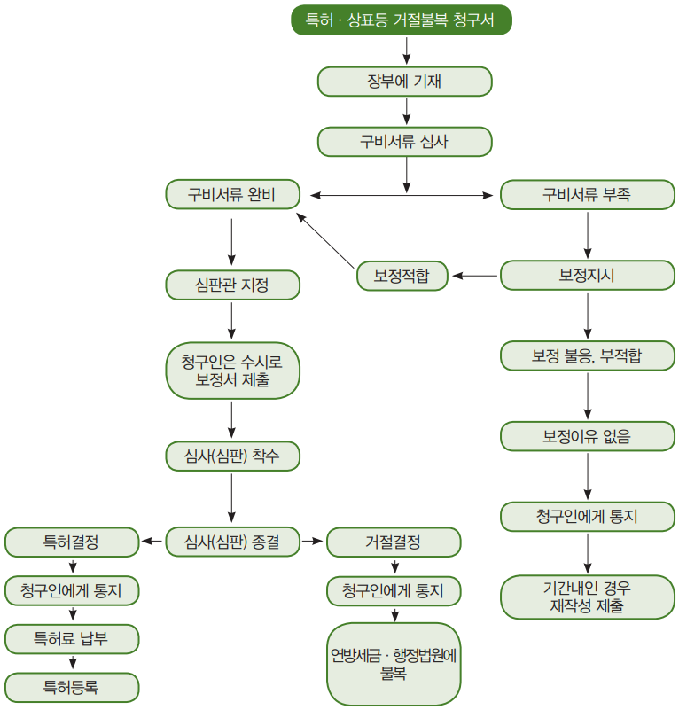
[그림 7] 특허거절불복 청구 절차도
나. 특허무효청구 제도
(1) 의의
특허의 무효란 유효하게 설정 등록된 특허발명이 산업재산법에 명시된 법정 무효 사유에 해당하는 경우 그 특허권의 효력을 특허 부여시까지 거슬러 올라가서 소멸시키는 제도임. 이 특허의 무효는 소급적으로 권리를 소멸시키는 제도라는 점에서 특허권의 효력을 장래에 향하여 소멸시키는 특허의 취소와 다름
(2) 무효사유
(가) 산업재산법 제78조
① 특허등록이 산업재산법 제16조의 특허요건에 위반하여 특허된 경우 특허요건은 발명이 신규성, 진보성 및 산업상 이용 가능성이 있어야 하는데 이를 갖추지 못한 발명이 특허된 경우임
② 특허 혹은 등록이, 그 시점에서 효력을 가지고 있는 다른 법률 규정에 위반해 주어졌을 경우 본 호에 기초하여 특허 혹은 등록의 무효를 주장하는 소(訴)는, 해당 특허출원인의 인격 대표자에 대한 하자에 기초하는 것이어서는 안됨
③ 심사의 과정에 해당 특허출원이 포기되었을 경우
④ 특허 부여 혹은 등록에 중대한 착오 또는 과실에 의한 하자가 있었을 경우, 또는 특허 등록이 특허 받을 자격이 없는 자에게 부여된 경우
⑤ 심사의 계속 중에 있는데 특허출원이 포기된 경우
⑥ 특허부여에 중대한 착오 또는 과실에 의한 하자가 있었을 경우 또는 특허를 받을 자격이 없는 자에게 특허된 경우
(나) 실용신안·디자인 무효사유
특허의 무효사유와 동일함
(3) 무효청구
(가) 무효청구인
특허 무효청구인은 이해관계인이면 누구나 청구할 수 있음. 청구인이 개인이든, 법인이든, 특허청도 청구할 수 있고 또 연방 정부가 이해관계를 가지는 특정의 경우는 연방 검찰관도 특허 무효를 청구할 수 있음
(나) 무효청구기간
(i) 무효사유 중 ①, ②는 언제든지 청구
무효사유 중 ①, ②는 특허 무효 청구할 수 있는 기간은 없으며, 특허발명이 특허 공고된 때부터 언제든지 무효 청구할 수 있음(산업재산법 제78조(IV))
(ii) 공고된 때부터 5년 이내
그러나 특허무효 사유 중
• 특허발명이 심사계속 중에 특허출원이 포기되었을 경우
• 특허부여가 중대한 착오 또는 과실에 의한 하자가 있었을 경우
• 특허등록을 받을 자격이 없는 자에게 특허가 되었을 경우에는 특허공보에 등록공고가 발효한 날로부터 5년 이내에 무효 청구할 수 있음
(다) 무효청구서 제출
(i) 특허청에 무효청구서 제출
특허 무효청구서는 특허청에 제출하여야 함. 특허 무효청구서에는 다음의 사항이 기재되어야 함(산업재산법 제189조)
• 청구인 및 그 대리인(있는 경우)의 성명
• 통지의 송달 및 서류를 받을 주소
• 상대방 당사자(특허권자 등) 또는 그 대리인의 명칭과 주소
• 명확하고 정확한 용어로 표현된 청구의 대상(특허번호 및 청구의 목적)
• 청구 사실의 상세한 설명(청구이유)
• 청구의 법적 근거
[그림 8] 특허 무효 청구 절차도
(ii) 청구서 보정
위 청구서에 기재된 내용이 충족하지 않는 경우 특허청은 해당 청구인에 대해서 1회에 한해 누락된 내용을 보충 또는 적절한 명확화를 기하도록 8일 이내에 보정하도록 청구인에게 명령하여야 함. 이 기간에 보정하지 않으면 청구가 이유 없음이라고 청구인에게 통지하여야 함
(iii) 공고가 무효인 경우 각하
심판청구인의 지위를 증명하는 서류가 제출되지 아니하는 경우, 특허공고가 무효인 경우도 이유 없음이라고 청구인에게 통지하여야 함
(라) 피청구인(상대방)에게 답변서 제출 기회 부여
특허청은 특허 무효청구서가 제출되면 소정절차(구비서류 심사 등)를 거쳐 청구인의 상대방인 피청구인(특허권자)에게 서류 부본 일체를 송달하여야 하고, 1개월 이내에 답변서를 제출하도록 명령하여야 함(산업재산법 제193조). 이는 특허권자로 하여금 무효청구에 대하여 방어의 기회를 주기 위함임
(마) 특허청구범위의 전부 및 일부 무효 청구
특허청구범위가 복수인 경우 이중 무효 이유가 특허청구범위 수개 또는 일부에만 관련되는 경우 무효 청구는 해당하는 클레임을 지정 또는 그것을 한정하는 형태로 무효청구 할 수 있음(산업재산법 제78조). 또 무효이유가 특허청구범위 전부에 걸쳐 있는 경우 전(全)클레임을 상대로 특허 무효청구할 수 있음
(4) 무효의 효과
(가) 무효는 특허등록일에 소멸
특허발명이 무효 청구에 의해 특허청으로부터 무효가 되면 그 특허는 특허된 일자에 거슬러 올라가 특허의 효력을 잃게 됨(산업재산법 제79조)
(나) 무효의 대세적 효력
무효는 무효 청구 당사자뿐만 아니라 제3자에 대해서도 대세적 효력이 있음
(5) 우리나라와의 대비
(가) 무효 사유의 차이
우리나라의 무효 사유에는 조약에 위반한 경우, 외국인의 권리능력, 보정의 범위를 벗어난 경우, 분할출원 및 변경출원 범위를 벗어난 경우 등도 있으나 멕시코에는 위의 내용은 없음. 대신에 멕시코는 심사 중에 포기된 출원이 특허된 경우, 특허청의 중대한 착오나, 과실에 의한 경우 등이 무효 사유에 포함되어 있음
(나) 연방검찰관도 무효신청
연방 정부가 이해를 가지는 특정의 경우는 연방검찰관의 청구에 의해 무효시키는 경우도 있음
(i) 청구인의 이해관계 여부
우리나라는 무효신청할 수 있는 자는 그 특허에 이해관계인에 한해 인정하고 있으나, 멕시코는 무효 사유 중 몇 개를 제외하고 누구나 무효청구인이 될 수 있음
(ii) 연방검찰관도 무효 청구
멕시코는 특허가 연방정부에 이해관계 있는 특정의 경우는 연방정부 검찰관도 무효 청구할 수 있으나 우리나라는 필요한 경우 특허청 심사관이 청구할 수 있음
제3절 등록 및 활용
1. 등록 및 유지
가. 등록
(1) 특허권을 형성하기 위한 등록(특허권의 설정등록)
특허권의 발생은 특허청의 특허 결정에 의거 소정기간 내에 특허청에 특허설정 특허료를 납부하면 납부한 날로부터 특허권이 발생하고 그 증표로서 특허출원인(특허권자)에게 특허증이 발급됨. 이때부터 특허출원이 아니고 특허권이라고 함
- 특허권의 설정은 특허출원 심사의 종료이고, 특허출원인의 최대의 목표인 특허권이 발생하였으므로 타인의 특허 실시를 방지하고 특허침해자를 상대로 적극적으로 권리 방어할 수 있는 지위에 있음
(2) 특허를 부여하기 위한 결정
특허청은 특허출원에 대한 심사결과 거절이유를 발견하지 못할 때에는 특허출원인에게 특허를 허여 하겠다는 특허결정서를 발송함. 따라서, 이 특허결정서는 설정등록의 전제가 됨
나. 특허공고
(1) 특허공고의 효과
(i) 내용의 열람에 제공
특허공고는 특허 공보에 게재하여 누구나 열람할 수 있게 제공하여야 하며 일반인이 열람함으로써 기술개발을 촉진시키고 여러 가지 자료에 활용할 수 있음
(ii) 공지기술로 활용
특허공고는 세계 각국의 특허청 심사관·심판관들의 심사에 적극적으로 활용되는 심사 자료로서, 심판 증거자료로서, 소송 자료로서 널리 이용됨
(2) 특허의 정정
특허증에 명백한 오류가 있거나 잘못이 있는 것을 그대로 방치할 경우 제3자에게 미칠 영향이 크므로 이를 바로 정정함
(3) 우리나라와의 대비
(가) 특허청장의 직권으로 정정
우리나라 특허법은 특허권이 발생하면 어느 누구도 특허권자 자신도 함부로 특허 내용을 수정, 변경하지 못함. 그러나 명백한 오기, 오자, 명확하지 아니한 부분은 특허청장의 직권으로 정정할 수 있음
(나) 특허정정 청구, 정정심판 청구
만약 특허권자가 특허 내용을 정정(수정)하고자 할 경우에는 정정심판에 의해 정정할 수 있고, 또 제3자로부터 특허무효심판이 청구되어 계류 중에 있을 때 특허권자가 무효심판 청구 이유에 대한 답변서를 제출할 때 같이 특허 정정서를 제출할 수 있음. 그러나 멕시코는 산업재산법 제61조에서 「방식의 명백한 오류의 정정과 특허청구범위의 한정」의 범위에서 정정할 수 있도록 하고, 정정된 경우에는 특허 공보에 공고하여야 함
2. 효력 및 활용
가. 특허권의 의의
특허권은 특허된 발명을 업으로서 특허권자만이 법률의 범위와 존속기간 내에서 독점·배타적으로 실시할 수 있는 권리임. 따라서, 법은 특허권자에게 특허발명을 독점·배타적으로 실시할 수 있는 독점권과 배타권을 부여하는 대신, 일반 제3자는 특허권을 특허권자의 허락 없이 실시하지 않을 의무가 있음
- 만약 제3자가 특허권을 특허권자의 허락 없이 실시하게 되면 민사상·형사상 제재를 받게 되고 여러 가지 불이익을 받게 되므로 주의할 필요가 있음
(i) 특허권의 지역적 범위(속지주의 원칙)
특허권의 효력은 멕시코 국가에만 미침. 이는 전 세계적으로 공통적이며, 이는 파리협약의 3대 기본이기도 함
(ii) 시간적 범위
특허권은 특허출원일로부터 20년간 존속하고, 이 기간이 경과하면 특허권이 소멸함
(iii) 내용적 범위
특허의 권리범위는 명세서상의 특허청구 범위에 기재된 사항에 의하여 정해지는 것이 세계 각국의 공통적인 기준이므로 멕시코도 특허청구 범위에 기재된 사항으로 한정됨. 그러나 특허권의 보호범위가 특허청구 범위에 기재된 사항으로 확정된다 해도 특허청구 범위는 명세서의 발명의 상세한 설명에 의해서 뒷받침되어야 하고, 보호범위를 확정하기 위한 특허청구범위의 해석에는 발명의 상세한 설명 또는 도면의 기재 내용을 참고하여야 함(산업재산법 제21조)
(3) 특허권 효력의 제한
(i) 특허권의 효력이 미치지 아니하는 범위
특허에 의하여 주어지는 권리는 다음의 경우에는 효력이 미치지 않음(산업재산법 제22조)
• 개인적 혹은 학술적 목적으로 비영리 목적으로 사용하는 경우, 순수하게 실험적, 시험적 또는 교육적인 목적으로의 과학 혹은 기술적인 연구 활동에 종사하고, 그와 같은 목적을 위하여 특허된 물건 혹은 방법과 동일한 물건 또는 방법을 제조 혹은 사용하는 제3자
• 특허 물건, 또는 특허 방법을 사용하여 얻을 수 있던 물건을 이들이 합법적으로 시장에 나온 후에 판매하고, 취득 또는 사용하는 자
• 특허출원일 또는 해당하는 경우, 승인되는 우선일에 앞서, 특허 방법을 사용하고, 특허물건을 제조, 또는 그와 같은 사용 혹은 제조의 준비를 하는 자
• 특허발명이 다른 국가의 수송 기관의 일부를 구성하는 동시에 해당 수송기관이 우리나라의 영역을 단순히 통과하는 경우에 그와 같은 수송기관에서의 해당 특허발명의 사용
• 생물에 관한 특허의 경우로, 다른 물건을 얻기 위하여 원종의 변종 혹은 증식의 출발 재료로서 특허 물건을 사용하는 제3자(그와 같은 사용이 이미 행해지고 있었을 경우를 제외)
• 생물로 구성되는 물건에 관한 특허의 경우에 있어서, 특허 물건이 특허권자 또는 실시권자에 의하여 적정하게 시장에 나온 후에 증식 혹은 번식 이외의 목적으로 그들을 사용하고, 유통하는, 또는 판매하는 제3자 본 조에 규정되는 행위는 누구도 본 법의 의미에 있어서의 행정상의 법규위반 및 범죄를 구성하지 않음
(ii) 실시권에 의한 제한
특허권자는 허락에 의한 실시권이든, 강제실시권이든, 공익을 위한 실시권이든 이들의 권리로 인해 권리행사의 제한을 받음. 특허권자는 제3자에게 실시권을 부여하였을 경우에 실시허락의 범위에서 제한을 받음
(iii) 특허권의 공동소유 및 담보권에 의한 제한
특허 공동소유자는 다른 공동소유자의 동의 없이도 특허발명을 실시할 수 있음. 그러나 공동소유자 중 1인이 자기가 가지고 있는 지분을 타인에게 이전하거나 담보권을 설정할 경우엔 타 공동소유자의 동의를 얻어야 하며, 각 공동소유자는 타 공동소유자의 동의를 얻지 아니하면 그 특허권에 대하여 실시권을 허락할 수 없음
다. 실시권 제도
(1) 허락에 의한 실시권 제도
(가) 의의
이는 특허발명을 특허권자의 허락에 의하여 제3자가 실시할 수 있는 실시권이고 실시권자의 수에 대해서는 제한이 없으며, 특허권자의 허락이 있는 한 누구든지 그 특허발명을 정당하게 실시할 수 있음(산업재산법 제63조). 이에 대해 정부의 강제에 의해 특허발명을 실시할 수 있는 강제실시권과 상이함
(나) 실시권 발생과 신청
(i) 실시권 발생
허락에 의한 실시권 제도는 특허권자와 특허 실시를 희망하는 제3자와의 계약에 의해 발생함. 허락에 의한 실시권을 특허청에 등록함으로써 제3자에게 대항할 수 있음
(ii) 실시권 등록 신청
허락에 의한 실시권은 특허청에 신청하여야 하며, 특허청은 서류 등이 구비되어 있는가 여부, 적법한 서류인가 여부 등을 심사하여 서류에 흠이 없는 경우에는 특허원부에 등록함. 특허청은 서류의 일부가 미비하거나 흠이 있는 경우에는 2개월 내에 정정, 보충할 것을 명하여야 하며 이에 불응하는 경우에는 포기한 것으로 봄
(iii) 계약서에 포함할 사항
실시 허락에 의한 실시권에는 반드시 특허권자의 실시허락서 또는 계약서가 있어야 하며 이들 계약서나 허락서에는 최소한 다음의 사항이 포함하여야 함
• 실시지역
• 실시기간
• 실시료의 금액, 실시료 지급방법, 실시료 지급시기
• 계약일자
• 특허권자와 실시권자의 싸인
(다) 허락실시권의 효력
(i) 업으로의 실시
허락에 의한 실시권자는 특허권자와 같이 특허발명을 영업적으로 실시할 수 있음. 여기의 업은 영리이든, 비영리이든 불문하며, 계속 반복하여 실시할 수 있으면 족함. 단 1회의 실시행위도 업임
(ii) 실시권이 침해된 경우
허락 실시권자로 등록된 자는 특별한 규정이 있는 경우를 제외하고 허락 실시권자가 특허권자인 것과 마찬가지로 해당 특허권을 방어하기 위하여 법원에 민·형사 소송을 제기할 수 있음(산업재산법 제68조)
(iii) 특허권자도 실시 가능
특별한 규정이 있는 경우를 제외하고, 라이선스의 부여는 해당 특허 혹은 등록의 특허권자 혹은 등록권자가 다른 사람에게 라이선스를 부여하거나 또한 동시에 스스로 특허를 실시하는 것을 방해하는 것은 아님(산업재산법 제67조)
(iv) 실시권의 발생시기
특허권자와 실시를 희망하는 자와의 실시권 설정을 계약한 날이 실시권의 발생 시기임
(v) 실시권을 타인에게 이전한 경우
실시권자는 자기의 실시권을 타인에게 이전할 수 있는가? 실시권은 특허권자의 동의를 얻으면 실시권을 이전할 수 있음
(vi) 특허권 이전의 경우
실시권이 인정된 특허권이 타인에게 이전된 경우에는 실시권도 자동적으로 이전함. 실시권을 등록한 때에는 그 등록일 이후에 특허권을 취득한 자에 대하여도 그 효력을 가짐
(vii) 실시권자의 실시는 특허권자의 실시로 인정
라이선스가 부여되어 특허청의 등록을 받은 자에 의한 특허 실시는 강제실시권을 제외하고 특허권자에 의한 실시로 봄(산업재산법 제69조)
(viii) 실시료 지급
실시권자는 특허권자와의 계약에 의해 정해진 실시료를 지급기간 내에 지급하여야 함
(ix) 특허권이 소멸한 경우
실시권이 설정등록된 특허권이 존속기간 만료, 무효 등 사유에 의하여 소멸하였을 경우에는 실시권도 소멸함. 이는 실시권이 특허권에 따라다니는 권리이기 때문임
(라) 실시권의 소멸
(i) 특허권 자체의 소멸원인(산업재산법 제65조)
•특허권 존속기간 만료
•특허무효 및 취소
•특허권의 포기
•상속인이 없는 경우
•법원의 명령이 있는 경우
(ii) 실시권 자체에서 오는 소멸
•실시권 유효기간 만료
•실시권의 포기
•설정계약의 해제
설정계약의 해제시는 특허권자와 실시권자가 설정계약 해제 신청을 공동으로 하여야 함
(iii) 실시권 등록 거부
실시권 설정기간이 특허권의 존속기간보다 장기인 경우에는 실시권 설정등록이 되지 아니함(산업재산법 제66조)
(마) 우리나라와의 대비
우리나라의 실시권에는 법정실시권도 존재하는데 멕시코는 이들의 법정실시권 제도가 존재하지 아니함. 또 허락에 의한 실시권에 관한 실시료 지급에 관한 규정이 없으나 실시권자는 특허권자에게 소정의 실시료를 지급하여야 함
(2) 강제실시권제도
(가) 의의
특허권자가 특허발명을 정당한 이유 없이 실시하지 않은 경우, 특허 부여일로부터 3년간 또는 출원일부터 4년간의 어느 쪽인지 늦은 쪽이 경과한 후, 누구나 해당 특허발명의 강제 라이선스(실시권)를 요구하는 신청을 특허청에 할 수 있음(산업재산법 제70조)
이 실시권은 특허권자의 실시 허락에 관계없이 특허발명을 정당한 이유 없이 장기간 실시하지 않은 경우에 특허발명 실시를 희망하는 제3자가 특허청에 실시권을 요청함으로써 발생함. 즉, 이 실시권은 특허권자의 실시 요청 거부에도 불구하고 특허청에서 제3자에게 강제적으로 실시권을 부여하는 점에서 허락에 의한 실시권 제도와 다름. 강제실시권 제도는 기본적으로 파리협약의 강제실시권 허여의 취지와 그 이념이 같음
(나) 성립요건
(i) 특허권자와의 협의가 성립하지 않은 경우
특허발명에 대하여 실시를 희망하는 제3자는 특허청에 강제실시권을 신청하기 전에 먼저 특허권자에게 실시권 요청을 해야 하고, 특허권자가 실시권 요청을 거절하거나 또는 특허권자가 행방 불명이 되어 협의를 할 수 없는 상태에 있을 경우에는 부득이 특허청에 실시권을 신청함으로써 절차가 진행됨
(ii) 특허권자가 장기간 사용하지 아니한 경우
특허발명이 정당한 이유 없이 실시하지 아니한 경우, 특허부여일로부터 3년간 또는 특허출원일로부터 4년간 어느 쪽인지 늦은 쪽이 경과하여야 함(산업재산법 제70조). 이 규정 내용은 파리협약 제5조 A의 내용과 동일 내용의 규정으로써 멕시코 산업재산법도 파리협약 규정을 도입하여 시행하고 있음
(iii) 실시하지 않은 행위가 정당한 이유가 없는 경우
특허권자가 실시하고 있지 아니한 이유가 정당하지 않아야 함. 물론 정당한 이유가 존재하면 강제권을 발동할 수 없음. 다음의 사유는 특허권자의 특허를 실시하지 않은 정당한 이유가 있음
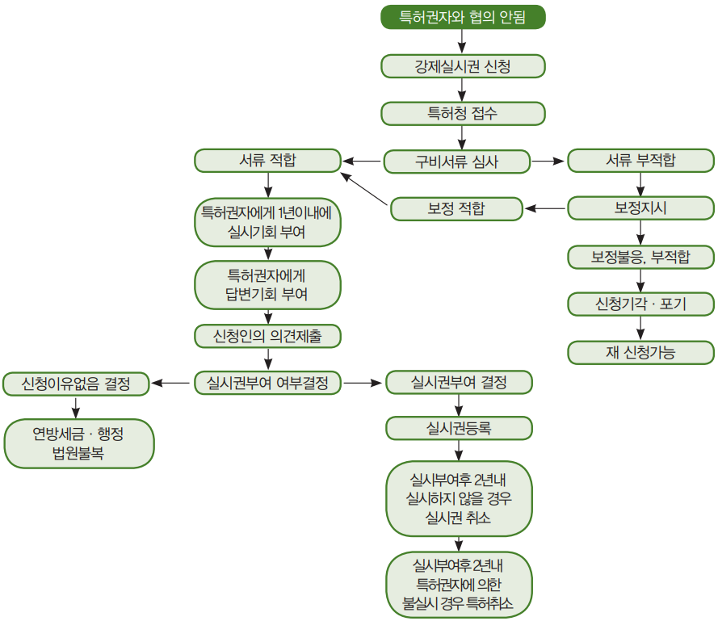
[그림 9] 강제실시권 등록 절차도
특허권자가 심신장애로 인한 활동 불능으로 그 특허발명을 실시하지 못한 경우. 다만, 의료기관의 장이 증명한 경우에 함
• 특허발명의 실시에 있어서 정부기관이나 타인의 허가·인가·동의 또는 승낙을 필요로 할 경우에 그 허가·인가·동의 또는 승낙을 받지 못함으로 인하여 그 특허발명을 실시하지 못한 경우
• 특허발명의 실시가 법령에 의하여 금지 또는 제한되어 그 특허발명을 실시하지 못한 경우
• 특허발명의 실시에 필요한 원료 또는 시설이 국내에 없거나 수입이 금지되어 그 특허발명을 실시하지 못한 경우
• 특허발명의 실시에 따른 물건의 수요가 없거나 그 수요가 적어, 이를 영업적 규모로 실시할 수 없어 그 특허발명을 실시하지 못한 경우
(iv) 특허권자 등이 특허된 물건을 수입한 사실이 없는 경우는 예외
특허권자 또는 실시권자가 특허된 물건 또는 특허 방법에 의해 얻은 물건을 수입한 사실이 없어야 함(산업재산법 제70조)
(다) 강제실시권 신청
(i) 신청인 자격
강제실시권을 신청할 수 있는 자는 특허발명을 유효히 적절하게 실시하는 데 만족해야 하고, 기술적으로 실시하는 데 뒷받침이 되도록 경제적인 능력을 보유하고 있어야 함(산업재산법 제71조)
(ii) 신청서 제출
특허권자와 신청인 간에 특허 실시에 관한 협의가 이루어지지 않거나 협의를 할 수 없을 때에는 특허청에 실시권 신청을 할 수 있음. 신청은 문서로서 하되 정 부본 2통을 특허청에 제출하여야 함. 특허권자가 2인 이상인 경우는 권리자 수에 상응한 부본을 제출하여야 함. 실시권을 청구하는 자는 특허청에 청구취지와 청구이유를 작성하여 제출하여야 함
(iii) 특허권자에게 실시기회 부여
특허청은 강제실시권의 신청서가 특허청에 신청되었다 해도 즉시 이에 대한 절차를 진행하는 것이 아니고 강제실시권을 부여하기 전에 먼저 특허권자에게 직접 통지일부터 1년 이내에 해당 특허를 실시할 기회를 부여하여야 함. 이 기간이 경과한 경우 특허청은 당사자들의 특허발명 실시 허여 여부에 대한 의견 청취 진행에 들어감
(iv) 답변서 제출 등
① 답변기회 부여
특허청은 강제실시권 신청이 있는 경우에 신청서의 부본을 특허권자 기타 그 특허에 관하여 등록한 권리를 가지는 자에게 송달하고 상당한 기간을 정하여 답변서 제출의 기회를 주어야 함. 여기 특허에 관하여 등록한 권리를 가지는 자라 함은 실시권자로 등록된 사람, 담보권이 설정된 사람 등을 말함
② 기존 강제실시권이 존재하는 경우
강제 라이선스가 이미 설정 등록되어 있는 특허에 대해 다른 라이선스의 신청이 있는 경우에, 기존 강제실시권자에 대해서도 통지 및 당사자의 의견을 청취하여야 함. 즉 답변의 기회를 주어야 함
③ 특허권자의 신청서 검토
강제라이선스가 신청되는 동시 신청인이 법 제71조에 규정되는 자의 기술적 및 경제적 능력을 특허청에 증명했을 경우, 특허권자에게 그 내용을 통지하여야 하며, 특허권자는 해당 신청에 대한 조사를 실시하고 통지일부터 2월 이내에 자기의 이익을 보호하는 의견을 제출할 수 있음(산업재산규칙 제50조)
④ 신청인의 의견서 제출
강제실시권은 특허권자의 실시 반대로 발생한 실시권이기 때문에 신청인이 기술적, 경제적으로 능력이 있음을 증명했다 해서 실시권 허락을 쉽게 하지 않을 것이기 때문에 특허청은 최대한 양 당사자의 의견을 청취하고 제출된 서류를 상세히 검토하여야 함
특히, 특허권자가 강제 라이선스를 적극적으로 반대하는 경우 강제 라이선스 신청자는 해당 특허권자의 반대에 대한 조사를 실시하여 15일 이내에 자기의 이익에 적합한 의견서를 제출해야 함
(v) 특허청의 결정
① 서류로 결정문 통보
특허청은 위 조사기간이 경과되고, 양 당사자로부터 자기의 주장과 의견이 어느 정도 특허청에 전달되었다고 판단되면 지금까지의 양 당사자의 의견과 증거를 기초로 하여 강제실시권을 부여할 것인가를 결정하여야 함
- 강제실시권이 결정되면 그 결정문을 특허권자, 신청인 및 특허권에 이해관계인으로 등록된 사람에게 서류로 통지하여야 함
② 결정문에 기재할 사항
강제실시권이 결정된 경우, 그 결정문에는 다음의 내용이 포함되어야 함
• 결정취지 및 결정 이유
• 강제실시권의 범위 및 기간
• 강제실시권의 대가, 그 지급방법 및 지급시기 등이 명시되어야 함
(라) 강제실시권의 효과
(i) 업으로 실시
신청인에게 강제실시권이 부여되면 실시권자는 실시권의 범위 내에서 해당 특허발명을 업으로 실시할 수 있음. 이 실시는 독점·배타적 실시가 아니라 비독점적 실시임
(ii) 실시권 발생시기
특허청의 강제실시 결정이 있고, 그 결정문이 특허권자 및 신청인에게 송달되었을 때임
(iii) 특허권의 이전의 경우
강제실시권이 설정되면 그 내용을 특허원부에 기재하여 등록해야 하고 이 등록으로 제3자에게 대항할 수 있음. 따라서, 특허권이 타인에게 이전되면 강제실시권도 이전됨
(iv) 실시료 지급
강제실시권자는 정해진 실시료를 지급시기에 지급하여야 함 그렇지 아니하면 강제실시권이 취소되는 경우가 있음
(v) 강제실시권자의 실시료 지급 의무면제
다음의 경우는 강제실시권자의 실시료 지불 의무는 없음. 즉 특허가 무효로 되거나 혹은 존속기간이 만료하던지, 또는 본 법에서 규정하는 그 외의 사유가 있는 경우 등임(산업재산법 제73조)
(vi) 강제 실시권 조건 정정
필요한 경우 또는, 특히, 특허권자가 강제 라이선스의 조건보다 유리한 조건으로 계약에 의한 라이선스를 주었을 경우, 특허청은, 특허권자 혹은 강제실시권자의 요청에 의해 강제 라이선스 조건의 개정을 명할 수 있음. 특허청이 강제 라이선스 조건을 개정하려면 사전에 당사자의 의견을 청취하지 않으면 안됨(산업재산법 제74조)
(vii) 강제실시권 취소
강제실시권자는 라이선스 부여일로부터 2년 이내에 특허 실시를 하여야 함. 이 요건에 따르지 않는 경우 특허청은 실시하지 않고 있는 정당한 이유가 있다고 판단하는 경우를 제외하고, 특허권자의 청구 또는 직권에 의해 해당 라이선스를 취소할 수 있음(산업재산법 제75조)
(viii) 강제 실시권은 비독점적 실시
강제 실시권은 독점적으로 실시할 수 있는 것이 아니고, 특허권자 기타 특허권자로부터 실시권 허락을 받은 자 등은 특허권을 실시할 수 있음(산업재산법 제76조)
(ix) 강제 실시권의 양도
강제 라이선스는 독점적이 아닌 실시권임. 강제실시권자는, 특허청의 승인이 있고 또한 해당 특허가 사용되는 생산 설비와 함께 이전하는 경우에 한해서, 라이선스를 양도할 수 있음(산업재산법 제76조)
(마) 특허권의 취소
최초의 강제실시권 부여일로부터 2년이 경과한 시점에서, 해당 강제 실시권의 부여에 의해서도 특허권자에 의한 특허 불실시가 해소되지 않고 또한 해당 특허권자가 특허청에 정당하다고 인정할 수 있는 인정의 이유를 증명하지 않는 경우 특허청은 해당 특허 취소의 결정을 할 수 있음(산업재산법 제73조). 특허권 취소는 파리협약 제5조 A(3)에 규정된 원칙임
(바) 강제실시권의 소멸
강제실시권은 다음의 사유가 발생하면 소멸함
(i) 특허권 자체에서 오는 소멸 원인
• 특허권의 존속 기간의 만료
• 특허권의 무효 또는 취소
• 특허권의 포기
(ii) 실시권 자체에서 오는 소멸
• 강제실시권의 설정 기간 만료
• 실시권자의 실시권 포기
• 강제실시권의 취소
(사) 우리나라의 강제실시권 제도와의 대비
(i) 강제실시권 성립 사유 상이
멕시코의 강제실시권은 특허발명을 정당한 이유 없이 장기간 사용하지 아니한 경우에 한하여 성립하나, 우리나라의 강제실시권 제도에 관한 특허법의 규정은
• 특허발명을 천재지변 등 불가피한 사유로 3년 이상 사용하지 아니한 경우
• 특허발명을 정당한 이유 없이 계속하여 3년 이상 국내에서 상당한 영업적 규모로 사용하지 아니하는 경우
• 행정·사법절차에 의해 불공정 행위로 판정된 경우 이를 시정하기 위해 필요한 경우
• 공익을 위한 경우 등에 해당하면 강제실시권을 특허청에 신청할 수 있다고 규정하고 있음(특허법 제107조).
(ii) 강제실시권 신청인 자격 상이
멕시코 법은 강제실시권 신청인의 자격을 기술적. 경제적 능력을 보유한 자만이 신청인이 될 수 있도록 제한하고 있으나, 우리 특허법은 누구나 신청할 수 있다는 점에서 차이가 있음
(iii) 대가의 공탁제도의 상이
우리 특허법은 특허권자가 실시 대가 수령을 거부하거나 수령할 수 없는 경우에는 그 대가를 공탁하기로 되어있으나(한국 특허법 제112조), 멕시코 법에는 공탁제도 규정이 없음
(iv) 강제실시권 취소 사유 상이
멕시코 법은 강제실시권자가 강제실시권 부여일로부터 2년 이내에 특허발명을 실시하지 아니하는 경우에만 강제실시권을 취소하기로 되어 있으나(제75조), 한국 특허법은 제114조에서 강제실시권 취소 사유로
• 강제실시권을 받은 목적에 적합하도록 그 특허발명을 실시하지 아니한 경우
• 강제실시권 사유가 없어지고 그 사유가 다시 발생하지 않을 것이라고 인정되는 경우
• 정당한 사유 없이 결정서에 명시된(실시권자가 공급하는 의약품 등에 표시할 내용, 실시권자가 준수할 사항) 사항을 위반한 경우에는 강제실시권을 취소할 수 있음
(v) 한국 특허법에만 존재하고 멕시코 법에 없는 제도
• 통상실시권허여심판제도(한국 특허법 제138조)
• 전용실시권제도(한국 특허법 제100조)
• 선사용에 의한 통상실시권(한국 특허법 제103조)
• 무효심판청구등록전의 실시에 의한 통상실시권(한국 특허법 제104조)
• 디자인권의 존속기간 만료 후의 통상실시권(한국 특허법 제105조)
• 질권행사로 인한 디자인권의 이전에 따른 통상실시권(한국 특허법 제122조)
(3) 공익상 필요에 의한 실시권
(가) 의의
이 실시권은 정부가 국가의 위기 또는 안전상의 고려를 이유로 하고, 또한 그러한 이유가 존재하는 한 특허청은 공공의 이익에 관계하는 일정한 특허 라이선스가 주어지지 않으면 주요한 상품 및 서비스의 생산이나 그들의 공중에의 공급 및 분배를 방해할 수 있고, 또한 해를 끼치거나 가격 상승을 가져온다고 판단하는 경우 특허발명을 강제로 실시할 수 있는 제도임(산업재산법 제77조)
(나) 강제실시권과 공익상 필요한 실시권
강제실시권은 국가가 위기에 처하여 국가의 안전성을 해칠 우려가 있거나 국민건강생활, 국민경제생활에 지대한 영향을 미칠 가능성이 있는 경우에 정부가 특허발명을 실시하기 위해 취해지는 실시권임
(다) 성립요건
(i) 국가의 위기 및 안전성 고려
이 실시권은 국가가 천재지변 등 불가항력에 의한 국가가 위기에 처해 있거나 국가의 안전성을 고려하여 특허발명을 정부가 실시할 수 있도록 한 것임
(ii) 공공의 이익에 필요
특허발명의 종국적인 목표는 국가산업발전인데 특허권자가 공공의 이익을 외면하고 개인의 이익을 추구하게 되면 공익과 개인의 이익이 충돌하게 되고 오히려 특허권자에게 불리하게 되고, 소비자인 국민이 특허권자의 제품을 외면해 버리면 특허권자에게는 지대한 손해를 입힐 뿐만 아니라 회사 발전도 어렵게 됨
[그림 10] 공익상 필요에 의한 실시권 신청 절차도
또한 특허권자는 공중에게 공급 및 분배를 방해하거나 제품의 폭등 등 가격상승을 유발하는 행위를 금하고 어디까지나 국민경제생활 및 국민건강생활에 충족이 되도록 노력하여야 함. 또 국가는 특허의 공공성을 감안하여 국민의 생활안전과 건전한 국민경제질서를 확립하기 위해 필요한 경우 특허발명을 실시하도록 한 것임
(iii) 국내에서 상당한 영업적 규모로 실시
특허권자는 국내에서 상당한 영업적 규모로 실시할 수 있는데도 불구하고 실시를 기피하거나 적당한 정도와 조건으로 국내 수요를 충족할 수 있는데도 이를 시행하지 아니한 경우에는 부득이 강제실시권이라는 카드를 이용할 수 밖에 없을 것임
(라) 청구절차
(i) 특허권자와의 협의
공익상 필요한 실시권이 정부가 특허발명을 실시하기 위한 것이라도 특허권자와 실시여부에 대한 협의를 해야 하고, 최종적으로 협의가 되지 아니하는 경우에 한해 정부가 실시권을 결정함
(ii) 구체적인 청구 절차는 강제실시권 규정을 준용하기로 함
(마) 결정
(i) 연방 대통령과 경제성 장관과 합의
법 제77조(공익상 필요한 실시권)에 규정되는 선언은 경제성장관과 연방 대통령과의 사이의 합의를 조건으로 특허청에 의해서 발하게 됨(산업재산규칙 제51조)
법 제77조에서 정하는 선언이 공보에 공고되었을 경우 공공의 이익을 위한 라이선스 부여가 선언된 특허의 특허권자는, 공고일부터 2월 이내에 해당 선언에 대하여 자기의 이익을 보호하기 위한 의견을 특허청에 신청할 수 있음. 그러한 신청이 되면 특허청은 검토 후 선언을 확인할 것인지 해제할 것인지에 대한 최종결정을 하여야 함
- 공익상 필요한 실시권이 성립하기 위해서는 우선 연방대통령과 경제성의 합의를 전제조건으로 하며 이는 이 실시권 제도가 그만큼 국가의 안위와 국민경제생활에 미치는 영향이 크기 때문에 연방 대통령과 경제성의 합의를 조건으로 한 것임
(ii) 결정사항은 특허공보에 공고
특허청은 특허발명이 공익상 필요하다고 판단하면 최종적으로 실시권 결정을 내리고, 그 내용을 특허공보에 공고하여야 함
(iii) 실시권 인정의 원인이 종결한 경우
특허청은 법 제77조(공익상 필요한 실시권)에 기초하는 선언을 발표하는 원인이 된 국가 긴급사태 또는 국가 안전상의 문제가 종결했을 경우, 그 종결을 선언하는 결정을 공보에 공고하여야 함
(바) 효과
(i) 연방 정부가 업으로 실시
앞에서 설명한 강제실시권은 강제실시권 신청인이 특허발명을 실시하기 위한 것이고, 공익상 필요한 실시권은 정부가 직접 실시하거나 타인(기업)에게 실시할 수 있는 권리를 위탁하여 실시하게 할 수 있음. 또 이 실시의 주체는 연방 정부이기 때문에 해당 특허권자에 의한 실시행위로 보지 아니함(산업재산규칙 제52조)
(ii) 기간 내에 사용하지 않는 경우는 무효
공익상 필요에 의한 실시권이 결정된 경우, 특허청은 이용 개시까지의 제한 기간을 실시권자에게 부과하는 것으로 하고 그 기간 내에 해당 발명의 실시가 개시되지 않는 경우 해당 라이선스는 무효가 되는 것을 선언함. 그 기간은 라이선스 부여일부터 1년을 넘어서는 안됨
(iii) 실시권 해제
특허권자의 신청 또는 직권에 의하여 특허청이 라이선스 또는 공공의 이익을 위한 라이선스를 해제하는 결정을 하는 경우, 실시권자는 특허권자에게 자기의 이익에 적합한 의견을 신청하는 동시에 적당하다고 생각하는 증거를 제출하도록 요구할 수 있음
라. 특허권의 이전
(1) 의의
특허권의 이전은 특허권의 소유자인 특허권자를 변경하여 특허권을 다른 사람에게 양도 즉 넘겨주는 것을 말함(산업재산법 제62조)
- 특허권도 다른 일반 재산권과 마찬가지로 개인의 재산권이고, 개인의 재산권의 자유이전은 사유재산권의 기본 원칙임. 따라서 특허권의 이전은 특허권자의 재산적 취득의 하나이고 법은 이를 자유로이 허용하고 있음
(2) 이전 유형
(가) 특정승계(特定承繼)
특허권의 특정승계는 매매·증여·교환 등과 같이 개개의 권리가 개개의 취득 원인에 의하여 특허권의 소유자가 변경되는 경우임. 특정승계의 유형은 다음과 같음
(i) 매매
매매는 유상이든 무상이든 불문하며, 특허권의 이전 유형 중에서 가장 많이 거래됨
(ii) 교환·판결
교환은 특허권과 다른 재산권과 서로 주고받고 하는 형태로 이루어지는 이전방식임. 판결은 특허에 대한 소유권 이전소송이 있는 경우 법원의 판결에 의해 특허권이 제3자에게 이전되는 방식임
(iii) 증여·경매
증여는 특허권을 제3자에게 넘겨주면서 어떤 대가도 받지 아니하고 넘겨주는 형태의 이전방식임. 경매는 특허권이 특허권자의 채무불이행(빚)이 있는 경우 경매법에 의해 제3자에게 이전되는 방식임
(나) 일반승계
특허권의 일반승계는 상속·포괄유증·회사의 합병 등과 같이 하나의 취득 원인에 의하여 다수의 권리가 일괄해서 취득되는 것을 말함
(i) 상속
상속은 일정한 친족적 신분 관계가 있는 사람 사이에서 그 한쪽이 사망하거나 또는 일정한 법률상의 원인이 발생하였을 때에 재산적 권리 또는 의무의 일체를 이어받는 일을 의미함
(ii) 회사합병
둘 이상의 기업이 일정한 계약에 의하여 하나의 기업으로 합병하는 것을 말하며 상법상 기업의 합병에는 신설합병과 흡수합병 두 가지가 있음. 신설합병은 합병할 때 모든 당사자 회사가 해산하고 동시에 신회사를 설립하는 것이며, 흡수합병은 한 당사자 기업만이 존속하고 다른 당사자 기업은 해산하여 존속기업에 흡수되는 것을 말함
(iii) 포괄유증
이는 유산의 전부 또는 일부의 재산을 특정하지 않고 일정비율로 특정인에게 유증하는 것, 즉, 유언으로 재산을 증여하는 것임. 목적물을 특정하여 유증하는 특정유증과 대비, 포괄수유자는 유산의 전부 또는 일부를 일정비율로 취득하기 때문에 그 지위는 상속인과 유사함. 그래서 포괄수유자는 상속인과 동일한 권리의무를 가지며 유언자 일신에 전속한 권리의무를 제외하고 유언자의 재산에 속한 일체의 권리의무를 승계함. 포괄유증의 승인·포기에 대해서는 상속의 승인·포기 규정이 그대로 적용됨. 재산분리, 상속분회복권, 유산분할에 대해서도 동일함. 포괄유증은 유류분을 침해할 수 없고 이 경우에는 유류분 권리자는 감소 청구할 수 있음
(다) 이전절차
특허 이전절차는 이전의 유형에 따라 상이함
(i) 매매 등 특정승계의 경우
① 구비서류
• 매매는 매매계약서(양도증), 교환·증여는 특허권자와 특허권을 인수하는 자와의 문서(예컨대, 교환증서·증여증명서 등) 등이 필요함
• 판결은 법원의 판결문이 필요하고, 경매는 경매 담당기관이 증명하는 서류 등이 필요함
② 이전 신청
매매 등 특정승계는 등록권리자와 등록의무자가 공동으로 이전 신청할 수 있음
(ii) 일반승계의 경우
① 구비서류
• 상속은 상속받았다는 증명서 즉 제적등본이나 기타 증거 서류가 필요하고, 회사합병의 경우는 합병된 법인증명서(법인등기부등본)가 필요함
• 포괄유증은 공적인 확인서나 증명서 또는 증인이나 녹음기록 등이 필요함
② 이전신청
(라) 이전의 효과
(i) 특허권 소유자가 변경
특허권 이전절차가 완료되면 특허권의 소유자는 특허권을 이전받은 자가 됨
(ii) 등록
특허권 이전은 등록을 하여야만 제3자에게 대항할 수 있으며(산업재산법 제62조) 등록은 효력 발생요건임
(iii) 특허권 이전과 실시권
특허권이 제3자에게 이전되면 특허권에 등록된 실시권 기타 담보권도 동시에 이전됨. 실시권·담보권 등은 특허권에 따라다니는 권리이기 때문임
다. 특허권의 공유
(1) 의의
특허권의 공유는 하나의 특허권에 특허권자가 2인 이상이 공동으로 소유하고 있는 경우이며 각 특허권자는 그 특허발명에 대하여 각 지분(몫)이 있으나, 지분에 따라 권리변동이 발생하는 것이 아님
(2) 공유관계의 발생유형
•공동으로 발명하고 이를 공동으로 출원하여 특허가 부여된 경우
•특허출원은 1인이 특허출원 하였으나, 출원 계속 중에 특허를 받을 수 있는 권리 일부를 제3자에게 이전한 결과 공동출원인에게 특허된 경우
•특허권이 발생한 후 특허권자의 일부를 제3자에게 이전하여 공유특허권이 된 경우
•특허권이 공유인데 이 중 일부 특허권자의 지분이 경매로 인해 이전되어 새로운 특허권자가 있는 경우
(3) 공유특허권의 내용
(가) 공유특허권자의 권리
공유특허권자라고 해서 특별한 권리가 있는 것이 아니고 단독 특허권자의 권리와 동일하고, 단지 공유특허권자의 일부가 권리 행사시에는 일정한 제한이 있음
(나) 특허발명의 실시
(i) 각 공유자는 각자 자유로이 실시
특허권이 공유인 경우 각 공유자는 계약으로 특별히 정한 경우를 제외하고는 다른 공유자의 동의를 얻지 아니하고 지분 비율에 관계없이 그 특허발명 전체를 자신이 실시할 수 있음
(ii) 각 공유자의 실시에 따른 이익 분배
특허권이 2인 이상의 공유인 경우 그 특허발명을 자유로이 실시할 수 있으며, 특허발명 실시에 의해 발생한 이익은 실시한 공유자의 이익이기 때문에 배분문제가 발생하지 않음
(iii) 특허권의 처분, 실시권 설정으로 인한 이익배분
공유특허권 자체를 처분하여 발생한 수익이 있는 경우 또는 특허권을 타인에게 실시권을 부여함으로써 얻어진 수익은 지분의 비율로 분배하여야 함
(iv) 공유특허권자가 이용발명을 한 경우
공유특허권자 일부가 특허발명을 개량하여 새로운 이용발명을 하여 특허권을 취득한 경우 다른 공유자도 특별한 약정이 없는 한 그 이용발명을 실시할 수 있음
(4) 특허권의 지분양도와 실시권 설정의 제한
(가) 특허권의 지분양도의 제한
특허권이 공유인 경우 각 공유자는 다른 공유자의 동의를 얻지 아니하면 그 지분을 양도하거나 그 지분을 목적으로 하는 담보권을 설정할 수 없음. 지분의 변동에 의해 새로운 권리자의 자본력, 기술력, 신용력 등에 따라 다른 공유자의 이해관계에 영향을 미칠 수 있기 때문임. 공유자는 자신의 지분 비율과 관계 없이 특허발명 전체를 실시할 수 있음
(나) 실시권 설정의 제한
특허권이 공유인 경우 각 공유자는 다른 공유자의 동의 없이 타인에게 그 특허권에 대하여 실시권을 부여할 수 없음. 이의 제한 이유도 특허권의 지분양도의 제한양도와 동일 취지임
(5) 특허를 받을 수 있는 권리의 양도
특허를 받을 수 있는 권리가 공유인 경우 이의 지분을 타인에게 이전할 경우에도 위의 내용과 마찬가지로 다른 공유자의 동의를 얻어야 함. 특허를 받을 수 있는 권리는 출원 중에 있는 권리를 말함
마. 특허권자의 의무
(1) 특허 표시의 의무
특허권자는 특허발명에 의해(또는 방법에 의해) 제조·생산·판매·수입하고 있는 물건에 특허 표시를 할 의무가 있음(산업재산법 제26조). 특허권자는 물건의 특허발명에 있어서는 그 물건에, 물건을 생산하는 방법의 특허발명에 있어서는 그 방법에 의하여 생산된 물건에 특허 표시를 할 수 있으며, 물건에 특허 표시를 할 수 없을 때에는 용기나 포장에 특허 표시를 할 수 있음. 특허권자 등 지식재산권자는 특허된 제품에 특허 표시를 하지 아니하면 특허청에, 법원, 검찰청에 특허침해에 따른 구제신청을 해도 구제를 받지 못함
우리나라는 특허제품 등에 특허 표시를 하지 아니하여도 경고장을 침해자에게 발송하고, 그 후에도 계속하여 실시하면 법적 절차를 밟을 수 있음
(2) 실시의무
(가) 의의
특허제도는 기술 발전을 촉진시켜 산업발전에 이바지 하기 위한 제도이기 때문에 특허된 발명을 실시하여 소기의 목적을 달성할 의무가 있음. 특허가 사유재산권이지만 반면에 국가의 산업발전이라는 공공적인 성격도 강하므로 공익에 이바지하여야 함
(나) 실시하지 않는 경우 제재조치
정부는 특허권자가 특허발명을 정당한 이유 없이 장기간 사용하지 아니하거나, 특허발명이 공익상 필요한데도 타인에게 실시권을 부여하지 아니하여 국민 경제생활이나 국민 건강생활에 지대한 영향을 미치는 경우에는 이의 제재수단으로 제3자에게 강제로 실시권을 부여할 수 있고, 정부가 직접 실시할 수 있도록 하였음(산업재산법 제70조, 제77조)
(다) 특허료 납부의무
특허권이 개인의 재산권이지만 산업발전에 지대한 영향을 미치기 때문에 특허의 공공성을 배제할 수 없음. 따라서 특허에 의해 제조된 물건이 외국으로 수출이 잘 되도록 하기 위해서도 특허권의 존속은 필연적임. 따라서 특허료의 납부 의무는 특허권자의 의무임
그런데 특허료를 납부하지 않아 특허권이 소멸하였을 경우 법 제80조(2)에 규정하는 추가 납부 기간이 경과한 후 6개월 내에 회복신청을 하고 또한 미납부 수수료를 추가 요금과 함께 납부함으로써 해당 특허를 회복할 수 있음(산업재산법 제81조)
바. 특허권의 소멸
(1) 소멸제도의 의의
특허권은 무한한 권리가 아니고 유한적인 권리이기 때문에 언젠가는 권리가 소멸하게 됨. 특허의 소멸 원인에는 특허권의 존속기간 만료, 특허료의 불납, 특허의 포기, 특허의 무효 및 취소 등이 있음
(2) 소멸원인
(가) 특허권의 존속기간 만료
(i) 의의
특허권의 존속기간은 특허 출원일부터 20년이므로 이 기간이 만료되면 특허권은 소멸되어 특허권을 행사할 수 없는 공중의 공동재산이 됨
(ii) 연장불가
특허권의 존속기간은 연장되지 아니함. 우리나라 특허법은 의약품, 화학품 등 국가의 허가를 요하는 일정 품목에 대해서 특허권의 존속기간을 5년의 범위 내에서 연장을 인정함
(나) 특허료를 납부하지 않은 경우
특허권자가 특허권 존속기간 중에 특허료를 납부하지 아니하면 특허권은 당연히 소멸됨. 특허료는 매년 납부해도 되고 전 특허료를 일괄 납부해도 됨. 특허권 소멸 원인 중에 가장 많이 발생하는 소멸 원인임
(다) 특허 무효
특허권이 특허청의 무효 선언이 있으면, 그 특허는 소멸되어 효력이 발생하지 않음. 무효의 사유는 특허등록이 되지 않는 경우에 위반하여 특허된 경우, 특허등록이 그 시점에서 효력이 가지고 있는 다른 법의 규정에 위반하여 특허된 경우, 기타 특허 부여가 중대한 착오 또는 과실에 의한 하자가 있는 경우 등은 특허청에서 무효 선언을 하여 그 특허를 소멸할 수 있음. 무효 선언의 효과는 출원일에 거슬러 올라가 특허의 효력을 잃게 함(산업재산법 제79조)
(라) 강제실시권자가 사용하지 않음으로 인한 특허권의 취소
특허권자가 장기간 사용하지 않았다고 해서 제3자에게 강제실시권이 부여되었는데도 불구하고 해당 강제실시권 부여에 의해서도 특허권자에 의한 특허 불실시가 해소되지 아니하고, 또 특허권자가 특허청에 대해 불실시에 대한 해명도 아니하였을 경우 특허청은 해당 특허의 취소를 할 수 있음
(마) 일부권리 무효선언
무효가 복수클레임의 하나 또는 수개의 클레임의 일부에만 관련되는 경우의 무효선언은 관계하는 클레임 또는 클레임의 일부에 대해서만 무효 선언을 할 수 있음(산업재산법 제78조)
제4절 비용
1. 출원, 심사 비용
[표 21] 멕시코 특허 수수료(단위: USD)
항목
수수료 (USD)
멕시코 특허청 IMPI(Mexican Institute of Industrial Property)에 특허 출원(실질 심사 포함) 제출
실용신안으로 등록하기 위한 실용신안의 법적 정의는 성질, 모양, 구조 혹은 형태의 변경을 통해 그 일부나 실용적 측면에서 다른 기능을 지니게 된 물체 기구, 장치 혹은 도구를 의미함
실용신안 등록을 위해서는, 실용신안이 새로운 것이어야 하며, 산업적으로 이용 가능해야 함 (산업재산법 27, 28조)
나. 등록요건
1) 신규성/산업상 이용가능성
산업재산법 제27조에서 실용신안등록을 받으려면 신규성과 산업상 이용가능성만 요구하고 있으므로 실용신안은 진보성이 없어도 실용신안으로 등록받을 수 있음
2) 등록될 수 없는(부등록) 사유
∙ 실용신안의 정의에 합치하지 않는 실용신안(산업재산법 28조)
∙ 신규성이 없는 실용신안(출원 전에 국내에서 널리 알려진 실용신안, 간행물에 게재된 실용신안 등)
∙ 산업상 이용가능성이 없는 실용신안
∙ 공공질서에 위반하거나 공서양속에 반한 실용신안
다. 취득절차 및 출원/등록 기간
실용신안제도는 특허와 등록될 수 있는 요건만 약간 차이가 있을 뿐 동일함
∙ 출원서에 첨부하는 서류의 동일(명세서, 도면, 요약서, 청구범위)
∙ 특허출원 심사절차 동일
∙ 특허권의 효력 동일
∙ 특허권의 효력이 미치지 아니하는 범위 동일
∙ 권리의 공동소유제도, 이전제도 동일
∙ 강제실시권제도, 공익상 필요에 의한 실시권제도, 허락에 의한 실시권제도의 동일
∙ 특허무효청구제도, 소멸제도 동일
∙ 거절결정불복청구제도 동일
2. 심사절차
실용신안 등록에 대한 심사에는 약 2년이 소요되며, 심사절차는 특허와 동일함
3. 등록 및 유지
실용신안권의 보호기간은 개정된 산업재산법에 따라 출원일로부터 15년간 유효하며 그 이상 연장할 수 없음 (기존에는 10년 이었음)
권리 양도 등의 효력은 특허와 동일하며, 권리의 효력을 유지하기 위한 연차료는 매 5년마다 납부해야함 (납부유예기간은 6개월임)
PARTIV 디자인
제1절 주요제도 및 등록요건
1. 출원현황 통계
디자인은 물품의 외형에 나타난 물품의 형상, 모양·선, 색채 및 이들이 결합한 것으로써 시각을 통하여 판단한 결과 미적(美的) 감각을 일으키는 것을 말함. 디자인은 물품 외관에 나타난 장식적이고 미적 처리된 부분에 대하여 권리를 부여하는 점에서 기술에 관한 창작인 실용신안, 특허제도와 다름
2011년부터 2020년까지 멕시코에서 디자인 출원된 건수를 살펴보면 아래의 표와 같음
[표 26] 멕시코의 디자인 출원건수
출처: WIPO
연도
Resident
Non-Resident
Abroad
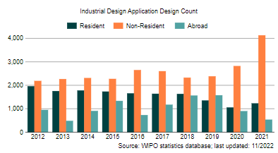
2011
1,909
2,240
514
2012
1,954
2,183
947
2013
1,749
2,262
478
2014
1,774
2,306
901
2015
1,729
2,270
1,330
2016
1,651
2,645
726
2017
1,635
2,598
1,168
2018
1,627
2,322
1,558
2019
1,348
2,378
1,571
2020
1,050
2,842
894
2011년부터 2020년까지 멕시코에서 디자인 등록된 건수를 살피면 다음과 같음
[표 24] 멕시코의 디자인 등록건수
출처: WIPO
연도
Resident
Non-Resident
Abroad
2011
865
1,578
327
2012
902
1,742
989
2013
890
1,961
542
2014
720
1,651
585
2015
948
1,904
1,339
2016
818
1,729
584
2017
861
2,181
1,081
2018
787
2,010
1,659
2019
699
2,166
1,541
2020
591
2,044
792
2. 주요제도
가. 디자인의 내용
디자인(industrial design)은 물품의 형상·모양·색채 또는 이들을 결합한 것으로 제품의 장식적 또는 심미적인 외관을 보호대상으로 함. 이러한 디자인에 대하여 권리를 취득한 디자인을 디자인권이라고 함
- 디자인의 대상은 발명이나 실용신안과 같이 기술에 관한 창작이 아니고, 어디까지나 물품의 외관에 표현된 형상·모양·색채 등에 창작이 가하여진 고안임. 따라서, 시계를 예로 들면, 시계의 겉 형태는 디자인의 대상이 되고, 시계 속에 있는 구조나 각 부품은 발명이나, 실용신안의 대상이 되며, 디자인의 대상은 되지 아니함
(1) 멕시코 산업재산법 제32조의 내용(디자인 보호대상)
• 멕시코 산업재산법 제32조에 장식을 목적으로 하여 공업 제품에 형성된 형상, 선, 또는 색채의 조합이며 해당 제품에 특유의 외관을 나타내는 평면의 디자인
• 공업제품 제조를 위한 모형 혹은 패턴으로서 작용하는 어떠한 기술적 효과에도 연관되지 않는 특유의 외관을 해당 제품에 나타내는 입체 형상에 의하여 구성되는 입체의 디자인 혹은 모형
(2) 디자인의 설명
(i) 디자인과 물품(공업제품)과의 관계
• 디자인은 물품의 외형에 표현된 형상, 모양·색채 또는 이들이 결합한 것이 장식적으로 처리된 미감을 일으키는 것을 말하므로, 물품과는 불가분의 관계에 있음
• 물품은 유체동산에 한하며, 부동산, 가스·액체, 분말류 등 물품은 디자인의 대상이 되지 아니함. 동산이라 해서 모두 디자인의 대상이 되는 것은 아니며, 액체·분말류, 유동체 등은 동산이지만 제외됨
• 디자인의 물품은 공업적으로 양산된 공업제품 즉 물품이어야만 함. 따라서, 나무, 광물질 등 천연자원 등 자연물은 디자인의 물품에서 제외됨
•디자인의 물품은 평면물품이든, 입체물품이든 불문함
(ii) 물품의 형상
• 형상은 공간을 차지하고 있는 물품의 형태이며, 물품을 형성하고 있는 평면적 또는 입체적 외형적인 형태임. 모든 물품은 반드시 형상을 구비하고 있음
• 이 형상은 입체적인 형상과 평면적인 형상으로 대별되며, 평면적인 형상은 벽지·장판지·종이·비닐지·수건·피복지 등과 같이 면이 타면보다 현저히 넓고 뚜렷한 입체를 이루지 않는 형상임
(iii) 물품의 모양
물품에 나타난 선(線)들이 모여 모양을 형성하며, 이 모양, 선은 물품의 형상 내에 표시된 그림이나 선, 도형 등을 말함. 물품의 모양은 물품을 아름답게 장식하고, 이러한 장식은 그 표면에 선도 또는 색채에 의하여 평면적으로 표현된 것을 말함
(iv) 물품에 표현된 색채
• 색채는 color이며, 받은 빛(光) 중 반사하는 빛에 의하여 인간의 강막(綱膜)을 자극하는 물체의 성질의 하나임
• 색채에는 유채색과 무채색이 있으며 유채색은 빨강색, 청색, 녹색, 황색 등을 말하고, 무채색은 백색, 회색, 흑색을 말하며, 유채색은 무채색을 제외한 색채를 말함
• 색채를 표현시는 균일하게 채색되어야 함
(v) 물품의 형상, 모양, 색채의 결합(조합)
① 물품의 형상과 모양의 결합
• 형상과 모양의 결합은 물품의 형상 내에 선이나, 모양, 그림, 도형 등이 표현된 경우임
• 예를 들면 커피 컵에 꽃이 그려진 경우, 화분에 새가 그려진 경우 등임
② 물품의 형상과 색채의 결합
• 물품의 형상에 하나의 색채를 칠한 경우는 보호받지 못하는 경우도 있음. 따라서, 색채를 보호 받으려면 물품에 그려진 그림이나 무늬에 2색 정도 칠하면 색채와 모양이 결합한 디자인이라고 할 수 있음
• 물품의 형상·모양·색채의 결합
물품의 형상, 모양, 색채가 결합하여 하나의 물품을 형성하는 디자인이 많음
예를 들면 장난감, 장신구, 도자기 등은 색채를 가미해야만 눈에 잘 띄고, 아름답게 하여야만 구매욕을 일으키게 됨
(vi) 시각성
디자인은 물품의 외관을 주 대상으로 하여 보호하므로, 사람의 눈으로 파악할 수 있어야 함
• 시각으로 인식할 수 있을 것
• 육안으로 식별할 수 있을 것, 육안으로 구별할 수 없는 물품은 디자인의 대상이 될 수 없음
• 외부에서 보일 것, 보이지 않는 부분은 디자인의 대상이 될 수 없음
(vii) 장식성
• 디자인은 어떠한 기술적 효과에도 연관되지 않는 특유의 외관을 해당 물품에 표현하여야 함. 장식은 물품의 외관을 사람들에게 아름답게 보고 돋보이도록 꾸미는 것을 말하며, 우리나라는 디자인의 정의에서 장식성이라고 표현하지 아니하고, 미감을 일으키는 것이라고 표현하고 있음
• 미감은 물품에 어떠한 형태이든지 부착하거나 표현하면 미적 감각을 일으키게 됨
• 장식은 미술이라는 개념에 대하여 장식예술이라는 개념을 대립시켜서 공예나 디자인 등 실용품의 외관은 이에 속한다고 보고 있음. 물품에 장식이 잘 되어 있는 물품으로서는 완구, 도자기 등 그릇, 벽지, 직물지 등임
• 이러한 물품은 장식이나 미적 처리를 떠나서는 존재할 수 없을 정도로 장식이 보편화 되어 있음
나. 디자인이 등록되기 위한 요건
디자인 등록 요건은 디자인이 등록되기 위해서 갖추어야 할 요건을 말하며 이 디자인 등록요건이 갖추어져 있지 아니하면 등록될 수 없음
(1) 디자인의 정의에 합치
디자인은 법에서 정의하고 있는 디자인의 정의에 합치하지 아니하면 등록되지 아니함
(2) 신규성(출원 전에 알려지지 아니한 디자인)
신규성은 디자인 등록 출원하기 전에 국내외에서 알려지지 아니한 디자인, 국내외에서 반포된 간행물에 게재되지 아니한 디자인을 신규의 디자인이라 함
멕시코에서 디자인에 대한 신규성 예외 기간은 12개월이며, 디자인권자 혹은 그의 후계자로부터 제3자가 직접 또는 간접적으로 디자인의 정보를 입수하여 공개한 경우에는 신규성 예외로 인정함
신규성 예외를 받기 위해서 디자인 출원인은 멕시코 산업재산법에 규정된대로 공개의 정확한 날짜와 공개가 이루어진 수단을 출원 서류에 명시해야하며, 공개 증빙 서류를 제출해야함
(3) 공업상 이용 가능성
• 공업상이란 공업적으로 동일 물품을 양산할 수 있는 것을 말함. 공업적으로 물품을 만들어낼 수 있어야 하므로 농업적 생산 방법이나, 상업적 및 어업적 생산 방법 및 자연현상에 의해 생산되는 것은 배제됨
• 1개의 물품만을 만드는 것을 목적으로 하는 회화나 조각 같은 것은 공업성이 없다고 하여야 함. 이 법에 의해 보호되는 디자인은 동일한 물품이 다수 생산되어야 하고 하나의 작품을 제작하는 것을 목적으로 하거나 그 하나의 작품 제작에 의하여 완수되는 저작물은 대상이 되지 아니함
(4) 공업성이 없는 경우
• 천연물(광물, 돌, 나무, 과일 등)은 공업적으로 대량 생산하는 것이 아니고 자연 그대로 존재하는 물품이고, 인공이 가하여진 물품이 아님
• 1개의 작품만 만들어지는 회화나 조각은 공업적으로 양산할 수 없어서 공업성이 없음
회화나 조각은 인간의 사상, 감정을 표현한 것, 즉 개성의 표현으로 보는 것임. 개성의 표현은 표현 하나의 유형으로서 회화나 조각의 제작을 끝냈을 때 완료되고 다시 이것을 실시하여 대량 생산으로 옮긴다는 것을 목적으로 하고 있지 않음
(5) 제일 먼저 출원된 디자인에 해당
선출원주의라 함은 동일 디자인을 특허청에 제일 먼저 출원한 자에게 권리를 부여하는 주의를 말하며, 선고안주의란 제일 먼저 고안한 자에게 등록을 부여하는 주의를 말함
(6) 등록될 수 없는 사유에 해당하지 아니하는 출원
공공질서에 위반하거나 공서양속을 문란하게 할 염려가 있는 디자인은 등록될 수 없음
다. 우리나라의 요건과의 대비
(1) 창작성의 유무
우리나라의 디자인이 등록 받을 수 있는 요건은 공업상 이용가능성, 신규성, 창작성을 3대 요건으로 하고 있으나 멕시코 법의 디자인요건은 공업상 이용가능성과 신규성만 규정되어 있고, 창작성에 대해서는 규정하고 있지 않음
(2) 등록받을 수 없는 사유의 차이
멕시코 법에서 등록될 수 없는 사유는 공공질서에 위반하거나 선량한 풍속을 문란하게 하는 것은 디자인의 불등록 사유로 규정하고 있으나 우리나라는 디자인보호법 제6조에서 다음과 같이 규정하고 있음
• 국기·국장·군기·훈장·포장·기장 기타 공공기관 등의 표장과 외국의 국기·국장 또는 국제기관 등의 문자나 표지와 동일 또는 유사한 디자인
• 공공의 질서나 선량한 풍속을 문란하게 할 염려가 있는 디자인
• 타인의 업무에 관계되는 물품과 혼동을 가져올 염려가 있는 디자인
• 물품의 기능을 확보하는 데 불가결한 형상만으로 된 디자인
제2절 출원 및 심사절차
1. 디자인 출원 절차
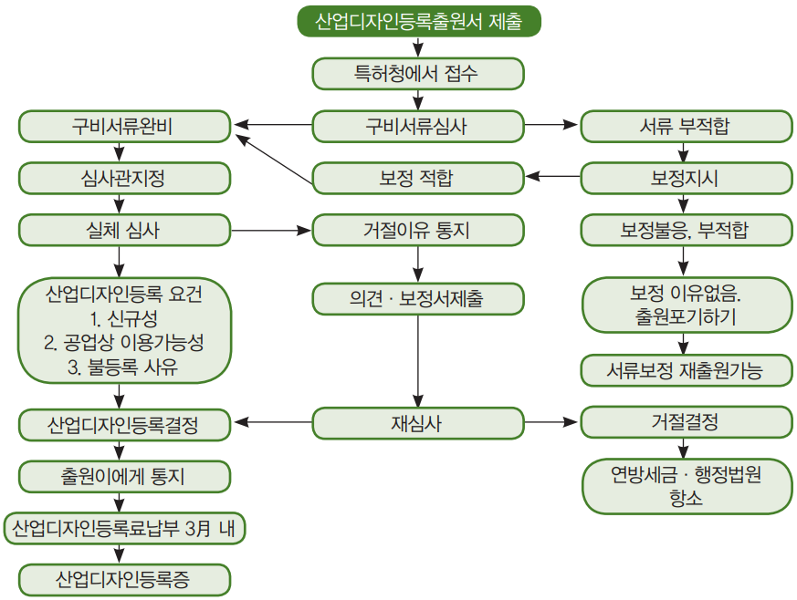
[그림 12] 디자인등록출원에서 등록될 때까지의 절차도
가. 디자인 출원
디자인의 출원은 특허와 실용신안출원 제도와 상이하며, 특허나 실용신안을 출원할 때 필요한 서류로서 명세서, 필요 도면, 요약서 및 특허청구 범위가 필수서류이고, 디자인은 물품의 외관만을 주 대상으로 해서 보호하는 제도이기 때문에 명세서, 요약서, 특허청구 범위가 필요하지 않음. 따라서, 디자인은 디자인 등록출원서에 도면이나 사진을 디자인 작도법에 적합하게 그려 출원서에 첨부하면 됨
나. 디자인 도면
(1) 도면의 의의
디자인의 도면은 디자인 출원의 필수 도면이며 특허청에서 디자인 출원을 심사시 도면과 디자인의 간단한 설명을 대상으로 심사하고 등록 여부를 판단함
(2) 디자인 도면의 특징
(i) 출원이 용이
디자인은 기술적 구성에 관한 실험이 필요하지 아니하고 아이디어만으로 출원이 가능하여 출원이 용이함
(ii) 실물 사진이나 견본 등으로도 출원 가능
다. 우리나라에만 존재하고 멕시코에 없는 제도
• 부분디자인 제도(한국 디자인법 제2조, 1호)
• 복수디자인등록출원 제도(한국 디자인법 제11조의2)
• 한벌물품디자인 제도(한국 디자인법 제12조)
• 비밀디자인 제도(한국 디자인법 제13조)
• 디자인 무심사에 의해 등록된 디자인에 대하여 이의신청하는 제도(한국 디자인법 제29조의 2)
• 유사디자인 제도(한국 디자인법 제7조)
• 권리범위확인심판 제도(한국 디자인법 제19조)
• 선사용에 의한 통상실시권(한국 디자인법 제50조)
• 선출원에 따른 통상실시권(한국 디자인법 제50조의2)
• 무효심판청구등록전의 실시에 의한 통상실시권(한국 디자인법 제51조)
• 디자인권의 존속기간 만료 후의 통상실시권(한국 디자인법 제52조)
• 질권 행사로 인한 디자인권의 이전에 따른 통상실시권(한국 디자인법 제58조)
라. 특허제도의 적용
디자인의 심사절차, 등록절차, 디자인권의 의의 및 효력, 디자인권의 이전 및 실시권, 특허의 무효, 소멸 등은 특허제도와 동일함
2. 디자인 심사 절차
디자인 심사 절차는 특허 심사절차와 동일함. 멕시코 특허청에 제출된 디자인 출원은 공식 및 실질 심사를 모두 거침. 실체심사가 자동으로 이루어지므로 별도의 청구가 필요하지 않음
디자인 출원에서부터 등록까지는 평균 1~2년이 소요됨
3. 이의/심판 절차
디자인 이의/심판 절차는 특허 심사절차와 동일함 (특허제도와 마찬가지로 이의 신청 제도 존재하지 않음)
제3절 등록 및 활용
1. 등록 및 유지
디자인에 대한 실질심사가 끝나고 디자인권 결정이 내려지면 멕시코 특허청(IMPI)는 첫 5년 동안의 등록비와 유지료 납부를 요청하는 통지서를 발행함. 위 요금의 지급기간은 2개월임
등록비와 유지료를 납부하면, 디자인은 출원일로부터 5년간 유효하며 등록은 최대 25년까지 5년마다 갱신할 수 있음. 등록 갱신을 원하면 각 유효기간 만료일로부터 6개월전까지 갱신을 요청해야함 (납부유예기간도 6개월임)
2. 효력 및 활용
디자인권 활용 내용은 특허와 동일함
디자인권 소유자 변경 및 권리이전할 경우, 제3자에게 대항하기 위해서는 모든 변경사항 및 이전사항을 멕시코 특허청(IMPI)에 기록해야함
이를 기록하기 위해서는 소유권 변경, 권리이전 또는 아포스티유(apostille)에 의해 정당하게 공증되고 합법화된 라이선스를 증명하기 위한 문서의 사본을 제출해야하며, 이 문서는 스페인어 번역본과 함께 제출해야함
제4절 비용
1. 출원, 심사 비용
[표 25] 멕시코 디자인 수수료(단위: USD)
항목
수수료 (USD)
멕시코 특허청 IMPI(Mexican Institute of Industrial Property)에 디자인 출원(실질 심사 포함) 제출
157
국제협약에 따른 출원, 우선권 주장(번역 제외)
77
문서 및/또는 추가 정보의 늦은 제출(해당되는 경우 번역 제외)
24
Office Action에 대한 보정안, 또는 자진보정안 제출
46
기간 연장 요청
11
거절에 대한 심판 청구
202
디자인출원을 실용신안 또는 특허로 변경출원
205
2. 등록. 연차료
[표 26] 멕시코 디자인 연차 수수료(단위: USD)
항목
수수료 (USD)
연차료
Variable
5면마다의 연차료
Variable
연차료 미납으로 인한 권리 복구
100
등록 시 보정안 제출
48
PARTV 상표
제1절 주요제도 및 등록요건
1. 출원현황 통계
2011년부터 2020년까지 멕시코에서 상표 출원된 건수를 살펴보면 아래의 표와 같음
[표 27] 멕시코의 상표 출원건수
출처: WIPO
연도
Resident
Non-Resident
Abroad
2011
71,091
29,190
17,879
2012
76,010
29,819
22,617
2013
77,267
34,092
23,667
2014
81,101
38,814
27,617
2015
90,684
40,744
30,558
2016
98,739
42,875
27,612
2017
108,590
43,161
23,648
2018
109,355
46,419
23,155
2019
112,970
47,215
30,340
2020
118,329
44,212
21,419
2011년부터 2020년까지 멕시코에서 상표 등록된 건수를 살피면 다음과 같음
[표 28] 멕시코의 상표 등록건수
출처: WIPO
연도
Resident
Non-Resident
Abroad
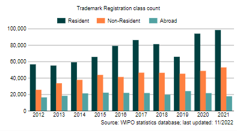
2011
45,957
22,277
15,354
2012
56,569
25,601
16,134
2013
55,090
33,599
18,255
2014
59,095
37,698
21,270
2015
65,606
43,724
22,125
2016
79,053
41,238
21,829
2017
86,201
46,407
21,655
2018
81,210
46,298
19,692
2019
65,820
45,181
24,002
2020
93,933
48,606
21,566
2. 주요제도
가. 상표의 의의
상표란 생산업자, 판매업자, 가공업자 등 영업을 하는 업자 및 서비스 업자가 자기의 업무에 관련된 상품 또는 서비스를 타인의 상품 또는 서비스와 구별하기 위하여 사용하는 표시임
- 상표는 자기의 상품이나 서비스를 타인의 상품이나 서비스와 오인·혼동하지 않도록 표시하는 것이므로 상품, 서비스의 얼굴이자 심볼임
(1) 상품 또는 서비스의 이름
상표는 상품의 얼굴이므로 상품을 전제로 하여 성립됨. 상품은 매매의 대상이 될 수 있고, 교환가치 있는 모든 물품을 의미함. 서비스는 사람이 특별히 보유하고 있는 기술이나, 아이디어, 정보를 타인에게 제공함으로써 성립되는 업임
예컨대, 변리사는 지식재산에 관한 전문가이므로 타인에게 지식재산에 관한 정보나 기술, 지식을 출원인에게 제공하는 업무를 서비스하는 사람임
(2) 상품의 거래업자나 서비스 제공자가 사용
거래업자는 판매업자, 가공업자, 증명업자 등 상품을 거래하는 모든 사람을 지칭함. 전문가는 특별한 기술, 지식, 아이디어를 가지고 있으므로 이 전문지식인 서비스를 타인에게 제공하면 그 대가로 금전적인 이익을 취득할 수 있음
(3) 자타상품식별력
상표는 자기의 상품, 서비스와 타인의 상품, 서비스를 구별할 수 있는 특별 현저한 상표여야 함
(4) 상표의 구성
(i) 문자
문자만으로 구성된 상표이며, 문자는 아랍어, 러시아어든 또는 영어이든 불문함. 상표 중에 문자만으로 구성된 상표가 제일 많음
•문자상표의 예
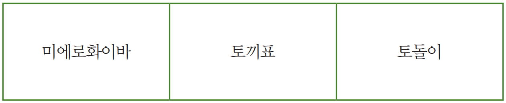
(ii) 도형
도형상표는 도형이나 그림으로 된 상표임. 도형이란 점, 선, 면의 집합으로 이루어진 것으로 특히 점, 선, 면, 입체의 4개를 기초도형이라 함. 물체의 무게 빛깔은 문제 삼지 않고, 물체의 크기, 모양, 위치만 생각할 때 도형이라는 말을 사용함. 평면 위에 있는 도형을 평면도형, 공간에 있는 도형을 공간도형, 또 공간도형 중에서 위치, 모양, 길이, 폭 두께를 가지는 것을 입체도형이라 함
•도형상표의 예
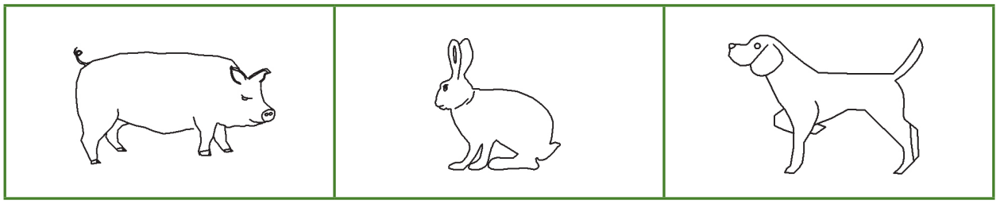
(iii) 입체형상
입체상표는 3차원적인 입체형상이 상표의 구성을 형성한 상표이며 입체상표 출원시는 상표등록 출원서에 그 취지를 설명하여야 하고, 상표 견본은 입체상표의 특징을 충분히 나타낸 도면 또는 사진으로 제출하여야 함
• 입체상표의 예
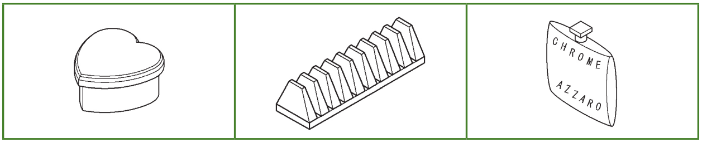
(iv) 문자·도형 및 색채 등의 결합
문자와 도형, 문자와 색채, 문자와 입체형상, 또는 문자·도형·색채가 결합한 상표를 결합상표라 함
• 결합상표의 예
(v) 상호, 단체명 또는 기업명
① 상호 등도 상표로 인정
멕시코 산업재산법 제89조에서 상표로 인정되는 경우는 문자, 도형, 명칭, 입체 형상 이외에 상호, 단체명 또는 기업명도 포함하며, 산업재산법 제90조(등록받을 수 없는 사유)에 해당하지 아니하면 상표로 인정함. 이들 상호, 단체명 또는 기업명도 자타상품(또는 서비스) 식별력이 있어야 함
② 자연인의 고유명
자연인의 고유명은 상표로 인정하지 아니하며, 자연인의 고유명은 자연인의 성명을 말함. 자연인의 고유명, 성명이라 해도 타인이 이미 상표 등록 되었거나 또는 공시되고 있는 상호와 같은 것은 타인에게 상표 등록이 되지 아니함
(vi) 상표는 표장
표장은 특정의 물품이나 내용을 표시하기 위해 이용되는 일체의 감각적 표현 수단을 의미하며, 이 표현 수단 방법으로는 문자, 도형, 색채뿐만 아니라 소리 상표, 맛 상표, 향기 등의 상표로 자타 상품 식별력을 가지고 있으면 상표로서 인정됨
(vii) 상표는 상품에 사용
상표의 진가는 상품에 표시하여 사용하는 데 있음. 등록 상표를 장기간 사용하지 아니하면 상표법에 의해 제재받게 됨. 상표 사용은 상품의 동일성을 나타내기 위하여 상품에 사용하는 모든 수단이 해당하며 상표 사용에 대하여 특별히 제한하는 규정은 없음
(viii) 상표의 시각성
① 산업재산법의 규정
멕시코 산업재산법 제89조에 「다른 상품 또는 서비스로부터 구별이 가능하게 하는 시각적인 명칭 또는 도형」이라고 규정하고 있으므로 상표로서 인정받으려면 시각성도 있어야 함
② 시각성의 요건
•시각으로 인식할 수 있을 것
•육안으로 식별할 수 있는 것
•외부에서 보일 것
③ 입체상표의 경우
입체상표는 디자인의 대상도 되므로 입체 형상이 외부에서 보이지 아니하거나 시각적으로 판단할 수 없으면 입체상표가 될 수 없음
④ 우리나라 상표법과의 대비
멕시코 법에서는 상표의 정의와 상표의 등록요건에서 시각적인 표지, 시각적인 명칭(산업재산법 제89조) 등으로 표현하고 있는 사실에 비추어 볼 때 상표의 시각성을 강조한 것이 눈에 띔. 우리나라도 상표의 시각성을 부인하는 것이 아니라 단지 상표법 어디에도 시각성이라는 용어를 사용하지 아니한 것일 뿐 멕시코 법과 같다고 생각함
나. 상표 등록 요건
(1) 자타상품 및 서비스 식별력
상표는 상품 및 서비스에 표시하는 명칭이고, 이 명칭은 자기의 상품 및 서비스를 타인의 상품 및 서비스와 구별하기 위한 것임. 이 자타상품식별력의 존재에 의해 수요자가 상품 및 서비스의 혼동이나, 오인을 일으키지 아니하고, 수요자를 보호할 수 있음(산업재산법 제89조)
(2) 등록되지 않은 사유에 해당하지 않는 상표
상표는 다음의 등록받지 못할 사유에 해당하면 상표 등록이 되지 않음(산업재산법 제90조)
• 시각적이어도 움직임으로 표현되는, 입체의 동태적 혹은 변형적인 명칭, 도형 또는 형상
• 상표의 보호가 요구되는 상품 또는 서비스의 기술적 명칭 혹은 보통으로 이용되는 명칭 및 일상의 용어나 영업 관행에 의해 해당 상품 혹은 서비스의 보통명칭 또는 일반적 호칭이 되어 있는 말
• 공공의 재산인 또는 일반 공중이 이용할 수 있는 입체의 형상, 다른 것과의 구별을 용이하게 하는 독자성이 부족한 입체형상, 및 상품의 보통 혹은 일상적인 형상 또는 성질 혹은 공업적 기능에 의하여 정해지는 형상 거래에 있어서, 상품의 종류, 품질, 수량, 구성, 용도, 가격, 원산지 명칭 또는 생산 시기를 특정하는 기능을 달성하는 설명적 혹은 지시적인 용어를 포함함
- 문자, 숫자 또는 색채. 단, 그들이 그들에 특별 현저성을 주는 기능을 하는 부호, 도형 혹은 명칭 등의 요소와 결합하고 있는지 또는 그들을 수반하고 있는 경우는 달리함
• 다른 언어로 번역한 번역문이며, 등록할 수 없는 말에 대한 자의(恣意)적으로 변경할 수 있는 철(파일) 또는 인공적인 구성
• 승인을 얻는 일 없이 외국, 멕시코 국, 지방자치체 그 외의 행정 주체의 문장(紋章), 기(旗) 혹은 기장을 복제 또는 모방한 표지, 및 정부계 혹은 비정부계의 국제 조직 그 외 공인된 조직의 명칭을 포함한 모든 명칭(全稱) 혹은 약칭, 표장, 또는 문장(紋章)
• 관할 관청의 허가 없이 멕시코 국에서 채용하는 관리 혹은 보증용의 공적 표지 혹은 공인(公印)을 복제 또는 모방한 표지, 또는 동전, 은행권, 기념 동전 그 외 멕시코 국내 혹은 외국의 법화(法貨)를 복제 혹은 모방한 표지
• 공인의 박람회, 물품전시회, 집회, 문화행사 또는 스포츠 대회에 있어서 수여되는 훈장, 메달 그 외의 상장의 명칭 또는 도식 표시를 복제 또는 모방하는 표지
• 고유 또는 보통의 지리학상의 명칭 및 지도, 또는 나라를 나타내는 명사(名詞) 또는 형용사로, 상품 또는 서비스의 출처(소)를 표시하고 그와 같은 출처(소)에 관한 혼동 혹은 오인을 일으키게 할 가능성이 있는 것
• 어느 상품의 제조로 알려져 있는 도시 혹은 장소의 명칭으로, 그들 상품을 보호하기 위하여 붙여져 있는 것. 단, 특이성이 있는 동시 혼동의 우려가 없는 개인의 명칭으로, 그 소유자의 동의를 받고 있는 것은 제외함
• 사람의 성명, 필명, 서명의 초상으로, 그 자 혹은, 그 자가 고인인 경우는, 그 생존 배우자, 직계 혈족 및 양자손자 또 방계친족(모두 4촌수 뒤에까지의 것)의 동의를 얻지 않은 것
• 지적 혹은 예술적 작품의 표제, 정기간행물 그 외의 출판물의 표제, 혹은 상징적 캐릭터 또는 실제인 초상의 명칭, 예명, 및 연예 그룹의 명칭으로, 대응하는 권리의 소유자로부터 그들의 등록에 대한 명시의 승인을 얻지 않은 것
• 공중을 속이는 또는 오인시킬 우려가 있는 입체의 명칭, 도형 또는 형상이며, 보호하려고 하는 상품 혹은 서비스의 성질, 구성성분 또는 품질에 대한 허위표시를 구성한다고 이해되는 것
• 상품 혹은 서비스에 사용되는 것으로서 멕시코에서 잘 알려져 있다고 특허청이 판단하는 표장과 동일 혹은 유사한 입체의 명칭, 도형 또는 형상
• 먼저 출원이 이루어져 등록을 기다리고 있던지 또는 이미 등록되어 효력을 가지는 다른 상표와 동일 혹은 혼동시킬 정도로 유사하고, 또한 동일 혹은 유사한 상품 또는 서비스에 사용되는 표장. 단, 이미 등록되어 있는 것과 동일한 표장이어도, 유사한 상품 혹은 서비스의 사용을 위하여 동일 소유자에 의하여 출원되는 경우는 제외함
• 해당 상표에 의하여 보호하려고 하는 상품 혹은 서비스의 제조 혹은 판매 또는 제공을 주된 업무로 하는 회사 또는 공업, 상업 혹은 서비스의 사업소에 의하여 사용되는 상호로, 해당 상표의 등록 출원일 또는 최초의 사용의 선서일보다 전에 사용되고 있는 것과 동일 혹은 혼동시킬 정도로 유사한 표장. 단, 이 규정은, 해당 상호의 소유자에 의한 상표등록출원의 경우에는, 동일한 상호가 다른 자에 의하여 공시되지 않는 한 적용되지 않음
(3) 상표 등록 요건에 위반한 상표
(가) 거절 이유
상표등록출원이 자타 상품 및 서비스를 식별할 수 없는 상표 및 서비스이거나, 등록될 수 없는 사유에 해당하면 상표(또는 서비스) 등록의 거절이유가 됨
(나) 무효사유
또한 상표 등록 요건에 해당하지 아니한 상표가 등록되면 무효 사유가 됨
(4) 제일 먼저 특허청에 출원한 상품 (선출원)
(가) 선출원주의의 의의
선출원주의는 상표를 특허청에 제일 먼저 출원한 사람에게 상표등록을 부여하는 제도임(산업재산법 제121조)
(나) 선후출원의 판단 기준
(i) 타인간의 출원에만 적용
선출원주의는 타인간의 출원에만 적용되고, 동일인의 경우에는 적용되지 아니함. 동일인은 유사상표를 사용해도 상품의 오인이나 출처의 혼동을 일으킬 염려가 없기 때문임
(ii) 출원일을 기준
누가 특허청에 제일 먼저 출원하였는가의 여부의 판단은 출원일을 기준으로 하여 판단함
(iii) 상표와 지정상품의 동일·유사시 적용
선출원의 적용은 상표와 지정상품이 동일·유사한 경우에 적용되고, 상표와 그 지정상품이 다른 경우에는 선출원주의가 적용되지 아니함
(다) 2인 이상의 상표출원의 경우
(i) 출원일이 다른 경우
동일상표를 2인 이상이 다른 일(日)에 출원한 경우는 제일 먼저(최선의) 상표등록 출원한 사람만이 상표등록을 받을 수 있음
(ii) 출원일이 동일한 경우
2인이 동일 상표를 같은 날짜에 출원한 경우는 시간이 빠른 사람에게 상표등록이 부여됨
(라) 선출원을 인정받지 못하는 경우
• 출원절차의 무효, 포기, 취하
• 거절결정이 확정된 출원, 불복청구의 심결이 확정된 출원
• 지정상품 및 서비스의 일부 포기
(마) 선출원주의의 예외와 선사용주의의 가미
(i) 선출원주의의 예외
• 우선권 주장을 한 출원
• 상표 및 지정 상품을 보정한 경우
상표등록 후 상표나 지정상품을 보정한 경우에는 보정된 내용은 원 상표출원 일로 인정됨
(ii) 선사용주의의 가미
① 주지저명 상표보호
상품 혹은 서비스에 사용되는 것으로서 멕시코에서 널리 알려져 있다고 특허청이 판단하는 표장과 동일 혹은 유사한 입체의 명칭, 도형 또는 형상은 타인에게 상표 등록되지 아니하고, 상표 등록 출원인이 주지상표의 소유자인 경우에는 예외임(산업재산법 제90조)
② 멕시코에서 먼저 성실하게 사용한 상표
멕시코 내에서 동일 혹은 유사한 상품이나 서비스를 위하여 동일 혹은 혼동시킬 정도로 유사한 표장을 성실하게 사용하는 제3자가 그 사용을 해당 상표의 출원일 혹은 최초의 사용 선서일보다 먼저 평온하게 사용하고 있는 경우에 제3자는 해당 상표등록의 공고일로부터 3년 이내에 자기가 사용하고 있는 표장의 상표등록출원을 할 수 있음. 단, 미리 해당상표의 무효 선언을 신청하여 그 선언을 얻어 둘 필요가 있음(산업재산법 제92조(1))
③ 등록상표의 출원일보다 먼저 사용한 경우
제3자는 등록상표 또는 등록상표와 혼동시킬 정도로 유사한 표장을 영업소 또는 법인의 상호, 단체명 혹은 기업명으로서 또는 그 일부로서 사용할 수 없음(산업재산법 제91조). 그러나 본 조는 제3자가 등록상표의 출원일 또는 그 최초의 사용선서일보다 먼저 상기의 표장을 구성하고 있는 상호, 단체명 또는 기업명에 대해서는 적용하지 않음
(바) 선출원위반의 효과
• 거절이유·무효사유
• 특허청에 정보제공
(사) 우리나라 제도와의 대비
우리나라는 선출원의 적용에 있어서 상표출원보다 먼저 사용한 사실이 있어도 이를 인정(그러나 박람회에 출품한 상표는 예외)하지 않으나 멕시코는 이러한 경우 사용선서일보다 먼저 표장을 구성하고 있는 상호, 단체 등 명칭에 대해서는 선출원 규정이 적용되지 않음
제2절 출원 및 심사절차
1. 상표의 출원 절차
가. 상표등록출원
상표등록 출원서에는 다음 사항이 기재되고 첨부물이 첨부된 상표등록출원서 3통을 특허청에 제출하여야 함(산업재산법 제113조)
- 출원인의 성명, 국적 및 주소(법인은 명칭, 및 영업소의 소재지)
- 상표를 구성하는 식별성 있는 상표견본이 언어적 요소로 구성된 것인지 또는 그와 같은 요소를 포함하지 않은지, 입체의 것인가, 그들의 결합인 것인지를 명시할 필요가 있음
- 해당 상표가 최초로 사용된 날(이것은 후에 정정할 수 없다), 또는 그것이 아직도 사용된 것이 아닌 것의 기재. 아무런 기재도 되어있지 않은 경우는, 해당 상표는 아직도 사용되어 있지 않은 것으로 봄
- 해당 상표가 사용되는 상품 혹은 서비스와 그 류 구분
■ 출원서류
• 대리인이 있는 경우 위임장
• 상표견본(문자 이외 상표인 도형, 입체상표, 또는 이들과 결합한 상표)
• 단체표장은 정관
• 출원료, 등록료 및 등록증 발행에 따른 수수료 납부 영수증
• 타인이나 타 기관의 인증이나 동의를 필요로 하는 경우 인가서 또는 동의서 첨부
나. 상표등록 출원시 유의할 사항
(1) 도형상표·입체상표의 경우
상표출원서와 함께 제출되는 상표의 견본은 공중을 속이고 또는 공중에 오인을 일으키는 어구를 포함하고 있어선 안됨. 출원이 언어적 요소를 포함하지 않는 상표 또는 입체의 상표의 보호를 요구하는 것인 경우는, 해당 출원서에 수반하는 견본엔 상표를 구성하는 또는 구성할 가능성이 있는 어구를 포함해선 안됨. 단, 그 취지의 명시의 유보가 이루어지고 있는 경우는 별개로 함(산업재산법 제115조)
(2) 2인 이상의 공동출원인 경우
상표등록의 출원이 2인 이상의 공동출원인 경우, 해당 상표의 사용과 라이선스 허락 및 해당 상표권의 양도에 대한 출원인 사이의 합의서가 출원서와 함께 제출되지 않으면 안됨(산업재산법 제116조). 이 공동출원인 사이의 합의서는 관계 상표출원인 사이의 합의문서의 형태도 정하지 않으면 안됨
- 이 합의서는 상품의 지정 또는 서비스의 한정, 라이선스의 허여, 법 제154조에 규정하는 등록의 취소 및 그 외의 사항에 대한 합의도 포함하여야 함(산업재산규칙 제58조)
(3) 도형 등의 사용을 유보하지 아니한 경우
해당 상표의 디자인 중의 표현 및 도형에서 사용을 유보하지 않는 것 이것에 대해 아무 지적도 없이 출원서를 제출하는 경우, 출원인은 출원서에 첨부된 견본 그대로 해당 상표를 사용하는 배타적 권리를 유보하는 것으로 함(산업재산규칙 제56조)
(4) 상표의 서체, 사이즈의 경우
문자상표의 경우, 상표 출원인은 모든 서체 및 문자 사이즈에 있어서의 해당 문자 상표를 사용하는 배타적 권리를 유보함
(5) 지정상표 및 지정 서비스의 경우
출원서에 기재하는 상품 및 서비스의 지정은 다음의 규칙에 따라야 함(산업재산규칙 제57조)
• 동일한 종류에 속하는 상품 및 서비스만을 지정할 수 있음
• 그들의 공시규칙에 사용되고 있는 명칭에 따라서 지정해야 함
• 해당 분류표는 관보에 공시됨
다. 우선권주장을 한 상표출원
(1) 의의
우선권이라 함은 한국에 상표 등록 출원한 자가 동일한 상표를 멕시코에 상표등록출원을 하는 경우 국제조약에 규정된 기간 내에 또는 최초의 상표등록출원을 한 날로부터 6월 이내에 출원하면 멕시코의 출원은 최초의 나라 한국에 상표 등록 출원한 일에 출원된 것과 동일하게 취급해 주는 것을 말하고, 이러한 우선권을 주장할 수 있는 권리를 우선권 주장이라 함(산업재산법 제117조)
(2) 우선권 요건
(가) 정식의 출원
우선권 주장은 조약 당사국에 최초의 출원한 것으로써 정식으로 출원한 것이어야 함
(나) 출원인의 동일
최초의 나라인 한국에 출원한 출원인과 멕시코에 출원한 출원인이 동일하여야 함
(다) 상표의 동일
최초의 나라인 한국에 출원한 상표와 멕시코에 출원한 상표는 동일하여야 함
(라) 상품 또는 서비스의 동일
최초의 나라에 출원한 지정상품과 멕시코에 출원한 지정상품 또는 서비스가 동일하여야 함
(마) 제일 먼저 출원인 경우
우선권 주장의 기초로 할 수 있는 출원은 조약의 당사국에서 제일 먼저 출원한 출원에 한함. 만약 두 번째, 세 번째에 한 출원을 가지고 우선권 주장의 기초로 할 경우 우선권을 주장할 수 있는 기간이 실질적으로 연장되는 결과가 되기 때문에 최초 출원한 출원에 한한 것임
(바) 우선권 기간 내의 출원
우선권을 주장할 수 있는 기간은 조약 당사국에 최초 출원한 날로부터 6월내에 멕시코에 출원하여야 함. 이 기간 경과한 후에 출원한 것은 우선권을 주장할 수 없으며 이 경우에는 멕시코에 출원한 날이 출원 일이 됨
(3) 우선권을 인정받기 위한 절차
(가) 출원서에 원 출원 국의 출원번호, 출원일자 등 명시
등록 출원시에, 우선권을 주장하는 동시에 최초출원 국가명과 출원번호, 출원일자를 명시하고 최초 출원국에서 발급한 출원에 대한 증거인 출원 사실증명서를 제출하여야 함
(나) 최초 출원 국의 상품 및 서비스 내의 출원
멕시코에서의 출원에 있어서, 최초 출원한 국가에서 지정한 상품 및 서비스를 초과한 것에 대한 우선권 주장은 인정받지 못함. 이와 같은 주장이 이루어졌을 경우, 우선권은 최초출원국의 출원서에 기재된 상품 및 서비스에 대해서만 우선권이 인정됨
(다) 우선권주장서류 3월내에 제출
국제 조약, 본 법 및 본 법에 기초하는 규칙에서 규정하는 요건이 갖추어진 서류는 출원일부터 3월 이내에 제출하여야 함. 여기의 요건은 우선권 주장하기 위한 서류이며, 최초 출원 국에서 발부한 상표등록출원사실증명서를 특허청에 제출하여야 함(산업재산 제118조)
(4) 우선권주장의 효과
(가) 출원일은 최초의 출원 국가의 출원일
우선권은 주장한 출원은 최초의 국가에서 출원한 출원일에 출원한 것으로 봄
(나) 선출원의 예외
라. 상표권 존속기간 갱신 출원
상표권의 존속기간의 갱신 출원은, 그 존속기간 만료의 6월 전까지 상표권자에 의하여 되지 않으면 안됨. 단, 이 규정에 구애 받지않고, 특허청은 등록의 존속 기간 만료 후 6월 이내에 갱신 출원을 심사함. 그 기간 내에 갱신 출원이 이루어지지 않는 경우, 해당 상표등록은 소멸함(산업재산법 제133조)
등록상표를 정당한 이유 없이 3년 이상 사용하지 아니한 경우에는 갱신되지 않음(산업재산법 제134조)
마. 상품·서비스 분류표
(1) 니스협정 가맹국
맥시코도 니스협정에 가입한 가입국으로서 국제분류(니스분류)를 채택하고 있음. 따라서 멕시코는 상품 34개류, 서비스 류 8개류의 독자 분류를 채용하고 있음(산업재산법 제93조, 산업재산규칙 제59조)
(2) 상표·서비스 분류표
[표 29] 상표·서비스 분류표
상품 제1류
사진, 원예 및 임업에 사용되는 화학물질, 비가공 인공수지, 비가공 플라스틱, 비료
상품 제2류
그림물감, 니스, 래커, 녹방지제 및 목재 부식 방지제, 착색제, 매염제
상품 제3류
표백제 그 외의 세탁용제, 청소, 향료, 정유, 화장품, 이발용 로션, 치약제
상품 제4류
공업용 유지, 윤활제, 흡진, 습윤 및 결합제, 연료(자동차 연료를 포함.) 및 발광제, 양초, 심지
상품 제5류
의약품, 수의용 의약품 및 위생용제, 소독제, 살충제, 살균제, 제초제
상품 제6류
합금, 금속성 건물, 선로용 금속재료
상품 제7류
기계류 및 공작기계, 모터 및 엔진(육상 차량용의 것을 제외)
상품 제8류
수작업용 기구, 칼날류, 휴대 무기, 면도칼
상품 제9류
과학, 항해, 측량, 전기, 사진, 영화, 광학, 계량, 측정, 신호, 금전 등록기, 계산기, 데이터 처리 장치 및 컴퓨터, 소화기
상품 제10류
외과, 내과, 치과 및 수의과용의 기구·장치, 의지(義肢)
상품 제11류
조명, 가열·난방, 증기발생, 요리, 냉각, 건조, 환기구
상품 제12류
차량, 육상, 공중 및 수중 이동용 장치
상품 제13류
화기, 탄약, 탄환·로케트 발사장치, 폭발물, 불꽃
상품 제14류
귀금속, 그들 합금, 귀금속제 상품 및 귀금속으로 코팅한 상품으로 다른(종)류에 포함되지 않는 것, 보석류, 귀석(貴石), 측시계·크로노미터
농업, 원예 및 임업 제품·산(업)품으로 다른 종류에 포함되지 않는 것, 생체 동물, 생과일 및 야채, 종자, 식물 및 꽃, 동물용 사료, 맥아(麥芽)
상품 제32류
맥주, 미네럴워터, 탄산수 및 그 외의 비알콜성 음료
상품 제33류
알코올성 음료(맥주 이외)
상품 제34류
담배, 흡연도구, 성냥
상품 제35류
선전·광고, 사업관리, 사업경영, 오피스 기능
상품 제36류
보험, 재무, 금융업, 부동산업
상품 제37류
건물 건설, 수선·보수, 설비 설치
상품 제38류
통신
상품 제39류
운송, 상품의 포장, 보관, 여행
상품 제40류
원재료 취급
상품 제41류
교육, 훈련, 오락, 스포츠·문화활동
상품 제42류
식품·음료의 제공, 일시적 숙박시설, 의학, 법률 서비스, 과학상 및 공업상의 연구, 컴퓨터프로그래밍
바. 우리나라 출원 제도와의 대비
우리나라에는 존재하고 멕시코 법에는 존재하지 아니하는 제도는 다음과 같음
(1) 색채 출원에 관한 규정
멕시코 법은 색채 상표를 존치하고 있지 아니하므로 색채 상표 출원에 관한 규정이 없음. 우리나라는 색채 상표를 두고 있으므로 색채 상표 출원 요령에 대해 규정하고 있음
(2) 업무표장 출원 제도 유무
우리나라는 업무 표장 제도를 존치하고 있어서 이에 대한 출원절차 규정이 있으나 멕시코 법은 업무 표장 제도가 없음
(3) 지정상품 추가출원 제도 유무
우리나라는 추가상품 출원 제도가 있으나, 멕시코 법은 이런 제도가 없음
(4) 2 이상의 상품 류 구분에 속하는 상품을 1 상표출원서로 출원 가능
이는 1상표 1출원주의의 예외로 인정되는 제도인데, 우리나라는 하나의 상표 출원서에 상품 제2류, 제3류, 제4류, 제7류 등 여러 구분에 속하는 상품을 지정할 수 있으나, 멕시코 법은 이런 출원이 인정되지 않음. 출원서에 기재하는 상품 및 서비스는 동일 류에 속하는 상품 및 서비스만을 지정하기로 되어 있음
(5) 사용선서서 제출
멕시코는 상표권 존속기간 갱신등록출원시 최소한 지정상품 1개에 대해 사용했다는 선서서를 제출한 것에 대해서만 심사함. 우리나라는 상품에 사용한 사실이 없어도 등록됨
(6) 상표 변경출원 제도
우리나라는 상표로 출원할 것을 서비스표로 출원 변경할 수 있고, 또 상표갱신출원이나 지정 상품추가출원을 상표등록출원으로 변경할 수 있으나 멕시코는 출원변경제도가 없음
(7) 출원분할제도 유무
우리나라는 2이상의 상품을 지정 상품으로 하여 상표등록출원 한 경우에는 보정기간 내에 2이상의 상표등록출원으로 분할할 수 있고, 상표권의 분할출원도 인정함. 이에 대해 멕시코는 분할출원제도가 없음
(8) 상표를 표시한 상품을 박람회에 출품한 경우
상표등록을 받을 수 있는 권리를 가진 자가 박람회에 출품한 상품에 사용한 상표를 그 출품한 날로부터 6월 이내에 그 상품을 지정상품으로 하여 상표등록출원을 한 때에는 당해 상표등록출원은 그 출품을 한 때에 한 것으로 봄. 이에 대해 멕시코 법은 이런 제도가 없음
2. 상표 심사 절차
가. 심사
(1) 특허청 심사관의 심사
특허청의 상표 심사관은 상표등록출원을 심사함. 심사관은 상품분류표 별로 심사관으로 지정되었으므로 출원 순서에 따라 심사하여야 함
(2) 심사자료
특허청 심사관은 비치된 심사자료를 조사하여 등록 여부를 결정함. 심사 자료는 주로 멕시코 특허청에서 등록된 상표 공보, 주지, 저명 상표집 등, 심사기준, 판례 등을 참고자료로 활용함
상표등록 출원서에 출원인의 성명, 주소 및 국적의 기재가 정확하고, 상표의 견본이 부착되어 있고, 수수료 영수증(산업재산법 제114조)이 첨부되어 있고, 출원서가 스페인어로 기재되어 있고, 출원이나 또는 대리인의 서명이 되어 있는 출원서의 출원일이 원출원일로 인정됨
(다) 보정한 일자가 출원일이 되는 경우
상표등록출원서의 방식심사 결과 출원서 및 구비서류에 보정할 사항이 있는 경우 특허청은 출원인에게 출원 내용을 정정, 보충할 것을 서류로 통지하고 이 보정지시에 의거 보정한 경우 보정일자가 출원일로 인정됨(산업재산법 제121조)
(라) 보정하지 아니한 경우 포기로 인정
상표등록 출원인은 특허청의 보정 지시에 불응하거나, 추가 기간에도 소정의 요건을 충족하지 않는 경우 또는 수수료를 납부하지 않는 경우, 해당 상표등록출원은 포기한 것으로 봄(산업재산법 제122조의2)
나. 실체심사
(1) 심사착수
특허청 심사관은 상표등록출원의 내용 중 상표 및 지정상품에 대하여 흠이 있는가 여부, 상표 출원과 동일, 유사한 먼저 출원한 출원이 있는가 여부, 이미 먼저 등록된 상표가 있는가 여부 등 상표 등록 요건, 등록받을 수 없는 사유에 해당 여부를 철저히 심사하여야 함
(2) 보정서, 의견서 제출 지시
(i) 보정지시
상표출원의 심사 결과 상표가 상표등록요건에 해당하지 아니하고, 등록받을 수 없는 사유에 해당하여 상표 등록을 받을 수 없는 경우가 있거나, 상표등록출원서나 첨부서류 등에 보정할 사항이 있는 경우에는 거절이유통지서나 보정할 것을 지시하여야 함
(ii) 보정서, 의견제출
특허청은 상표 등록 출원인에게 보정지시나 의견서를 제출 지시할 경우에는 통지일로부터 2월의 유예기간을 주어 이 기간 내에 의견서나 보정서를 제출하도록 하여야 함
(iii) 보정을 불응한 경우
특허청의 보정기간 내에 출원인이 보정 지시나 의견서 제출지시 등 지시에 불응하거나, 적절한 보정을 하지 않는 경우에, 그 출원은 포기한 것으로 봄(산업재산법 제122조)
(3) 보정기간 내 상표의 수정, 변경한 경우
보정기간 내에 특허청의 지시에 따라 출원인이 해당 상표를 수정 혹은 변경했을 경우, 그 상표에 대해 재차 심사를 함. 단, 출원인이 수정 혹은 변경한 상표에 대한 수수료를 납부함과 동시에 제113조 및 제114조 및 본 법에 기초하는 규칙의 해당 규정의 요건을 충족하는 것을 조건으로 함. 그러한 경우, 보정서를 제출한 날을 출원일로 함(산업재산법 제123조)
(4) 출원의 심사 중지
특허청은 상표심사시 먼저 등록된 상표가 무효나 취소청구가 계류 중일 경우 심사를 중지하여야 함(동법 제123조)
[그림 13] 원산지 명칭사용 허가 신청 절차도
(5) 상표심사 경향
• 멕시코 특허청은 상표 출원을 한가지류별로 구성되어 있는 상품과 서비스만을 지정해야 하며, 여러류별을 지정한 출원은 인정되지 아니함
• 특허청은 지정된 상품이나 서비스의 명칭이 명확하지 아니하거나 상품이나 서비스의 의미 내용을 이해하지 못하면 상표출원인에게 이에 대한 설명을 요구하며, 만약 이 설명요구에 따르지 아니하면 거절함
• 상표의 유사성 여부 심사시 가장 중요시하는 기준은 출원상표와 유사상표가 어느정도 혼동을 일으키냐에 중점을 두고 있음
(6) 거절을 위한 결정
특허청의 실체심사 결과 상표등록요건에 적합하지 아니하거나 상표 출원이 상표 등록받을 수 없는 사유에 해당하면, 특허청 심사관은 상표 등록 출원인에게 상표등록출원을 거절한다는 거절결정서를 서면으로 송부하여야 함
(7) 등록을 위한 결정
특허청은 상표등록출원에 대하여 거절 이유를 발견하지 못한 경우 상표등록 출원인에게 상표등록증이 발행됨
3. 이의/심판 절차
가. 상표등록의 무효
상표등록의 무효라 함은 특허청의 심사를 거쳐 등록된 상표에 대하여 법에 규정된 상표등록 무효 사유에 해당하는 경우 특허청에 의해 상표권의 효력을 소멸시키는 제도임
(1) 상표등록 무효 사유
상표등록 무효 사유는 다음과 같음(산업재산법 제151조)
• 등록이, 본 법 혹은 등록시에 효력을 가지고 있던 다른 법 규정에 위반하여 등록된 경우 본 호의 규정에 구애받지 않고, 상표등록 무효 청구는 해당 등록의 출원인의 인격 대표자의 부존재를 이유로서 청구할 수 없음
• 등록상표가 그 등록 출원일이 전에 멕시코 또는 외국에서 동일 혹은 유사한 상품 또는 서비스에 관해서 사용되고 있던 것과 동일 혹은 혼동시킬 정도로 유사한 경우
- 단, 그러한 선사용에 의한 우선적 권리를 주장하는 자가 해당 등록의 출원일 또는, 해당하는 경우는, 해당 등록을 받은 자에 의한 최초의 사용일보다 전에 먼저 그 상표를 계속적으로 사용하고 있음을 증명해야 함
• 상표등록 출원서에 기재된 허위의 사유에 기초하여 상표 등록이 부여되었을 경우
• 등록이 중대한 착오, 과오 또는 판단 차이에 따라 부여되어 그것이 동일 혹은 유사한 상품 또는 서비스에 사용함으로써 혼동시킬 정도로 유사한 상표에 대한 등록이기 때문에 기존의 다른 등록상표가 침해된다고 생각할 수 있는 경우
• 외국에서 등록되어 있는 상표의 상표권자의 대리인, 대표자, 사용권자 또는 배급자가, 해당 상표 혹은 그것과 혼동시킬 정도로 유사한 상표의 등록을 해당 외국 등록상표의 상표권자의 명시의 동의를 얻지 않고 자기의 이름으로, 출원하여 등록을 얻었을 경우. 이러한 경우, 해당 등록은 악의로 이루어진 것으로 봄
• 상표를 등록 못할 사유에 해당하는 경우
(2) 상표등록 무효청구
(가) 무효심판 청구인
• 특허청의 직권
- 상표등록무효를 청구할 수 있는 자는 특허청의 직권, 이해관계인이 청구할 수 있음(산업재산법 제151조)
• 연방정부 검찰관
- 상표권이 연방 정부의 이익에 관련있는 경우에는 연방검찰관이 상표등록무효청구 할 수 있음
(나) 무효청구기간 (동법 151조)
(i) 공보에 공시된 날로부터 5년 이내
본 조에 기초하는 무효 청구는 공보에 의한 해당 상표 등록의 공시가 효력을 발생한 날로부터 5년 이내에 청구할 수 있음
(ii) 공보에 공시한 날로부터 3년 이내에 청구
상표등록무효 중 상표등록출원일 이전에 멕시코나 외국에서 동일 또는 유사한 상품 또는 서비스에 관해서 사용되고 있던 것과 동일하거나 혼동시킬 정도로 유사한 경우에는 공보에 공시한 날로부터 3년 이내에 청구할 수 있음
(iii) 언제든지 무효 청구할 수 있는 경우
상표등록무효사유 중 상표등록이 본 법 혹은 등록시에 효력을 가지고 있던 다른 법 규정에 위반하여 등록된 경우, 외국에서 등록되어 있는 상표의 상표권자의 대리인, 대표자, 사용권자 또는 배급자가 해당 상표 혹은 그것과 혼동시킬 정도로 유사한 상표의 등록을 해당 외국 등록상표의 상표권자의 명시의 동의를 얻지 않고 자기의 이름으로, 출원하여 등록을 얻었을 경우, 해당 등록은 악의로 이루어진 것으로 간주됨
상표등록 무효결정이 확정되면 그 상표등록은 상표등록시까지 거슬러 올라가서 소멸됨 즉, 상표권의 효력이 등록시부터 상실됨
(나) 사용권·담보권의 소멸
상표등록무효는 상표권에 설정된 사용권·담보권 등 여러 권리도 동시에 소멸함
(다) 상표권 존속기간 갱신등록 출원의 거절
상표권 존속기간 갱신출원이 특허청에 계류 중에 있는 경우 상표등록무효로 인해 이 갱신출원은
(라) 손해배상청구 등
등록상표의 사용권자, 담보권자 등 상표권에 대하여 이해관계 있는 자는 상표권자에게 상표등록 무효로 인한 손해가 발생한 경우 손해배상을 청구할 수 있음
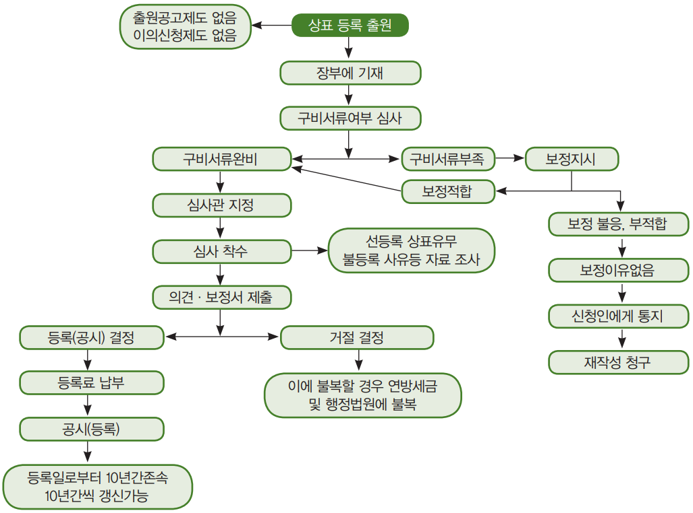
[그림 14] 상표등록출원신청에서 등록될 때까지의 절차도
(5) 우리나라와의 대비
(가) 무효사유의 대비
우리나라는 상표등록 무효사유에 상표등록이 조약에 위반한 경우, 외국인의 권리능력 존재하지 않는 경우 등이 포함되어 있으나, 멕시코 법은 상표등록 무효에 포함되어 있지 않음
(나) 일부지정상품 무효제도 유무
우리나라는 일부 지정상품 및 서비스에 대해 무효청구 할 수 있으나 멕시코 법은 일부 무효청구 제도가 존재하지 아니함
(다) 상표권이 소멸된 경우 무효청구 여부
우리나라는 상표권이 소멸된 후에도 상표등록 무효 청구할 수 있으나 멕시코 법은 존재하지 아니함
(라) 존속기간 갱신등록 무효청구 제도 유무
우리나라는 상표권 존속기간 갱신등록무효청구 제도가 존재하나 멕시코 법은 존재하지 아니함
(마) 권리범위확인심판 제도 유무
우리나라는 권리범위확인심판 제도가 존재하나, 멕시코 법에는 존재하지 아니함
(바) 상표등록이 무효인 경우 소급효가 되지 않는 경우
우리나라 상표법, 특허법은 외국인의 권리능력이 있어서 등록되었다 해도 등록 후 조약개폐 등의 외국인의 권리능력이 상실된 것을 이유로 무효된 경우는 상표등록시까지 소멸되는 것이 아니고, 외국인의 권리능력이 상실된 때부터 효력이 없어짐. 이에 대해 멕시코 법은 이런 규정이 존재하지 아니함
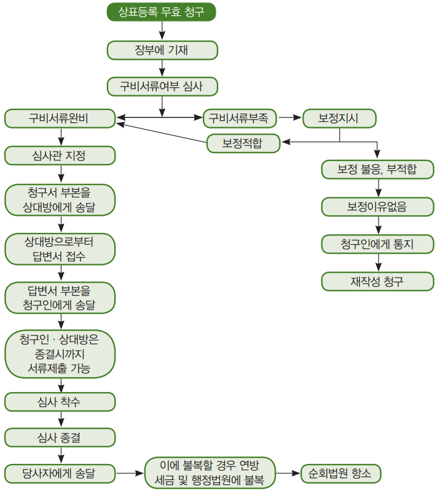
[그림 15] 상표등록 무효 청구 절차도
나. 상표권의 소멸
(1) 상표권 소멸의 의의
상표권의 소멸이라 함은 상표 등록에 의해 유효하게 발생한 상표권이 일정한 사실을 이유로 그 효력을 상실하는 것을 말함
(2) 상표권의 소멸원인(산업재산법 제152조)
• 본 법의 규정에 따라 갱신되지 않는 경우
• 등록상표를 정당한 이유 없이 3년간 사용하지 않은 경우
- 상표가 그 소멸의 행정적 선언을 요구하는 청구 전 3년 동안 사용되어 있지 않은 경우. 단, 상표를 사용하지 않은 것에 대해 정당한 사유가 존재한다고 판단하는 경우는 예외
• 상표권자는 자기의 등록상표를 포기할 수 있으며, 포기하면 상표 등록은 포기한 때부터 소멸
• 등록상표가 산업재산법 제151조에 해당하여 무효된 경우에는 상표권의 효력이 소멸
• 상표 등록이 상표법 제153조의 취소사유에 해당하여 취소된 때에는 상표권의 효력이 상실되어 소멸
상표권자가 타인의 상표 사용을 묵인하여 일반 명칭화 된 경우 상표권자는 등록상표를 계속 사용하여야 함에도 사용하지 아니하고 방치하는 사이 상업적 업자나 일반공중이 사용하는 것을 방치 또는 묵인함으로써 등록상표가 일반명칭화 되어 등록상표의 자타상품식별력을 상실한 경우에는 상표등록취소 사유가 됨(산업재산법 제153조)
(나) 상표권자의 취소신청에 의한 취소
상표권자는 언제든지 서면으로 등록상표의 취소를 특허청에 신청할 수 있음. 등록상표가 공유인 경우와 단체 표장인 경우에는 등록상표 취소 확인서가 첨부되어야 하고 공증을 받아야 함(산업재산규칙 제63조)
(3) 상표등록 취소청구
(가) 청구인
상표등록 취소청구인은 특허청의 직권, 이해관계인이 취소 청구할 수 있음. 상표권자가 자기의 등록을 취소 청구시는 상표권자가 상표등록취소 청구할 수 있음
(나) 상표등록 취소청구서 제출
취소청구인은 상표등록 취소청구서를 특허청에 제출하여야 함. 취소청구서에는 신청목적 및 신청이유를 기재하고, 이에 따른 증거를 제출하여야 함
(다) 답변서 제출
피신청인인 상표권자는 청구인의 취소신청에 대한 답변서를 제출해야 하고, 그에 따른 증거를 제출하여야 함
[그림 16] 상표등록 취소 청구 절차도
(마) 심리착수
특허청은 청구인, 피청구인이 제출한 자료를 심리하여 당사자로부터 충분한 주장이 있었다고 판단한 경우, 취소 여부를 결정하여야 함
(바) 결정문 송달
특허청은 최종적으로 상표등록 취소 결정을 할 경우 결정문을 청구인, 피청구인에게 송달하여야 함
(4) 상표등록취소의 효과
(가) 소급 소멸이 안됨
취소결정은 취소된 때부터 소멸특허청의 상표등록 취소 결정의 효과는 소급해서 상표권이 소멸되는 것이 아니고 장래에 향하여 상표권이 소멸됨. 이 점에서 상표등록의 무효의 효력과 차이가 있음
(나) 사용권·담보권도 소멸
상표권이 취소되면 상표권에 설정된 사용권·담보권도 소멸됨
(다) 갱신출원은 거절
해당 상표권존속기간갱신출원이 특허청에 계류 중에 있는 경우에는 이 갱신출원은 거절됨
(5) 우리나라제도와의 대비
우리나라 등록상표 취소사유는 상표권자, 통상사용권자, 전용사용권자가 정당한 이유 없이 사용하지 아니한 경우, 전용 및 통상 사용권자가 유사상표를 유사 상품에 사용함으로써 상품의 오인, 출처의 혼동을 야기한 경우, 상표권 이전시 유사한 상표는 동시에 동일인에 이전해야 하는데, 그렇지 아니한 경우, 그리고 상표권자가 고의로 등록상표를 변경, 부가하여 사용하는 경우 등을 취소사유로 하고 있음
이에 대해 멕시코는 상표 등록 후 정당한 이유 없이 3년 이내 사용하지 아니한 경우에는 취소사유가 아니고, 소멸원인으로 규정하고 또 위와 같은 우리나라의 상표등록 취소사유와 같은 규정은 존재하지 아니함. 단지, 멕시코의 상표등록 취소사유로는 일반 공중이 사용함으로써 일반명칭이 되고 자타상품식별력을 상실한 경우 취소사유가 되도록 규정하고 있음
제3절 등록 및 활용
1. 등록 및 유지
가. 상표등록
상표등록이라 함은 상표권 설정등록, 사용권 및 담보권 설정등록, 주소 등 변경등록 등 상표권의 변동사항에 따라 등록이 발생함. 따라서, 등록은 상표등록 사항에 대하여 변동이 있을 경우 상표등록장부에 변동사항을 기재해 놓는 것을 말함
특허청은 상표등록의 증거로써 각 상표에 대해 등록증을 발행함. 등록증에는 해당 상표의 견본이 첨부됨과 동시에, 다음에 같은 사항이 기재됨(산업재산법 제126조)
• 상표의 등록번호
• 상표를 구성하는 식별성 있는 표지, 해당 표지는 언어적인가, 비언어적인가, 입체 형상의 것인가, 또는 그들의 혼합한 것인가가 명시
• 상표가 사용되는 상품 혹은 서비스
• 상표권자의 명칭 및 주소
• 출원일, 승인된 우선일, 있으면 최초의 사용일, 및 등록증 발행일
• 상표의 존속기간
등록상표의 변경사용 가능·공보에 공시
- 등록상표는 등록된 형상으로 또는 자타상품식별력을 보유하고 또 특별 현저성 있는 부분을 변경하지 않는 한도 내에서 등록상표를 변경한 형상으로 국내에서 사용할 수 있음(산업재산법 제128조)
나. 우리나라 상표출원 심사제도와의 대비
우리나라에는 존재하고, 멕시코 법에는 존재하지 아니하는 제도는 다음과 같음
(1) 출원공고제도 유무
멕시코 법은 출원공고 제도가 없으나, 우리나라는 심사 후 거절이유가 없으면 상표출원 내용을 출원공고 하여야 함
(2) 이의신청제도 유무
멕시코 법은 출원공고제도가 없기 때문에 상표등록 이의신청제도도 없음
(3) 부적합한 보정
우리나라는 부적법한 보정인 경우 이를 이유 없다고 보정 각하하고 있으나 멕시코는 그 보정을 지시한 것에 대하여 보정을 하지 아니하거나 적절한 대응을 시행하지 아니한 경우, 그 상표출원은 포기한 것으로 봄(산업재산법 제122조)
2. 효력 및 활용
가. 상표권의 의의와 효력
(1) 상표권의 의의
상표권은 법률의 범위와 존속기간 내에서 등록상표를 독점·배타적으로 사용할 수 있는 권리임. 상표권은 상표설정 등록에 의해 독점·배타적으로 사용할 수 있는 권리가 발생하므로 타인은 등록상표를 상표권자의 허락 없이 사용해서는 아니되며, 만약 허락 없이 등록상표를 사용하면 민형사상의 문제가 발생함
(2) 상표권의 존속기간
상표권의 효력은 상표 설정등록시부터 발생하며 설정등록일로부터 10년간 존속함. 또한 10년씩 갱신가능함(산업재산법 제133조) (기존에는 출원일로부터 10년간 존속하였지만, 2020년 산업재산법 개정으로 등록일부터 존속기간을 기산함. 위 규정은 2020. 11. 5. 이후에 등록된 상표들에 적용됨)
(3) 상표권의 효력
상표권의 효력은 크게 적극적 효력과 소극적 효력으로 대별됨. 적극적 효력을 상표의 전용권이라 하고, 소극적 효력을 상표의 금지권이라 함
■ 등록상표권의 적극적 효력(전용권)
(i) 등록상표의 독점적 사용권
상표권자는 지정상품 및 서비스에 관하여 그 등록상표를 사용할 권리를 독점함. 이 독점권은 등록상표 또는 지정상품이 동일한 경우에 한하며, 유사한 상표 및 유사한 상품에는 전용권이 미치지 아니함
(ii) 사용의 의미
등록상표는 상품 혹은 서비스에 표시하여 멕시코 국내에서 유통하거나, 상표의 대상으로 되어 있는 상품 또는 서비스가 멕시코 국내에서 해당 등록상표를 표시하여 상업상의 관습이나 실무에 대응하는 수량 및 모양으로 시장에 나왔거나 또는 시장에서 입수 가능한 상태에 있는 경우는 해당 등록상표는 사용되고 있는 것으로 봄(산업재산규칙 제62조). 등록상표가 표시된 상품이 해외로 수출되고 있는 경우는 상표 사용으로 봄
(iii) 등록상표의 수익·처분권
상표권자는 등록상표를 전용적으로 사용할 권리가 있어서 이를 타인에게 이전하거나 사용권을 허락하여 수익을 얻을 수 있고 또는 담보권을 설정할 수 있음. 또한 상표권자는 상표권을 포기할 권리와 스스로 사용권을 제한할 수 있는 권리도 가짐
■ 상표권의 소극적 효력(금지권)
상표권의 전용권을 실질적으로 보호하고 상품출처에 대한 수요자의 오인, 혼동을 방지하기 위하여 상표권의 배타적 효력이 미치는 범위를 등록상표 및 지정상품과 유사한 범위까지 확장하고 있음
(3) 상표권 효력의 범위
(가) 지역적 범위
상표권의 효력은 속지주의 원칙에 의거 멕시코 국내에만 미침
(나) 시기적 범위
상표권의 효력은 상표등록 출원일로부터 10년 존속하며, 10년간씩 갱신할 수 있음(산업재산법 제133조)
(다) 상표 및 상품의 유사범위 까지
상표권의 범위는 상표 및 상품의 동일·유사범위까지 미침
(4) 상표권의 효력 제한
(가) 상표사용의 왜곡 및 부정경쟁의 목적으로 사용하는 경우
특허청은 특정의 상품 혹은 서비스에 대해 상표의 등록과 사용을 의무적인 것으로 하고, 또한 다음과 같은 경우에는, 직권으로 혹은 대리기관의 청구에 의해, 등록된 것과 아닌 것을 불문하고 상표의 사용을 금지 혹은 규제할 수 있음(산업재산법 제129조)
• 해당 상표의 사용이 특정의 상품 혹은 서비스의 생산, 유통 혹은 판매에 중대한 왜곡을 일으키게 하는 독점적 혹은 과점적인 산업 관행 또는 부정경쟁에 관련하는 요소로 되어 있는 경우
• 해당 상표의 사용이 상품 및 서비스의 효율적인 유통, 생산 혹은 판매를 방해하는 경우
• 해당 상표의 사용이 국가의 긴급사태에 있어서, 또한, 그러한 상황이 존재하는 한에 있어서 주요한 상품 또는 서비스의 생산, 공급 및 그들의 공중에의 배분의 저해 혹은 비용 증대를 가져오는 경우
(나) 상표권에 사용권이 설정된 경우
상표권자 또는 상표 출원인은 계약에 의거 해당 상표의 대상인 상품 혹은 서비스의 전부 혹은 일부에 대하여 해당 상표의 사용권을 제3자에게 허락할 수 있음(산업재산법 제136조). 따라서, 상표권자는 사용권 설정에 의해 권리효력의 제한을 받음
(다) 공동소유상표인 경우
상표가 공동소유인 경우, 상표권자는 다른 공동소유자에 의해 효력의 제한을 받음
(라) 상표무효 및 취소신청이 계류 중인 경우
등록상표에 무효나 취소 청구가 특허청에 계류 중에 있는 경우에는 상표권자에게 여러 가지 효력의 제한이 발생함
(마) 담보권에 의한
등록상표에 상표권자의 채무 관계로 인해 담보권이 설정되어 있으면, 이 담보권에 의해 효력이 제한됨. 여기의 담보권은 질권을 의미함
나. 사용권 제도
등록상표의 상표권자 혹은 등록 출원 중의 상표의 출원인은, 계약에 의해 해당 상표의 대상인 상품 또는 서비스의 전부 혹은 일부에 대하여 해당 상표의 사용권을 1인 또는 2인 이상에게 허락할 수 있음(산업재산법 제136조)
(i) 신청서에 기재할 사항
• 상표권자 또는 사용권자 명칭, 사용형태, 국적 및 주소
• 계약조건
• 상표권자, 권한 있는 사용자 보호를 위하여 소송을 제기할 권한이 해당 계약서에 명시되어 있는지 여부
• 상표사용이 허락되는 상품 또는 서비스
• 신청에 기재하지 아니하여도 되는 사항
사용대가 사용료, 대가에 관한 내용, 비밀유지조항, 관계상품의 배급, 판매방식 혹은 수단에 관한 조항 및 기술정보에 관한 내용은 첨부서류에서 제외할 수 있음
(ii) 사용권 신청
사용권 등록 신청인은 상표권자이든, 사용권자이든 불문함
(나) 2개 이상의 등록상표에 대한 사용권 등록신청의 경우
(i) 단일의 신청
2이상의 계속 중의 출원 또는 2이상의 등록상표에 대한 권리의 사용권 허락의 등록을 신청하려고 하는 상표권자 및 사용권자가 이들 모두에 있어 동일한 경우는, 단일의 신청으로 할 수 있음. 단, 신청인은 등록의 기재가 이루어지는 출원 또는 등록을 개별적으로 명시해야 함(산업재산법 제137조)
(ii) 수수료는 등록의 수에 따라 납부
이상의 출원 또는 등록상표에 관하여 사용권을 등록시는 관계하는 출원 또는 등록의 수에 따른 수수료를 납부하여야 함
(다) 첨부서류
(i) 상표사용권 허락서 또는 사용 계약서
이 허락서 혹은 계약서에는 다음의 사항이 기재되어야 함. 상표권자, 사용권자의 성명, 주소 및, 국적이 기재되어야 하고, 허락서 또는 계약서에는 사용지역, 사용기간, 지정상품 및 서비스를 기재하여야 함
(ii) 기타서류
• 대리인이 있는 경우 위임장
• 소정의 수수료 납부 영수증
• 상표견본
• 허가나 인가, 동의를 요하는 경우는 허가서, 동의서 등
(라) 상표권이 공유인 경우
상표권이 공유인 경우, 각 공유자는 다른 공유자의 동의를 얻지 아니하면 그 상표권에 대하여 사용권을 설정할 수 없음
(마) 단체표장의 경우
등록 단체표장에 대해서는 단체의 회원에게만 그 사용이 인정되므로 단체 회원이 아닌 제3자에게는 상표사용권을 허락할 수 없음
(2) 상표사용권의 발생
(가) 권리의 발생
사용권은 상표권자와 상표사용을 희망하는 제3자와의 사용권 설정 계약에 의해 발생함
(나) 사용권 설정 등록
사용권을 제3자에게 대항하기 위해서는 특허청에 사용권을 등록하여야 함
(3) 사용권 등록의 효과
(가) 사용할 권리
(i) 계약의 범위 내에서 사용
등록상표 사용권자는 상표권자와의 계약에 의해서 정해진 범위 내에서 등록 상표를 지정상품에 관하여 사용할 권리를 가짐
(ii) 상표권자와 같은 품질로 사용
사용권자가 판매 혹은 제공하는 상품 또는 서비스는, 상표권자가 제조 혹은 제공하는 상품 또는 서비스와 같은 품질을 가지는 것이 아니면 안됨. 그러한 상품에 또는 서비스를 제공하고 혹은 서비스 제공 계약을 실시하는 사업소에, 사용권자의 명칭 및 본 법에 기초하는 규칙이 요구하는 그 외의 사항을 명시할 필요가 있음(산업재산법 제139조)
(나) 상표 보호하기 위해 소송제기
특허청에 라이선스를 등록한 자는, 특별한 합의가 있는 경우를 제외하고, 마치 자기가 상표권자인 것과 마찬가지로 해당 상표에 대한 권리를 보호하기 위한 소송을 제기할 수 있음(산업재산법 제140조)
(다) 사용권자의 사용은 상표권자의 사용으로 인정
특허청에 사용권이 등록된 자에 의한 해당 상표의 사용은 상표권자에 의하여 사용된 것으로 봄(산업재산법 제141조)
(라) 상표권이 이전된 경우
사용권이 특허청에 등록된 때에는 그 등록 후에 상표권을 취득한자에게도 사용권의 효력이 발생함
(4) 상표권자·사용권자의 의무
(가) 상표권자의 의무
• 사용권자를 감독·관리할 의무
• 사용계약서의 준수 의무
(나) 사용권자의 의무
• 품질동일성 유지 의무
• 상품에 사용권자의 성명 또는 명칭을 표시할 의무
• 정당사용 의무
• 사용계약서 준수 의무
• 상품에 등록상표임을 표시할 의무
(5) 사용권의 소멸
(가) 상표권 자체에서 오는 소멸 원인
• 상표 등록의 무효, 존속기간의 만료 또는 취소(산업재산법 제138(II))
• 상표 등록의 출원이 계속 중이었지만 등록이 부여되지 않았던 경우(동법(II))
• 법원의 판결에 의해 상표 등록의 취소 결정이 있었을 경우(동법(III))
(나) 사용권 자체에서 오는 소멸
• 사용권 유효기간 만료
• 사용권자의 사용권 포기
(다) 상표권자와 사용권자가 공동으로 사용권 계약 해제
이 경우에는 특허청에 사용권 설정 계약해제 신청을 상표권자와 사용권자가 공동으로 신청하여야 함
(6) 우리나라 사용권 제도와의 비교
(가) 우리나라는 전용사용권 제도와 통상사용권 제도로 구분
우리나라의 사용권 제도는 전용사용권 제도와 통상사용권 제도로 구분하여 규정하고 있으나, 멕시코의 사용권 제도는 우리나라의 전용 및 통상사용권 제도를 혼합하여 규정하고 있음
- 멕시코 법은 사용권 설정을 1인 또는 2인 이상에게 설정할 수 있고, 또 사용권자는 상표권자와 같이 해당 상표에 대한 권리를 보호하기 위해 민·형사상 소송을 제기할 수 있음. 그러나 우리나라의 통상 사용권자는 사용권 침해 시 법원에 손해배상청구나 침해금지청구소송을 제기할 수 없음
(나) 사용권자의 상품의 오인·출처의 혼동의 야기의 경우
우리나라의 전용 사용권자 및 통상 사용권자는 지정상품 또는 이와 유사한 상품에 등록상표 또는 이와 유사한 상표를 사용함으로써 수요자로 하여금 상품 품질의 오인 또는 타인의 업무와 관련된 상품과의 혼동을 생기게 한 경우에는 상표 등록의 취소사유가 됨(상표법 제73조1항8호). 이에 대해 멕시코 법은 이런 제도가 없음
(다) 출원 중에 있는 권리의 사용권 설정제도 유무
멕시코 법은 상표 출원 중에도 제3자에게 사용권을 설정하는 제도가 있으나 우리나라는 없음
다. 상표권의 이전
(1) 의의
상표권의 이전은 상표권의 동일성을 유지하면서 소유주체만을 변경하는 것이며, 상표권 이전시 영업과 같이 이전하지 아니하여도 자유로이 이전이 허용됨. 상표등록출원 중에도 상표등록을 받을 수 있는 권리를 타인에게 이전할 수 있음
(2) 파리협약 제6조 4
상표의 양도가 동맹국의 법령에 의하여 그 상표가 속하는 기업 또는 영업권과 동시에 이전하는 경우에 한해유효한 때에는 그 상표의 양도를 유효한 것으로 인정받기 위해서는 양도된 상표를 표시한 상품을 당해 동맹국에서 제조 또는 판매할 배타적 권리와 더불어 당해 동맹국에 있는 기업 또는 영업권의 구성 부분을 양수인에게 이전함으로써 족함
- 위의 규정은 양수인에 의한 상표의 사용이 당해 상표를 표시한 상품의 원산지, 성질, 품질 등에 대하여 실제로 공중을 오인시킬 우려가 있는 경우에 그 상표의 양도를 유효한 것으로 인정해야 할 의무를 동맹국에 부과하는 것은 아님
(3) 상표권 이전의 유형(특허권의 이전과 동일)
(가) 특정승계
특정승계에는 매매, 증여, 교환, 법원의 판결 등에 의해 상표권이 이전됨
(나) 일반승계
일반승계에는 상속, 회사의 합병 및 포괄유증에 의해 상표권이 이전됨
(4) 상표권의 이전 절차
(가) 상표권 이전등록 신청서 제출
상표권의 이전은 상표권 이전등록신청서를 특허청에 제출하여야 하고, 신청서에는 양도인·양수인의 인적 사항, 등록번호 지정상품 등을 기재하여야 함
(나) 첨부서류
(i) 양도증
상표권을 이전할 때에 가장 중요한 서류는 양도증이며, 이는 자기의 상표권을 타인에게 이전한다는 증서임. 이 양도증에는 양도일자, 양도인의 주소, 성명, 양수인의 주소, 성명, 양도한다는 문구가 기재되어야 함
(ii) 동의서 등
상표권에 수인의 공동소유자가 있는 경우에는 그들의 승낙을 얻어야 하며 신청서에 모든 공동소유자의 동의서를 첨부하고 동의자의 서명이 있어야 함
(iii) 대리인이 있는 경우 위임장
(다) 2이상의 등록상표를 동시에 이전하는 경우
복수의 등록상표 혹은 등록출원 중의 상표에 대한 상표 양도의 경우에, 양도인과 양수인이 그들 상표의 전부에 대해 동일한 경우, 그들의 양도의 등록은 1개의 신청에 의하여 할 수 있음. 단, 신청인은 양도 등록이 이루어져야 할 등록상표 또는 출원 중 상표를 개별적으로 명시해야 함. 이 경우, 관계의 등록상표 또는 출원 중의 상표의 수에 따른 수수료를 납부 하여야 함(산업재산법 제143조)
(라) 상표권 일부 이전
이는 상표권의 일부를 다른 사람에게 이전하는 경우이며, 현재 상표권자가 가지고 있는 지분 일부를 타인에게 양도하는 경우임. 즉, 1인의 상표권자였던 것이 2인 이상의 상표권자로 공동소유가 된 경우임. 상표권의 일부를 타인에게 이전하는 경우에 양도증(또는 공유계약서)에는 그 지분의 표시를 하거나, 지분의 표시 없이 일부를 양도한다는 문구가 있으면 됨
(5) 상표권 이전의 제한
(가) 유사 지정상품의 분할이전 금지
상표권은 그 지정상품마다 분할이전 할 수 있으나, 이 경우 그와 유사한 지정상품을 반드시 함께 이전하여야 함. 이는 유사 상품에 대하여 각기 다른 사람에게 이전됨으로써 별개의 상표권이 발생되는 것을 방지하여 상품출처의 혼동을 방지하기 위한 것임
(나) 연합상표는 타인에게 이전 금지
연합상표의 양도는 모든 연합상표가 동일인에게 양도되는 경우에 한해 등록되는 것으로 함(산업재산법 제147조). 연합상표를 양도 시 양수인이 각각 다르면 각기 다른 사람에 의한 별개의 상표권이 발생하는 것으로 되기 때문에 이를 방지하여 상품출처의 혼동을 방지하기 위한 것임
(다) 단체표장의 이전 금지
단체표장은 단체의 구성원이 사용하기 위한 표장이므로 타인에게 이전할 수 없음. 단, 법인이 합병하는 경우엔 예외임(산업재산법 제144조)
(라) 공동소유상표(공유상표)의 이전 제한
하나의 상표권에 2인 이상의 권리자가 있는 공동소유상표권의 이전은 다른 공동소유자의 동의를 얻지 아니하면 이전할 수 없음. 이는 공동소유자 사이의 신뢰문제, 자본문제, 경영문제 등에 대해 큰 변화를 방지하여 경영 전반에 걸쳐 안전성을 확보하기 위한 것임
(마) 상표권의 등록이 효력을 가지지 않은 경우 양도의 거부
특허청은 상표의 등록이 효력을 가지지 않은 상표(상표등록이 무효되거나, 취소된 경우)에 대하여 권리이전 신청이 있는 경우 이를 거부하여야 함(산업재산법 제150조)
(6) 이전의 효력 발생
(가) 등록에 의해 발생
상표권의 이전은 등록에 의해 발생함. 이는 권리관계의 변동을 공시하여 상표권자의 명확화를 기하기 위한 것임
(나) 상표권에 설정된 사용권, 담보권도 동시 이전
상표권에 이미 설정 등록된 사용권, 담보권도 그대로 이전되어 변동사항이 없음
(다) 승계인에게 이전
상표권자가 밟은 절차는 그 권리의 승계인에게 미침
(7) 우리나라와의 대비
(가) 우리나라 상표법에만 존재하고 멕시코 법에 없는 제도
(i) 손실보상청구권 이전 문제
상표출원 중에 있는 상표를 타인이 모방하고 있는 경우 출원인은 모방자에게 사용중지를 청구한 경우, 출원인은 등록 후 모방자에게 손실보상청구권을 행사할 수 있는데, 이 권리도 상표권 이전 시에는 신 권리자에게 이전하는 것으로 생각함
(ii) 업무 표장의 이전금지
라. 상표권자의 의무
(1) 상표사용 의무
(가) 단체표장은 정관대로 사용 의무
단체표장에 있어서 소속 단체원은 정관의 규정에 의하여 사용해야 할 의무가 있고, 또 정관을 변경해서 사용하지 않을 의무가 있음
(나) 사용하지 않는 경우 소멸 사유
등록상표가 그 소멸의 행정적 선언을 청구하기 전 3년간 사용하지 아니한 경우에는 등록상표의 소멸 사유가 됨(산업재산법 제152조(II))
(2) 상표권자의 주의·감독 의무
상표권자는 자기 자신의 사용에 대해서도 최선을 다 해야하지만, 사용권자가 등록상표를 정당하게 사용하고 있는가에 대해서도 감독할 의무가 있고, 또한 타인의 상품 및 서비스와 혼동을 야기할 우려가 있는 경우 사용권자에게 주의를 환기시켜야 함
(3) 상표권 이전시 최선을 다할 의무
상표권자는 상표권을 타인에게 전부 또는 일부를 이전할 경우엔 상품출처의 혼동을 야기하지 않을 의무가 있음. 즉, 상표권을 분할 이전할 경우엔 그와 유사한 상품을 함께 이전하여야 함. 또 공유상표권을 이전할 경우엔 타 공유자의 동의를 얻어야 함
(4) 등록상표의 표시의무
(가) 등록표시
상표권자는 등록상표 표시를 명확하게 하여야 함. 등록표시는 원으로 둘러싼 R이나 M, R의 문자로 표시하여야 함(산업재산법 제131조)
(나) 허위표시 금지
상표등록이 되지 아니한데도 등록표시하거나, 상표 등록이 무효, 취소, 소멸된 후부터 1년이 경과한데도 등록 표시하는 경우는 행정위반이 성립되어 처벌받음(산업재산법 제213조(III))
(5) 상표권 존속기간 갱신 의무
등록상표에 사용권, 담보권 등이 설정 등록된 경우엔 상표권이 소멸되지 않도록 상표권 존속기간 갱신 출원할 의무가 있음
(6) 상표권 소멸 방지 의무
등록상표에는 사용권, 담보권 등 권리가 등록된 경우, 이 등록상표가 상표권자의 고의 과실로 소멸되면 사용권자, 담보권자 등에게 경제적 손실이 크므로 상표권 소멸을 방지할 의무가 있음
제4절 비용
1. 출원, 심사 비용
[표 30] 멕시코 상표 수수료(단위: USD)
항목
수수료 (USD)
멕시코 특허청 IMPI(Mexican Institute of Industrial Property)에 상표 출원(표장별, 류별) 제출
223
국제협약에 따른 출원, 우선권 주장(번역 제외)
88
Office Action에 대한 보정안 제출
53
Office Action에 대한 의견서 제출
53
기간 연장 요청
11
자진 보정 제출
24
각 조치에서 주소 변경
8
2. 등록. 연차료
[표 31] 멕시코 상표 연차 수수료(단위: USD)
항목
수수료 (USD)
등록 상표 갱신
218
등록 상표의 사용 입증 서면 제출
82
슬로건 출원 제출
223
제3자의 상표출원에 대한 이의신청 제출
275
PARTVI 신지식재산권
제1절 영업비밀
1. 정의
영업비밀은 개인이나 법인이 보유하고 있는 영업상, 기술상의 비밀을 총칭한 의미임. 개인적으로 또는 기업에서 보유한 산업적 또는 상업적 적용 가능한 정보로서 경제적 활동에 있어서 제3자보다 경쟁 또는 경제적 우위를 차지하거나 확보하기 위해서는 특성상 비밀이어야 하고 해당 개인 또는 기업이 충분한 수단 또는 조직을 투자하여 그 비밀을 유지하고 다른 사람의 접근을 통제하는 경우, 영업 비밀로 인정함(산업재산법 제82조)
가. 영업비밀을 구성하는 정보
영업비밀을 구성하는 정보는 개인 또는 기업이 가지고 있는 영업상, 기술에 관한 노하우 등 전반적인 비밀을 포함하고, 이를 좀 더 구체적으로 설명하면 영업비밀을 구성하는 정보는 물건의 특성, 특징 또는 목적, 제조 방법 또는 방식, 또는 서비스를 제공하거나 물건을 유통 또는 판매하는 방식 또는 수단과 필수적으로 관련되어야 함
나. 영업비밀이 될 수 없는 경우는?
법의 규정에 의해 공개된 것이거나 법원의 명령 또는 기존의 공지된 정보를 기초로 기술 분야의 지식을 가진 자에게 명백하거나, 공공의 영역에 속하는 정보는, 영업 비밀로 보지 않음. 영업 비밀의 보유에 의해 취득된 사용권, 허가, 승인, 등록 또는 기타 공식 문서를 취득하기 위해 당국에 제공된 정보는 공개된 것으로 보지 아니함
다. 보유형태
정보는 문서, 전자 또는 자기 매체, 광디스크, 마이크로 필름, 필름 또는 기타 유사한 물질로 구성됨(산업재산법 제83조)
2. 보호
가. 영업비밀의 양도
영업비밀을 보유하는 자는 제3자에게 사용을 허가하거나 이전할 수 있음. 사용자는 어떠한 경우에도 제3자에게 영업 비밀을 공개하지 않을 의무를 가짐(동법 제84조). 위반시는 민형사상 문제가 발생함
나. 영업비밀을 취급하는 자
영업비밀을 취급하거나 영업비밀 업무에 종사하는 자, 또는 공인된 영업 비밀을 취급하는 자는 누구든지 정당한 이유 없이 상기 영업 비밀을 보유하는 자 또는 그 공인된 자의 동의 없이는 공개하지 않도록 하여야 함(동법 제85조)
다. 신약물질을 사용하는 경우
신약물질을 사용하는 의약 및 농산물의 안정성과 효용을 결정하는 특별법에 의해 요구되는 정보는 멕시코가 참여하는 국제 조약의 규정하에 보호됨(산업재산법 제86조1)
라. 법에 의해 공개하도록 요구받은 경우
법적 또는 행정적 절차에 참여하는 당사자가 영업 비밀을 공개하도록 요구받은 경우, 절차에 대해 알게 된 당국은 분쟁과 관련 없는 제3자에 대한 공개를 막기위해 필요한 조치를 취해야 함(산업재산법 제86조 2). 이해 관계자는 어떤 경우에도 앞에서 언급된 영업 비밀을 공개하거나 사용할 수 없음
3. 침해구제
영업비밀을 제외한 특허권, 실용신안권, 산업디자인, 저작권, 상표권 및 반도체 집적회로 배치 설계권을 침해하거나 권리자의 동의 없이 이용하는 경우엔 민사상, 형사상 조치 이외에 특허청의 행정조치 대상에도 포함시켜 특허청의 엄한 처벌을 받도록 되어 있음
그러나, 영업비밀은 그 중요성을 고려하여 처벌 수위가 한 단계 낮은 특허청의 행정조치에 의한 보호 방법은 없고, 오로지 사법당국에 의해서만 엄하게 처벌할 수 있도록 하였음
가. 민사상 보호
(i) 손해배상청구
타인을 위해 서비스를 제공했거나 제공하는 자문위원 또는 컨설턴트, 전문가, 또는 개인 또는 기업에 참여하여 근로자로서 업무를 수행했거나 수행하는 자는 타인으로부터 습득한 영업비밀에 대하여 타인에게 끼친 손해를 배상할 책임이 있음(산업재산법 제86조)
(ii) 가처분 신청
영업비밀을 보유하는 자는 영업비밀을 침해하거나 이용하는 사람을 상대로 법원에 가처분신청을 할 수 있음
나. 형사상 보호
다음의 행위는 영업비밀에 대한 범죄에 해당하는 행위가 됨
- 고용 관계, 직위, 직무, 혹은 직무 수행이나 사업 관계 등으로 알게 된 영업상의 비밀 혹은 라이선스 취득으로 인해 알게 된 영업 비밀을 이 비밀이 기밀 정보라는 사실을 인지하였음에도 불구하고 이 비밀을 보유하고 있는 사람의 동의 없이 자신이나 제3자의 이득을 위해, 혹은 영업 비밀을 보유하고 있는 사람에게 해를 입힐 목적으로 제3자에게 공개하는 행위(산업재산법 제223조(IV))
- 영업상의 비밀을 자신이나 제3자의 이득을 위해 혹은 이 영업비밀을 소유하고 있는 사람에게 해를 입힐 목적으로 이 비밀을 소유하고 있는 사람이나 이 비밀의 합법적 사용자의 동의 없이 이 비밀을 다른 사람에게 이용할 수 있는 권한이 없음에도 불구하고, 이를 다른사람에게 이용하게 한 행위
- 고용, 직무 혹은 직위, 직무 수행이나 사업 관계 상 알게 된 영업 비밀 상의 정보를 이용하거나 혹은 제3자에게 공개되어 알게 된 영업 비밀상의 정보를 이 제3자가 영업비밀의 보유자나 합법적 사용자에게 해를 입히기 위한 목적으로 이 정보를 공개했다는 사실을 알면서도 이 정보를 이용하는 행위(산업재산법 제223조 (V, VI))
처벌내용은 다음과 같음
- 2년 내지 6년의 징역형에 처함(산업재산법 제224조)
- 멕시코시티에서 통용되는 일일 최저 임금의 100〜10,000배에 달하는 벌금을 부과함
연방형법 제211조에서는 산업기밀 유출에 대한 범죄도 정하고 있음. 전문 또는 기술 서비스 제공자 또는 공직자가 기밀을 유출하는 경우, 1~5년의 징역에 처하며, 전문자격인의 경우 2~12개월간 자격이 금지됨. 또한, 동법 제242~429조에서는 저작권 관련 처벌을 별도로 규정하고 있는데, 저작권자의 승인이 없거나 승인 범위를 초과하여 저작물을 통해 경제적 이익을 취하는 경우, 6개월~6년의 징역 및 UMA의 300~3,000배에 해당하는 벌금형에 처해질 수 있음
다. 우리나라 영업비밀 보호제도와의 대비
멕시코의 영업비밀은 산업재산법에 의해 보호되고, 우리나라는 부정경쟁방지 및 영업비밀보호에 관한 법률에 의해 보호됨
제2절 집적회로 배치설계
1. 정의
가. 출원의 대상
(1) 집적회로 배치설계란?
「집적회로」란, 그 소자(그들의 적어도 하나는 능동 소자인 것), 및 그들의 상호 접속부의 일부 혹은 전부가 반도체 팁 표면이나 내부에 수만 개의 소자가 한데 모여 형성되어 전자회로의 기능을 달성하도록 제조된 중간 및 최종단계의 제품을 의미(산업재산법 제178조의 2(1))
- 「배치설계(layout design 또는 topography)」란, 집적회로를 제조하기 위하여 각종 회로소자 및 그들을 연결하는 도선(전기 통하는 전선)을 평면적 또는 입체적으로 배치한 설계를 의미
- 「보호배치설계」란, 법에 규정된 보호 요건이 충족되어 있는 집적회로의 배치설계를 의미
- 「독창적 배치설계」란, 그 창작자의 지적 노력의 성과인 동시에 그 창작시에 집적회로의 배치 설계 창작자나 집적회로 제조자들에게 알려졌거나 일반적인 것이 아니고 창작적인 집적회로의 배치설계를 의미
(2) 등록될 수 있는 요건은 어떤 것이 있나?
(i) 국내외적으로 사용하지 않은 경우
독창적 배치설계는 그것이 집적회로에 구성된 것인지 아닌지를 불문하고, 세계의 어느 장소에서도 산업적, 상업적으로 사용되고 있지 않은 경우에는 등록을 받을 수 있음
(ii) 처음 통상의 방법으로 사용
독창적 배치설계는 이미 멕시코 또는 외국에서 통상의 방식으로 상업적 이용이 이루어지고 있어도, 등록 출원인이 세계의 어느 장소에서 처음으로 그러한 통상의 상업적 이용을 실시한 날로부터 2년 이내에 특허청에 등록 출원을 하였을 경우에는 등록을 받을 수 있음(산업재산법 제178조의 2(2)) 창작시에 집적회로의 배치설계 창작자나 집적회로 제조자들에게 알려졌거나 일반적인 소자 또는 상호 접속의 결합으로 구성된 배치설계는 그러한 결합이 전체적으로 이루어진 경우에 독창적이고 동시에 집적회로의 배치설계에 관한 정의와 조건을 갖춘 경우에만 등록을 받을 수 있음(산업재산법 제178조의 2(2))
나. 출원 및 심사
(1) 출원 및 서류
(i) 특허출원서의 기재와 동일
집적회로의 배치설계를 등록받고자 하는 자는 특허청에 출원서를 제출하여야 함
(ii) 특허출원서 등 기재사항 이외의 기재사항
출원서에는 특허출원서에 기재하는 사항과 동일하고, 그 이외에 다음의 사항을 기재하여야 함
- 국내외 어느 장소에서 해당 배치설계가 최초로 통상의 상업적 이용이 이루어졌을 때와 장소, 또는 아직도 그와 같은 이용은 행해지지 않은 것을 명시하는 선서 표명서(동법 제178조의 2(6))
- 해당 배치설계를 표시한 도면 또는 사진
- 해당 배치설계를 사용한 집적회로의 전자적 기능을 간단하게 설명하는 문서
- 출원인은, 상기의 도면 또는 사진 중, 집적회로의 제조 방법에 관계하는 부분을 생략할 수 있음. 단, 나머지의 부분에서 해당 배치설계를 충분히 인식할 수 있는 경우에 한정함
(2) 심사
집적회로의 배치설계의 심사는 특허나 실용신안의 심사와 같이 엄격하지 아니하고, 어느 정도의 창작성이 존재하면 등록을 부여함
그렇지만, 출원서에 기재할 사항이 적법하게 기재되어 있는지, 첨부서류가 첨부되어 있는지 여부를 방식 심사함. 특히, 앞에서 언급한 등록요건에 해당하는지를 심사하여 등록여부를 결정함
다. 등록 및 존속기간
특허청의 등록 결정에 의하여 소정의 수수료를 납부하면 등록증이 출원인에게 발급됨. 배치설계 등록의 존속기간은 등록출원일로부터 10년이며 갱신되지 아니함(동법 제178조의 2(3))
2. 보호
가. 권리의 독점적 사용권
나. 수익 처분권
등록권자는 권리를 독적적으로 실시하여 수익을 취득할 수 있고, 이를 양도, 담보 설정, 사용권 설정 등 권리를 이용·처분할 수 있음
다. 동일·유사한 권리에도 적용
이 권리는 등록된 집적회로의 배치설계와 동일한 것뿐만 아니라 유사범위에까지 미침. 따라서, 타인이 등록권을 동일·유사하게 제조하여 침해하거나 모방하면 침해를 구성하여 제재를 받음
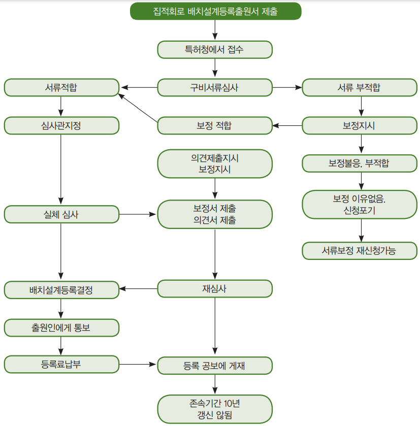
[그림 17] 집적회로 배치설계 등록출원 등의 절차도
3. 침해구제
가. 민사상의 보호
(i) 등록권자의 권리침해금지 청구할 수 있는 권리
배치설계의 등록을 받았을 경우, 그 등록권자는 자기의 승낙 없이 타인이 다음에 드는 행위를 실시하는 것을 금지할 권리를 가짐(동법 제178조의 2(4)).
- 보호 배치 설계의 전체 또는 그 일부에서 그 자신이 제178조의 2(1)(IV)에 규정하는 의미로의 독창성을 갖추고 있는 부분을 집적회로에의 구성 혹은 그 외의 방법으로 사용하는 것
- 상업적 목적으로 다음을 수입, 판매 또는 어떠한 형태로 배급하는 것
- 보호 배치설계
- 보호 배치설계를 사용한 집적회로, 또는 보호 배치설계를 위법으로 사용하고 있는 집적회로를 구성한 제품
나. 형사상 보호
집적회로 배치설계권을 침해한 자는 검찰청에 고소할 수 있음
다. 권리의 효력이 미치지 아니하는 범위는 어떤 것이 있나?
회로 배치의 등록에 의하여 주어지는 권리는, 다음의 경우 제3자에게 효력이 미치지 않음(산업재산법 제178조의 2(5))
- 개인적 목적 또는 평가, 분석, 조사 혹은 교육의 목적으로, 등록권자의 승낙 없이 보호 회로 배치를 사용하는 자
- 보호 배치 설계의 평가 혹은 분석의 결과로서 독창성 요건을 갖춘 배치설계를 창조하는 자
- 이러한 2차적 배치 설계의 창작자는, 본래의 보호 배치 설계의 등록권자의 승낙을 받지 않고, 자기가 창작한 배치 설계에 관해서 제178조의 2(4)에 규정하는 행위를 실시할 수 있음
- 공보에 등록의 공시일보다 전에 보호 배치설계와 동일한 배치설계를 독자적으로 창작하고 있었던 자
(i) 보호 배치설계
(ii) 보호 배치설계를 사용한 집적 회로, 또는 보호 배치설계를 사용하고 있는 집적회로를 구성한 제품
- 등록권자의 승낙을 받지 않고, 보호 배치설계를 위법으로 사용한 집적회로를 판매 혹은 배급하고 또는 이러한 행위를 명하는 자가 해당 집적회로를 취득한 시점에 그들이 보호 배치설계를 위법으로 사용한 것인 것을 알지 못하고 또한 합리적인 수단도 가지지 않았던 경우에 그들의 판매 또는 배급의 행위자
- 성실하게 실시하고 있는 제3자는, 보호 배치설계가 위법으로 사용되고 있다는 충분한 통지를 받은 시점으로부터, 기존의 상품 재고의 처분 또는 권리자의 통지 전에 받은 주문을 이행하는 것의 대가로서 해당 배치설계에 대하여 등록권자와의 합의에 의해 정해지는 라이선스 계약이 체결된 경우, 등록권자에게 실시료를 지급할 의무를 짐
본 조에 규정되는 행위를 실시하는 것은, 본 법의 의미로의 행정상의 법규 위반이나 범죄를 구성하지 않음
라. 집적회로 배치설계권 양도, 사용권설정이란?
특허제도와 동일(산업재산법 제178조의 2(7))
강제 사용권 제도는 인정되지 않음
마. 집적회로의 배치설계권 무효제도란?
- 무효사유는 특허의 무효사유와 동일(산업재산법 제178조의 2(2), 제178조의 2(8))
- 무효청구인 및 무효효과도 특허와 동일(산업재산법 제178조의 2(2), 제79조)
- 산업재산법 제80조(특허·등록의 소멸원인)에 반하여 등록된 경우도 무효 사유임
- 산업재산법 제81조(특허의 회복)의 규정에 반하여 등록된 경우도 무효 사유임(산업재산법 제178조의 2(8))
- 기타 무효청구 절차·효과는 특허무효 제도와 동일
바. 우리나라 제도와의 비교
우리나라는 반도체 집적회로의 배치설계에 관한 법률이 별도로 제정되어 있는데 대하여, 멕시코는 산업재산법에 규정하여 집적회로 배치설계를 보호하고 있음
제3절 지리적 표시
1. 정의
지리적 표시(Geographical Indications)란, 상품의 특정 품질, 명성 또는 그 밖의 특성이 본질적으로 지리적 원산지에서 비롯되는 경우, 그 지역 또는 지방을 원산지로 하는 상품임을 명시하는 표시임. 이를테면, 이산화탄소를 함유한 발포성 와인(sparkling wine)을 통칭하는 단어로 곧잘 쓰이는 ‘샴페인(Champagne)’은 프랑스의 샹파뉴(Champagne) 지역에서 생산되는 백포도주에만 붙일 수 있는 지리적 표시임. 지리적 표시는 출처표시기능, 품질보증기능 및 영업상 이익과 관련한 경제적 기능을 갖는 점에서 상표와 유사함. 하지만, 영업출처가 아닌 지리적 출처를 표시하는 점에서 상표와 큰 차이가 있음. 즉, 상표는 상품 또는 서비스를 제공하는 ‘특정 사업주체’를 식별시켜주는 표장인데 반해, 지리적 표시는 상품을 생산하는 사업주체들이 위치하는 ‘특정 지역’을 확인시켜주는 표장임. 때문에 지리적 표시는 상표처럼 한 개인이 다른 경쟁자들의 사용을 배재하면서 절대적‧배타적 사용권을 갖지 않음
2. 보호
멕시코는 지리적 표시와 관련한 별도의 등록․승인제도를 가지고 있지 않으며, 상표법상의 원산지 명치으로 보호하고 있음
원산지 명칭은 제품이 어디에서 생산되는지를 표시하고 그 제품의 특질이 지리적 환경, 다시 말해서 자연적, 인적 요소에 배타적으로 혹은 본질적으로 기인하는 국가, 지역 혹은 특별장소의 명칭으로 구성
PARTVII 산업재산권 분쟁
제1절 분쟁현황
1. 분쟁현황
멕시코 내의 지재권 침해의 문제가 심각해지고, 멕시코 통상국가 및 기업들의 압력에 따라, 멕시코 정부는 지식재산권법률의 처벌규정 및 형법의 직권기소에 관한 개정안을 상정하여, 2010년 4월 6일 의회에서 승인받았으며, 2010년 6월 29일 발효하였음
지식재산권법 제223조는 위조상표 판매자의 처벌규정임. 위조 상표를 표시한 물품을 거리 또는 공공장소에서 상업적 목적 및 고의로 최종사용자에게 판매하는 자에 대한 처벌을 최소 2년에서 최대 6년의 징역 및 일일 최저 임금의 최소 100배에서 10000배에 달하는 벌금을 부과하게 되어 처벌 규정을 보다 강화하였음
또한 형법 제429조의 경우, 위조 상표를 표시한 물품을 거리 또는 공공장소에서 상업적 목적 및 고의로 최종사용자에게 판매하는 경우, 저작권자로부터 승인받은 복제본 수량을 초과하여 생산하는 경우, 및 타인의 이름을 위조한 저작물을 발행한 경우는 직권으로 기소하여 죄를 물 수 있도록 강화하였음. 물론, 모든 지재권침해행위에 해당하지는 아니함. 예를 들어, 기 형성된 비즈니스거래에 의하여 위조된 물품의 판매, 수입, 배포, 저장, 및 운송이 이루어질 때 이를 형사처벌하기 위해서는 상표권자 및/또는 사용권자가 고소장을 제출하여야 함은 개정되지 않았음
상기 두 법령의 개정은 상표권자나 저작권자가 침해행위의 증거를 직접 채증하기 어려운 경우에 대해 대한 단속 및 기소를 정부에서 직권으로 함으로써 지재권 침해에 대한 보호장치를 보다 신속하고 효과적으로 하겠다는 방침이 반영된 것으로 볼 수 있음
[표 32] 멕시코 분쟁 신청 통계
출처: MEXICO BASHAM社 조사(2022.10.)
연도
분쟁 신청 건수
합계
무효
불사용
취소
침해
2020년
674
883
6
245
1,808
2021년
788
1,175
11
333
2,307
2022년 2T까지
497
805
2
272
1,576
멕시코 법원의 분쟁 판결 건수를 살펴보면, 2020년 1,131건, 2021년 1,573건, 2022년 2분기까지 1,374건이 발생됨
- 2020년에는 무효 431건, 불사용 421건, 취소 3건, 침해 276건이 발생
- 2021년에는 무효 581건, 불사용 686건, 취소 30건, 침해 276건이 발생
- 2022년 2분기까지 무효 477건, 불사용 625건, 취소 0건, 침해 272건이 발생
[표 32] 멕시코 분쟁 신청 통계
출처: MEXICO BASHAM社 조사
연도
분쟁 신청 건수
합계
무효
불사용
취소
침해
2020년
431
421
3
276
1,131
2021년
581
686
30
276
1,573
2022년 2T까지
477
625
0
272
1,374
제2절 분쟁제도
1. 사법적 분쟁 해결 제도
가. 형사상 구제방법
(1) 지식재산권 침해죄로 고소
특허권자 등 지식재산권자는 지식재산권을 특허권리자의 허락도 받지 아니하고 사용하거나 모방할 경우에 경찰서나 검찰청에 권리침해죄로 고소할 수 있음. 최종적인 판결은 연방법원에서 함
(2) 침해된 물건 몰수
지식재산권의 침해행위에 의하여 침해행위를 조성한 물건 또는 그 침해행위로부터 생긴 물건은 이를 몰수하거나 피해자의 청구에 의하여 그 물건을 피해자에게 교부할 것을 선고하여야 함
(3) 산업재산법 제223조의 범죄행위에 따른 구제
(i) 지식재산권의 범죄행위란?
산업재산법 제223조(II)(특허된 제품도 아닌데도, 특허제품인양 속이는 경우)에 제시된 행위로 인해 행정 처벌이 부과된 이후에도 이를 반복적으로 범하는 행위를 범한 자는 2-6년의 징역형과 멕시코시티에서 통용되는 일일최저임금 10~10,000배에 달하는 벌금을 부과함
(ii) 상표의 범죄행위
① 상표의 범죄행위
• 제213조 II~XXII(행정위반행위) 조항에 제시된 행위로 인해 행정 처벌이 부과된 이후에도 이를 반복적으로 범하는 경우(산업재산법 제223조 (I))
• 본 법에 의해 보호되고 있는 상표를 상업적 용도 및 고의로 위조하는 행위
• 본 법에 의해 보호되고 있는 상표를 위조한 상표를 표시한 물품을 상업적 용도 및 고의로 생산, 보관, 운반, 국내에 반입, 유통, 판매하는 행위와 본 법에 의해 보호되고 있는 상표를 위조한 상표를 표시한 물건을 생산할 목적이라는 것을 알면서도 이를 위한 원료나 재료를 제공 혹은 공급하는 행위(산업재산법 제223조)
② 처벌
• 3년내지 10년이하의 징역
• 멕시코시티에서 통용되는 일일 최저임금의 2,000-20,000배의 벌금을 부과(동법 제224조)
(iii) 상표를 고속도로 등에서 위조하여 사용하는 경우의 처벌
- 본 법에 의해 보호되는 상표를 위조한 상표가 표시되어 있는 물품을 고속도로나 공공장소에서 상업적 목적 및 고의로 최종 사용자에게 판매하는 자에게는 최소 2년에서 최대 6년까지의 징역과 멕시코시티에서 통상적으로 통용되는 일일 최저 임금의 최대 10만 배에 달하는 벌금을 부과할 수 있음
- 만일 그러한 판매 행위가 상업적 시설에서 조직적 혹은 지속적인 방식으로 이루어졌다면, 본 법의 제223조(범죄행위구성)와 제224조(벌금)에 따라 대한 처벌이 이루어짐(산업재산법 제223조의 2)
(4) 연방 법원의 관할
연방 법원은 범법 행위에 대한 사법권을 지니며, 본 법률의 시행과 관련하여 발생한 상업적, 민사적 분쟁이나 사전 예방 조치에 대해서도 사법권을 가짐(산업재산법 제227조).
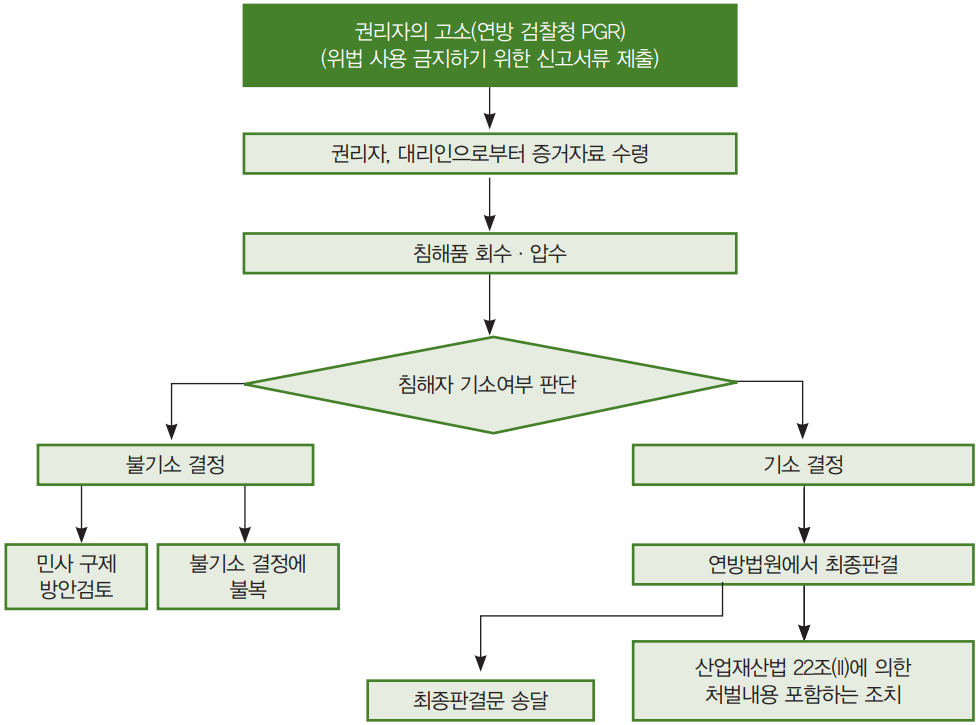
[그림 18] 형사상 구제절차도
나. 민사상 구제 방법
(1) 지식재산권 침해금지 청구 소송
지식재산권자는 자기의 권리를 침해한 자 또는 사용권을 침해한 자 또는 침해할 우려가 있는 자에 대하여 그 침해의 금지 또는 예방을 청구할 수 있음
(2) 손해배상 청구
지식재산권자 또는 사용권자는 고의 또는 과실로 인하여 자기의 지식재산권 또는 사용권을 침해한 자에 대하여 그 침해에 의해 자기가 입은 손해배상을 청구할 수 없음
(3) 가처분 신청
지식재산권자 또는 사용권자는 타인이 지식재산권자나 사용권자의 동의 없이 침해하는 경우에는 침해한 물건을 상대로 법원에 가처분을 신청할 수 있음
(4) 침해물 폐기 청구
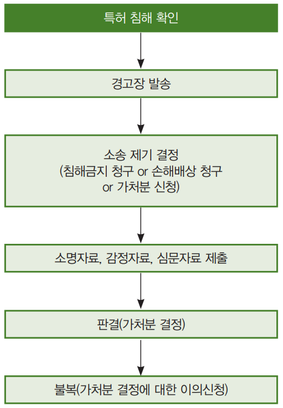
[그림 19] 민사상 구제절차도
다. 행정조치
(1) 법 제188조에 의한 행정상의 구제 (행정선언제기)
행정상의 구제는 특허청의 직권에 의하여, 또는 특허권자, 상표권자 등 이해관계인의 신청에 의해 조사가 진행됨(산업재산법 제188조)
(1) 행정상의 구제신청서에 기재할 사항
행정상의 구제 제기 서류에는 다음 사항을 기재하여야 함(동법 제189조).
• 신청인의 성명, 주소, 대리인이 있는 경우 대리인의 성명, 주소
• 침해자의 성명, 주소 대리인이 있는 경우 성명 및 주소
• 신청이유, 증거 및 법적 근거
• 침해자 또는 행정 위반자에게 전달할 사본도 첨부
(2) 서류보충지시 내용
특허청은 신청된 서류를 심사한 결과 누락된 서류나 증거를 제출하지 않은 신청인에게 누락된 서류나 증거를 보충하거나 사유서를 제출하도록 서류를 받은 날로부터 8일이내에 제출하도록 명함(동법 제191조)
(3) 침해협의자의 답변기회 부여
침해자는 특허청으로부터 송달된 행정구제관련 서류에 대해 특허권, 상표권 등을 침해하지 않았다는 설명서와 증거서류(특허공정과 다르다는, 구조가 상이하다는)를 제출하여야 한다(동법 제192조의2).
(4) 판결
특허청은 양 당사자에게 주어진 기간 경과 후에 특허권자, 상표권자 등과 침해자로부터 진술받은 내용과 증거를 중심으로 행정판결을 하여야 하고(동법 제199조), 판결문을 양 당사자에게 송달하여야 함
(5) 특허청의 조치
특허청은 침해와 관련된 행정구제신청의 판결에 의거 다음과 같은 조치를 취할 수 있음(동법 제192조의2)
• 침해품 유통금지 명령
• 불법으로 제조된 물건이나 사용된 물건유통 금지
• 침해한 상품의 마케팅 등 금지, 표시, 라벨사용 금지
• 침해행위 중단 명령
• 침해한 물건 몰수, 침해품 회수 명령
(6) 특허권자가 행할 조치
특허청은 조치명령을 하기 전에 특허권자, 상표권자 등 지식재산권자에게 다음 사항을 요청하여야 함(동법 제199조의2(1)).
① 일반 조치사항
• 권리침해 발생하였다는 사실
• 침해의 급박함의 이유
• 회복불응의 손실 가능성과 증거인멸 가능성의 설명
② 담보 및 역담보제공
• 침해자에게 손해발생에 대한 커버용으로 담보제공명령
• 침해자는 조치가 해제될 것에 대비 조치를 취하는 사람(특허권자)에게 발생할 수 있는 손해배상으로 역담보 제공 명령
(7) 침해자가 이의제기하는 방법
조치 명령이 취해진 침해자는 10일 내에 자신의 의견을 특허청에 제출할 수 있음(동법 제199조의2(2)). 특허청은 이의 제기에 의해 조치 기간을 변경할 수 있음
(8) 권리자의 손해배상 책임
신청인인 특허권자, 상표권자, 지식재산권자 등은 다음의 경우 침해자에게 발생할 수 있는 손해배상 책임이 있음(동법 제199조의2(3))
• 침해사실을 발견하지 못한 경우
• 예방조치 등 가처분조치가 행하여 졌고, 분쟁조정을 위해 조치시행개시 후 20일 내에 해당 관청이나 특허청의 권리침해에 대한 행정소송 등 이의신청 등을 청구하지 않은 경우(동법 제199조의2(3)(II))
(9) 최종판결시 취할 조치
(i) 담보물 반환
행정구제 절차가 해결된 경우 특허청은 예치된 담보물이나 역담보를 관련 당사자에게 반환하여야 함(동법 제199조의2(4))
(ii) 해제할 것인지 최종 판결
특허청은 권리 침해에 대한 행정구제제기 최종 판결에서 이미 취해진 조치들을 해제할 것인지 여부를 결정하여야 함(동법 제199조의2(4))
(iii) 화해유도
권리침해에 관한 행정구제 절차에 있어 특허청은 항상 관련 당사자간 화해·조정하도록 노력하여야 함(동법 제199조의2(8))
[그림 20] 특허청에 의한 구제절차(법 제188조)
라. 산업재산법 제203조에 의한 구제방법
(1) 특허청의 조사에 의한 절차
이는 권리자가 아닌 제3자가 특허침해, 상표 침해 등 행정위반을 한 경우 특허청의 조사 활동에 의거 특허나 상표권 등을 침해할 침해품의 단속 활동을 벌여 권리자를 구제하는 경우임. 이 경우의 목표는 침해품의 몰수에 있음
(2) 특허청의 조사, 단속활동
특허청은 특허품이나 상표 위조나 침해 여부에 관한 조사와 단속활동을 벌여 상거래 질서를 확립하여 거래 안전을 도모하여야 함. 이런 차원에서 특허청은 수시로 단속 활동을 벌이고 있음(동법 제203조)
(3) 침해자는 자료제출 의무
특허청으로부터 행정위반 협의가 있어서 산업재산법의 준수 여부와 관련하여 보고서와 정보제출의 요청을 받은 사람은 이러한 요청이 있은 후 15일 이내에 특허청에 이를 제출할 의무가 있음(동법 제204조)
(4) 조사는 특허청 직원
조사직원은 신분증을 지참해야 하고, 때로는 영장을 제시해야 함(동법 제205조)
(5) 조사시는 증인입회
조사 계획한 사람이 증인 지명을 거부한 경우 조사자가 2명의 증인이 입회한 상태에서 구체적으로 조사해야 함(동법 제208조)
(6) 침해협의자는 의견 진술
침해협의자는 조사관에게 협의에 대해 의견을 진술할 수 있고 증거도 제출할 수 있음(동법 제210조)
(7) 명백한 증거가 있는 경우
이 경우 제품을 몰수할 수 있음
(8) 조사 후 협의자에게 서명 요구
조사서에 서명을 요구하고 이를 거부한 경우라도 이 문서의 효력은 유지됨(동법 제212조)
(9) 몰수품의 처분은 어떻게 하나?
특허청의 조사 결과 행정위반이라는 최종판결이 있는 경우, 특허청은 당사자의 의견을 들은 뒤 몰수 물품의 처분을 결정하며, 이러한 결정은 다음 사항에 따름(동법 제212조의2(2))
•법원이 손해배상산정시 이용할 수 있게 함
•당사자간에 합의가 있으면 합의 조건에 의거 처분할 수 있게 함
•어떻게 처리할 것인가를 서면으로 제출하게 함
(10) 합의가 이루어지지 아니한 경우
특허청 이사회는 당사자간 최종 합의가 성립되지 않는 경우 다음의 결정을 할 수 있음(동법 제212조의2(2)(VI)).
• 연방행정기관, 주, 시 등 단체에 기부
• 몰수품의 파기
마. 산업재산법 제213조 행정위반에 따른 구제
(1) 행정위반사항
(i) 특허행정위반의 경우
본 법이나 본법을 기초로 한 다른 조항에 대한 행정위반은 다음과 같음(동법 제213조)
• 특허를 받지 않을 것을 특허받은 것처럼 가장하거나, 특허가 소멸하고 또는 무효가 확정된 경우는, 소멸일 또는 무효 확정일부터 1년이 경과한 후에 행정상의 법규위반이 성립됨(산업 재산법 제213조(II))
• 특허권이나 실용신안권 혹은 디자인권에 의해 보호되고 있는 상품을 이들 권리 소유자의 동의나 적절한 라이선스 없이 제조하거나 개발하는 경우(동법 제213조(탸)XI)
•특 허권이나 실용신안권, 디자인권에 의해 보호되고 있는 상품이 이들 권리의 소유자의 동의 없이 제조되었거나 개발되었다는 사실을 인지하고 있었음에도 불구하고 이들 상품의 판매 혹은 유통에 관여한 행위(동조(XII))
• 특허권자의 동의 없이 혹은 적절한 라이선스 허락을 받지 않고 특허 공정을 사용하는 행위(동법 제213(XIII))
• 특허권자나 사용 라이선스를 소유하고 있는 사람의 동의 없이 특허공정의 결과로 생겨난 상품이라는 사실을 알고 있었음에도 불구하고 이 상품을 판매하거나 유통시키는 일에 관여한 행위(동법 제213조(XIV))
(ii) 상표의 행정위반 행위(산업재산법 213조)는 다음과 같음
• 등록된 상표권에 의해 보호되고 있는 제품이나 서비스가 아님에도 불구하고 등록된 상표권에 의해 보호되는 것처럼 제품을 유통시키거나 서비스를 제공한 경우; 상표권 등록이 만료되었거나 무효, 혹은 취소된 경우, 취소나 무효 이후 1년 후에 침해행위가 있어야 함(산업재산법 제213조(III))
• 등록된 다른 상표권에 의해 보호되고 있는 제품이나 서비스와 동일하거나 혹은 유사한 제품이나 서비스를 보호하기 위해 다른 등록된 상표와 혼동을 일으킬 수 있는 상표를 사용하는 경우
• 등록된 상표를 상표권자의 동의나 해당 라이선스 없이 이 등록상표권이 적용되는 제품이나 서비스와 동일 혹은 유사한 제품이나 서비스에 사용하는 경우(산업재산법 제213조(XVIII))
• 등록 상표권자의 동의 없이 이 등록 상표가 상품에 사용되었다는 것을 알고 있었음에도 불구하고, 이 상품을 판매하거나 유통시키는 일에 관여한 행위
• 등록상표가 적용되는 상품을 변경한 상품을 판매 혹은 유통시키는 행위
• 등록 상표가 적용되는 상품을 일부 혹은 전체를 변경한 뒤 등록 상표를 삭제하거나 혹은 다른 상품을 대신하여 놓은 상품을 판매 혹은 유통시키는 일에 관여하는 행위(동법 제213조(XX))
(2) 행정위반신청인은 누가 될 수 있나?
행정위반에 관한 조사는 해당 기관의 직권이나 이해 관계인의 요청에 의해 실시함(산업재산법 제215조)s
(3) 정상참작의 경우
행정위반사실이 조사를 벌일 정도의 중대 사안이 아닌 경우, 특허청은 침해 혐의자에게 침해 혐의에 관한 증거와 혐의 구성 요소와 함께 이 사실을 통지해서 10일간의 기간을 주어 자신의 이익을 최대한 대변할 수 있는 진술과 이를 뒷받침 할 수 있는 증거를 제시하도록 해야 함(산업재산법 제216조)
(4) 판결은 어떻게 하나?
특허청은 침해협의자에게 진술 보충기간 및 추가 기간이 만료되면, 특허청은 조사기록에 의거해 판결을 내리며, 만일 침해 사안의 특성상 조사기록이 없는 경우에는 파일에 있는 내용에 기초해 관계 당사자들이 제시한 진술과 증거를 고려해 판결을 내려야 함(산업재산법 제217조)
(5) 과태료 3배 초과 금지
두 번째 위반행위나 혹은 연이은 위반 행위에 대해서는 이전에 부과된 벌금의 두 배의 벌금이 부과되지만, 제214조에 정한 최대 과태료 액수의 3배를 초과할 수는 없음(산업재산법 제218조). 본 법과 본 법에 기초한 다른 조항의 취지상, 두 번째 혹은 연이은 위반 행위는 동일한 조항을 연이어 위반한 경우를 가리키며, 이 반복 위반이 첫 번째 위반행위에 대한 판결이 내려진 이후 2년 이내에 다시 위반한 경우에 한함(동법 제218조)
(6) 처벌내용은 어느 정도인가?
(i) 과태료 등 부과
본 법이나 본 법을 기초로 한 다른 조항에 대한 행정 위반은 다음과 같은 처벌을 받게 됨(산업재산법 제214조)
•멕시코시티에서 일반적으로 통용되는 일일 최소 임금의 최대 20,000배에 해당하는 과태료
•추가적으로 침해 행위가 지속된 일 수 각각에 대해 멕시코시티에서 일반적으로 통용되는 일일 최소 임금의 최대 500배에 달하는 과태료
•최대 90일간의 휴업 처분;
•영구 휴업 처분;
•최대 36시간에 달하는 행정 구류 처분
(ii) 휴업명령
벌금이 부과되었거나 부과되지 않은 위반 행위에 대한 판결에서 휴업을 명할 수 있음. 위반 장소가 달라졌는지의 여부와 상관없이 2년 동안 위반 행위가 반복되어 두 번의 일시 휴업 명령을 위반한 경우, 영구 휴업의 대상이 됨(산업재산법 제219조)
(iii) 하나 이상이 침해된 경우 과중처벌
본 법에 따라 산업재산권 하나 이상이 침해된 사건에 대해 본 법이 정한 권리 침해에 따른 피해 배상이나 물질적 손해의 보상은 어떤 경우라도 제품 각각의 판매가 혹은 서비스 공여 금액의 40% 이하이어서는 안됨(동법 제221조)
2. 수출입단계(세관) 분쟁해결 제도
멕시코 관세법은 외국으로 반입되는 위조 상품을 적발하는데 필요한 법적 규정이 없기 때문에 비공식적으로 미리 지식재산권으로부터 정보(예컨대 지식재산권자 성명, 주소, 특허·상표 등, 등록번호, 명칭, 연락처, 전화 등)를 받아 데이터베이스를 구축하고 있다가 위조상품이 적발되면 통관보류나 유치(留置)하고, 이를 지식재산권자에게 신속히 연락하여 압류 등 조치를 취할 수 있도록 하여야 함. 관세청은 위조 상품을 압류조치 할 권한이 없기 때문임. 반면, 우리나라 관세법 제235조에는 지식재산권을 침해한 물품을 효율적으로 단속하기 위하여 필요한 경우 지식재산권자 등으로 하여금 해당 지식재산권에 관한 사항을 신고하게 할 수 있음
세관장은 신고 된 지식재산권을 침해하였다고 인정하였을 때에는 그 지식재산권을 신고한 자에게 해당 물품의 수출입, 보세주역반입, 보세운송 또는 일시 양육의 신고 사실을 통보하여야 함. 이 경우 통보를 받은 자는 세관장에게 담보를 제공하고 해당 물품의 통관보류나 유치를 요청할 수 있으며, 세관장은 특별한 사유가 없으면 해당 물품의 통관보류나 해당 물품을 유치할 수 있음. 이 경우 세관장은 해당 물품의 수출입신고 등을 한 자에게 그 사실을 즉시 통보하여야 함. 지식재산권자는 신속히 세관으로부터 통보받은 즉시 압류 조치 등 법적 조치를 취하여야 함
[그림 21] 통관보류 절차도
3. 조정·중재 등 대체적 분쟁해결(ADR) 제도
특허권자와 실시자가 상호 제시한 로열티 제안에 합의하지 못하는 경우 앞서 살펴본 것처럼 소송으로 이어지는 경우가 대부분임. 그러나 당사자 간의 동의가 있는 경우에는 재판 외 분쟁해결 제도(ADR: Alternative Dispute Resolution)을 통해 해결하는 것이 가능함
ADR은 소송에 비해 낮은 비용으로 빠르게 분쟁을 해결할 수 있다는 장점이 있으며, 특히 표준특허 라이선스에서는 매우 많은 수의 특허에 대한 검토가 필요하기 때문에, 소송에서 많은 시간이 소요될 수밖에 없으므로, ADR은 효과적인 분쟁해결 방법이 될 수 있음
[표 34] 재판 외 분쟁해결절차의 장점
재판외 분쟁해결절차의 장점
(1) 소송보다 절차진행이 신속하고 경제적이어서 시간과 비용을 절약할 수 있음
(2) 절차의 진행이 법에 묶이지 아니하여 탄력적이며, 특히 엄격한 소송절차법칙이 적용되지 않음
(3) 절차진행이 비공개적이기 때문에 기업의 비밀이나, 개인의 이익이 잘 보호됨
(4) 법원 판결에 비해 양 당사자가 법률쟁점에 관한 법률 이외의 다른 경제적, 영업적 이익을 고려하여 모두에게 좀 더 유리한 방향으로 결정될 수 있도록 탄력적인 기준을 적용함
그러나, 일방이 ADR 절차를 이용하고자 하는 요청을 하였는데, 상대방에서 이를 거절한다고 하여서 협상에 성실하게 임하지 않았다고 판단되지는 않으며, 대부분 경우 특허권자가 ADR 절차를 통해 해결하는 것을 선호하지 않기 때문에, 현실적으로 ADR을 통해 분쟁이 해결되는 경우가 많지는 않음
가장 대표적으로 WIPO(World Intellectual Property Organization)는 ADR을 위하여 WIPOAMC(Arbitration and Mediation Center)를 운영하고 있다. WIPO AMC 홈페이지에 접속하면, 아래와 같이, WIPO의 ADR과 관련된 다양한 정보를 얻을 수 있음
[그림 22] WIPO의 Arbitration and Mediation Center 홈페이지
가. 재판상 화해
재판상 화해는 법원이 선임하는 특별행정 판사가 관여하여 양 당사자간의 합의에 의해 화해로서 소송을 종료시킴. 일반적으로 소송 담당 판사가 제안하거나 양 당사자의 신청에 의해 재판상 화해 절차가 진행됨
나. 조정(Mediation)
조정은 분쟁의 해결을 위해 판사 및 특별한 지식과 경험이 있는 자를 조정인으로 두고, 법원을 대신하여 양 당사자의 주장을 서로 양보하게 하고 필요한 경우 자신의 조정의견을 제안하여 당사자를 설득하고 그 합의로써 분쟁을 원만한 해결로 이끄는 절차임
- 조정을 하게 되는 경로는 1) 당사자간의 계약서에 포함된 조정 조항(Mediation Clause)에 의해 조정이 미리 합의된 경우, 2) 분쟁 발생 이후에 당사자간 자발적인 합의(Voluntary Agreement)된 경우, 및 3) 법원의 명령 또는 권고(Court-ordered or Referral)에 의한 경우의 3가지가 대표적임
다. 중재(Arbitration)
중재는 분쟁 당사자간의 합의에 따라 제3자(중재인)을 선정하여 중재인의 판정에 복종함으로써 분쟁을 최종적으로 해결하는 절차임. 중재는 재판에 의해 분쟁을 해결하지 않더라도 당사자를 구속하기 때문에 당사자가 중재절차에 따를 것을 합의한 경우에 가능함
- 다만, 특허사건의 경우 특허의 유효성이나 침해 문제는 전문적이고 복잡한 판단이 필수적이므로 이러한 절차 없이 제3의 중재인이 판사 역할을 대신하여 중재 결정을 내리는 중재제도는 상대적으로 중재 절차에 부적합한 것이며 재판상 화해나 중재제도를 이용하여 당사자간에 탄력적인 조건으로 협상을 하는 것을 선호하는 편이며, 상표침해사건에서는 재판상 화해, 조정, 중재제도 모두 빈번히 이용되고 있음
제3절 분쟁 대응 전략
1. 침해 발생시 주요 단계별 대응 방안
가. 근본적 대응 전략
외국에 수출을 많이 하는 기업일수록 특허 분쟁이 언제, 어떻게 발생할지 예정해 두지 않으면 안됨
(1) 연구개발 투자 확대
연구개발투자는 국내 기업 간은 물론 국제 기업 간의 경쟁력에서 우위를 선점하는 하나의 지표가 되며, 이 연구 개발에 의해 얻어진 개발품을 지식재산권화하여 특허권을 많이 확보하는 것이 가장 시급한 과제라 할 것임
(2) 특허전문가 양성
선진국의 강력한 특허 공세에 유효히 대처하기 위해서는 지식재산권전문가 양성 및 확보임. 전문가를 3가지 측면에서 살펴보면 기술전문가, 특허법률 전문가, 외국어를 자유자재로 구사할 수 있는 외국어 능통자 등을 들 수 있음
- 특허전문가 확보는 외부에서 영입하는 경우와, 자사에서 양성하는 경우가 있는데, 장기적인 관점에서 특허전문가를 양성하는 길이 경제적이고 능률적인 효과를 가져온다고 봄
- 우리나라 기업도 적극적으로 전문가를 양성하기 위해 해외에 장기간 연수파견하는 등 어느 정도 전문가를 확보하고 있는 기업이 상당수에 이름
(3) 특허분쟁 대응체제 구성
전담부서를 설치하여 국제특허 분쟁에 대비하여야 함. 특히, 수출품목의 특허동향, 수출대상국의 특허조사, 분쟁가능성에 대한 대비, 상대 국가의 특허제도, 법률제도, 관세제도 등 자료의 확보, 특히, 분쟁이 예견되는 품목에 대해서는 모의재판을 통해 쟁점파악능력 및 협상력을 강화시킬 필요가 있음
나. 사전 대응 전략
국제특허분쟁의 예방을 위해 가장 좋은 방법은 사전에 미리 대응책을 강구하는 것이 피해를 최소화시키는 길임. 국제특허분쟁 예견되는 품목에 대해서는 미리 다음의 점에 유의하여야 함
(1) 선행 기술 조사
선행 기술의 조사 결과 저촉가능성이 있는 경우에는 회피설계를 적극적으로 개발하고, 이것이 여의치 아니할 경우에는 라이선스의 협상이 필요함. 과거의 패턴이「선생산, 후특허」관행이 특허 분쟁을 촉발하여 많은 피해를 입은 점을 고려하여「선특허, 후생산」의 원칙이 철저히 지켜져야 할 것임
(2) Patent Map (PM)활용
특허기술별로 체계적으로 정리한 정보를 가공분석하는 PM 활용이 필요함
(3) 특허권자의 특허약점 이슈화
(i) 특허약점의 발굴
침해협의자는 특허권자의 특허약점을 발굴하여 이를 무기로 삼아 적극적으로 활용할 필요가 있음. 특허권자는 특허취득과정에서 IDS제출여부, 이의 위반여부, 선서서 위반, Un-clean Hands(부정한 방법으로 특허 취득한 당사자), 표준특허공개의 의무위반, 시효 경과여부, 해태, 표준특허공개의무위반, 선발명 여부, 특허의 남용 여부, 독점금지 품목 여부 등을 검토하여 특허권자의 공격에 대응하여야 함
Un-clean Hands는 특허 취득 과정에서 신의성실위반, 공정하지 못한 방법으로 특허를 취득했기 때문에 공평한 구제, 공평한 방어를 주장할 수 없다는 것으로 그러한 당사자를 Un-clean Hands라고 하며, 공평하고, 신의성실원칙에 위반한 자로 판단하면 특허권을 행사할 수 없게 됨
(ii) 무효자료 발굴
특허의 최대약점은 특허와 동일·유사한 자료를 발굴하는 데 있음
(4) 특허권자의 의중조기 입수
국제특허 분쟁의 예방은 특허권리자의 의중을 조기에 입수하는 것임. 미국 등 선진국들은 경고장에 대한 응답기간이 짧기 때문에 대응할 시간이 많지 않음. 따라서 특허권자의 의중을 조기에 파악하여 대응 전략을 세워야 함
다. 사후 대응전략
(1) 경고장 분석
특허분쟁은 특허권자로부터 경고장을 받았을 때부터 시작됨. 경고장 분석을 통해 대응전략을 세워야 함
•자사제품이 특허권에 저촉되는가 여부
•특허무효자료 조사하여 특허유효성 판단
•특허권자의 의중이 무엇인가
(2) 침해협의자의 제품과 특허권 저촉 여부 판단
경고장을 받은 자는 객관적이고, 제3자적인 입장에서 냉철히 자사제품이 과연 특허권에 저촉되는가를 파악해야 함
- 특허권자가 경고장을 발송할 정도라면 어느 정도 특허권을 침해했다고 보고 경고장을 보낸 것이므로 회신내용은 앞으로 진행될 가능성이 있는 소송내용과 일관성을 유지하도록 신중을 기해야 함
(3) 전담팀 구성
국제특허분쟁은 국내 특허분쟁에 비해 규모가 크고 외국에서 이루어지므로 분쟁대응에 어려운 점이 많음. 따라서 국제특허분쟁 전담팀을 국내와 국외에서 각각 구성하여 대응하여야 함. 대응은 전문 변리사나 전문 변호사가 수행해야 하므로 전문적이고, 경험이 많고, 변리사가 많은 대형 로펌을 선정하는 것이 유리함
(4) 특허의 무효여부판단
확보한 자료와 특허내용을 검토하여 특허의 유효성여부를 판단하여야 함
(5) 영업적인 측면에서 검토
침해협의자는 특허권자로부터 경고장을 받으면 당황할 수 밖에 없고, 특히 침해 소송이 제기되면 영업적으로나 경제적으로 타격을 받을 수 밖에 없음
- 따라서, 침해 소송이 제기하기 전에 중요고객에 미치는 영향을 검토해야 함. 고객은 분쟁에 휘말리는 것을 원치 않으므로 특허 분쟁이 해결될 때까지 구매를 중단할 수 있음. 따라서, 고객의 동향을 예의주시해야 하고, 특히 분쟁으로 고객이 떨어지지 않도록 노력해야 함
(6) 경제적인 측면에서 검토
침해 협의자는 특허권자와의 협상에서 경제적 측면을 가장 중요시 해야 함. 소송비용, 특허권자의 요구액, 제품원가 및 영업손익에 미치는 영향을 검토해야 하고, 협상가능 수준의 특허료를 어느 정도로 산정할 것인가 여부는 특허권자가 수용할 수 있는 수준이 될 것임. 또한 특허권자가 이미 다른 협의자와 라이선스 계약을 맺고 있는 경우는 이것이 협상에 하나의 참고가 될 것임
(7) 특허권자의 의도 파악
(i) 로얄티에 관한 경우
특허 분쟁 해결의 또 하나는 특허권자의 의도 파악임. 물론 누구나 최종목표는 손해배상금 수령에 있지만, 다음의 점에 유의할 필요가 있음. 로얄티 액에 의도가 있다면 적정한 로얄티 협상을 통해 소송을 피하는 것이 유리함
(ii) 시장 독점이 의도인 경우 회피 설계
특허권자의 의도가 시장 독점에 목적이 있는 경우에는 특허권의 효력이 미치지 않도록 회피 설계를 신속히 개발하여 대응하여야 함
(8) 최종 대응 방안 결정
경고장을 수령한 자는 지금까지 조사 분석한 자료를 종합적으로 판단하여 특허분쟁을 재판에 응소할 것인지, 협상에 의해 종결할 것인지를 조기에 파악하여 결정하는 것이 소송비용의 면이나, 로얄티 등 비용을 최소화하는데 유리함
라. 협상의 전략
(1) 전문가가 앞에서 주도
협상의 주체는 1인이어서는 아니되고, 최소 3명 이상으로 구성해서 특허권자와의 협상에 대응하여야 함. 협상자는 기술전문가이자 특허전문가, 법률전문가, 언어 능통자 등 3인이 주체가 되어 협상에 응해야 함
(2) 지금까지 수집한 자료를 암기
협상의 가장 큰 무기는 특허의 약점을 특허권자에게 제시하는데 있음. 침해협의자는 특허권자에게 특허의 약점을 조목, 조목 제시하여 강력하게 주장을 펴서 특허권자가 대응 못하도록 하여야 함
(3) 특허권자의 주장내용을 미리 체크
협상 전략은 미리 특허권자의 침해주장논리를 구체적으로 1문 1답식으로 만들어 특허권자의 주장을 약화시켜야 함. 미리 특허권자가 주장할 내용을 미리 체크하여 공격할 때마다 준비한 자료로 정면으로 맞받아치면 특허권자의 기를 약화시킬 수 있기 때문임
(4) 대응은 집요하고 논리정연하게
특허분쟁은 항상 특허권자에게 유리하게 진행되는 것이 일반적이나, 특허권자의 구체적 논리에 빠져들게 되면 특허권자의 요구가 한층 강해지는 점을 고려하여 침해협의자도 지금까지 준비한 자료를 가지고 강력하고 집요하게 특허권자를 공격해서 기를 죽여야 함. 비록 승산이 적다 하더라도 끈질기게 약점을 공격하다 보면 상대방도 당황하게 되는 경우도 많고, 강력한 대응 수단이 상대방의 자신감을 약화시키고 리스크를 증대시키기 때문에 해결의 실마리를 찾을 수 있음
(5) 승산이 높은 사건일수록 더욱 철저히
침해협의자는 승산이 높다고 판단되면 될수록 리스크를 고려하지 않는 경우도 있을 수 있으므로 소송비용문제, 고객이 입는 피해문제, 장기간 진행으로 인한 자신감 상실 문제, 다른 일의 지연으로 인한 리스크문제 등을 고려하여 아주 적은 액수로 협상을 종결하는 것도 고려해야 할 것임s
마. 다른 법률에 의한 특허 규제의 전략
(1) 독과점법에 의한 특허규제방안
(i) 독과점법과 특허법의 충돌
독과점법은 사업자의 시장지배적 지위의 남용과 과도한 경제력의 집중을 방지하고 부당한 공동행위 및 불공정거래행위를 규제하여 공정하고 자유로운 경쟁을 촉진함으로써 창의적인 기업활동을 조장하고 나아가 소비자를 보호함과 동시에 국민경제의 균형있는 발전을 도모함에 있음. 이에 대해 특허권은 독과점법과 정반대의 성격인 독점배타적으로 권리를 실시하는 권리라는 점에서 양 법은 항상 충돌하고 있고 또한 멕시코 헌법 제28조에 「저작권과 특허권에 부여된 권리행사는 독점에 해당하지 않음.」으로 규정되어 있어서 이의 조화를 여하히 운영하느냐도 하나의 문제라고 할 수 있음
(ii) 국가 및 공익이 우선이냐, 사익이 우선이냐
양법의 충돌을 규제·조정하는 방법은 법원의 판결에 의존할 수 밖에 없다고 보여지지만, 독과점법의 최종목적은 국민과 기업을 보호하여 국민경제의 균형있는 발전을 도모함에 있고, 특허법 등 지식재산법은 특허권자의 사익을 보호하는 법이라는 점에서 양자의 합의점을 찾아야 함. 물론 특허에 있어서는 국가의 빅 카드로 강제실시권을 활용할 수 있으나, 이 실시권제도도 여러 가지 제약이 있어서 양법의 조정자 역할을 하는데 한계가 있음. 그러나, 국가의 이익이냐, 개인의 이익이 우선이냐 하는 명제를 가지고 그 보호범익이 어느 정도인가에 초점을 맞춰 합의점을 찾는 것도 고려해야 함
(2) 부정경쟁방지법에 의한 특허규제
부정경쟁법도 위의 독과점법의 목적과 마찬가지로 부정경쟁행위를 방지하여 건전한 상거래질서를 유지하기 위한 것이라는 점에서 독과점법의 목적과 같음. 특허권자, 지식재산권의 권리를 독점 사용할 수 있는 권리를 이 부정경쟁 및 영업 비밀 보호에 관한 법률(이하 부정법)로 규제하는 데도 여러 가지 한계가 있음
- 부정 경쟁방지법도 공익을 보호하기 위한 법이지만 특허법은 특허권자 개인의 사익을 보호하는 점에서 양자의 차이가 극명하게 나타나나, 이를 여하히 조정하느냐가 관건임
바. Patent trolls(특허 괴물) 특허에 대한 대응 전략
(1) Patent trolls의 행태
Patent trolls 회사는 통상의 기업과 같이 종업원이 창작하여 얻어진 특허를 소유하고 있는 기업이 아니고, 부동산 투기꾼과 같이 자금력을 이용하여 사용하고 있지 아니한 특허들을 저렴한 가격으로 매입하고 유사하게 제조·판매하고 있는 기업을 조사하여 이들에게 압박을 가하여 많은 실시료, 손해배상금을 받아내는 회사들이기 때문에 현실적으로 많은 문제점을 안고 있음
(2) Patent troll에 대한 대응 전략
Patent troll 회사도 특허권자이고 침해 물품을 강제집행할 권한도 있으므로 이 권리를 제한하는 데에는 앞의 독과점법에서 설명한 바와 같이 어려운 점이 많음. 그러나 이 문제에 있어서도 권리행사가 합리적이냐, 국가 및 공익이 우선이냐 기술개발 저해냐 등 제반 사항을 고려하여 Patent troll의 권리행사를 규제할 필요가 있는가도 검토해야 할 것임
- 분쟁이 발생하면 침해 협의자는 분쟁 방지에 최선의 노력을 경주해야 하고, Patent troll 회사에 적은 금액을 지급하고 화해하는 등 협상능력을 총동원하여 손해를 줄이는 방법을 택해야 할 것임
사. 침해입증부담
침해입증부담은 침해의 형태에 따라 다름. 따라서 이에 대하여 설명하면 다음과 같음
(1) 지식재산권이 유효하다는 주장은 특허권자 등이 입증 부담
특허 등 지식재산권 침해입증 부담은 원칙적으로 침해 주장한 지식재산권자가 침해 사실을 입증하여야 함. 특허권 등 권리자가 멕시코 특허청, 법원 등에 권리구제 소송을 제기하면서 침해했다는 증거를 제출하지 않으면 관계기관으로부터 받아들이지 아니하고, 오히려 패소하게 됨
(2) 침해협의자가 입증해야 할 사항
한편, 상대방(침해자 등)은 권리자가 제출한 침해 증거자료를 검토한 결과 신뢰할 수 없다고 주장할 경우에는 그에 따른 입증을 하여야 함. 예컨대 지식재산권이 출원전 공지, 공연되었다든가, 특허나 등록될 수 없는 사유에 해당되는 경우 등의 침해입증 부담은 침해자에게 있음
(3) 특허청의 침해입증 부담의 경우 (법 제192조의2)
특허청은 직권으로 지식재산권을 침해하였는지 또는 특허권의 행사가 법률의 범위내에서 행하고 있는지 수시로 조사할 수 있음. 이 경우에는 특허청이 침해하였다는 사실을 입증하여야 함
아. 개정된 산업재산법에 따른 상표 침해 방지 전략
한국 본사의 상표권을 보호하는 가장 좋은 방법은 상표를 선등록해 지속적으로 모니터링하는 것임. 해당 국가에 상표를 먼저 등록한 소유권자만이 상표 관련 모든 권리를 행사할 수 있으며, 관련된 법적 보호를 받을 수 있기 때문임
최근 개정된 산업재산법에 따라 다음과 같은 방법으로도 상표 침해를 방지 할 수 있음
첫째, 상표출원 신청 시 이는 특허청의 웹 페이지에 공개되며 이해관계에 있는 제3자는 한 달간 이의제기를 할 수 있음. 즉, 본인의 상표와 음성적 또는 시각적으로 유사해 타인에게 혼동을 야기할 수 있는 경우, 또는 해당 법령에 저촉되는 요소를 포함하고 있다고 판단되는 경우에 제3자는 상당한 이유를 근거로 특허청에 해당 상표 등록의 반려를 요청할 수 있음
둘째, 상표 등록 후 매 3년간 실제로 상표를 사용하고 있음을 증명하는 사용신고를 해야함. 만약 상표소유권자가 지난 3년간 상표를 사용했음을 증명하지 못한다면 해당, 또는 유사 상표를 사용하고자 하는 이해관계의 제3자가 해당상표권의 소멸을 주장할 수 있으며, 특허청의 판단에 따라 해당 상표등록이 취소될 수 있음
상기 이유로 한국 본사는 해당 국가에서 자사의 상표등록을 우선적으로 진행해야 하며 지속적으로 모니터링해야 할 필요가 있음
또한 상표권의 소유자는 라이선스 계약(Lisence Contract)을 통해 사용자와의 권리 및 의무 관계를 명확히 함으로써 법적 분쟁의 소지를 줄일 수 있음. 한국 본사는 라이선스 계약을 통해 현지법인 또는 현지딜러에게 자사의 상표권 사용을 허가할 수 있으며, 만약 필요한 경우에는 현지법인 또는 현지 딜러가 2차 라이선스(Sublisence) 계약을 통해 기타 딜러들에게 상표 사용을 허가할 수 있음 라이선스 계약서에서는 광범위하고도 구체적으로 상표 사용에 관한 권리와 의무를 명시함으로써 상표의 오남용을 예방하고 상표의 가치를 보호할 수 있음
만약 현지에서 딜러 또는 제 3자에 의한 상표권 침해사실을 인지했을 경우에는 법적 및 행정조치를 취할 수 있음. 세부적인 대응방식은 구체적인 사실관계에 따라 상이 하지만 일반적으로는 상표등록 무효심판청구외에도 특허청의 단속 및 자산 압류, 과태료 징수, 침해 품목 유통금지 및 회수, 영업정지, 광고금지 등의 행정조치를 취할 수 있음 또한 상기 행정조치에도 불구하고 침해 사실이 계속되는 경우에는 산업재산법 제223조 및 형법 제337조(멕시코시티)에 의거해 형사처벌까지도 적용 가능함
2. 멕시코의 사법기관의 증거 인정 수준
가. 일반적인 수준
멕시코의 사법기관의 증거 인정 수준은 사안에 따라 다르나, 우리나라의 사법기관에 비해 증거 인정 수준이 높다고 할 수 있음. 멕시코도 증거주의를 채택하고 있으므로 우리나라와 비슷하거나, 멕시코 특허청은 우리나라보다 더 강력한 행정위반에 대한 준사법권을 가지고 있으므로, 특허청에서 조사한 증거자료들을 사법기관에서 그대로 받아들이는 경우가 많기 때문임
나. 멕시코의 증거인정 수준
(1) 개인의 증언, 증인의 진술에 대해
행정위반에 따르는 침해, 지산재산권 무효, 취소 청구에 있어서 개인의 증언이나 개인 진술은 증거로 인정되지 아니하며, 또 도덕이나 법에 위배되는 증거는 인정되지 아니함
(2) 모든 증거는 공증을 받아야 하는가
국가나 공공단체에서 발행한 문서이외의 증거는 원본 또는 사본을 제출하되 최초 소장에 첨부하여 제출해야 하며 또 이들 원본이나 사본은 공증을 받아야 함
(3) 모든 증거는 소장과 함께 제출
우리나라는 증거자료를 소송이 종결되기 전까지 법원 등에 제출하면 되지만 멕시코는 소장 제출하기 전에 증거자료를 철저히 수집하여 소장과 함께 제출해야 함. 물론 연방민사소송법 제324절에는 예외가 있음
- 즉, 소장제출시에는 원고가 미처 알지 못했던 증거, 소장제기 후 최고의 주장을 반박할 수 있는 증거 등은 소송 중에 제출해도 됨
3. 멕시코 기업과의 로얄티 협상의 특징
멕시코는 국제특허 분쟁이 가장 빈번하게 발생하는 미국과 접경하고 있고, 또 거기에다 수출의 70%를 미국에 의존하는 나라이기 때문에 미국의 협상 전략과 비슷한 특징을 가지고 있다해도 과언이 아님. 멕시코 기업이 특허권자인 경우 최대한 로얄티를 받아내려고 모든 수단과 방법을 동원할 것이고, 그러하지 아니하고 멕시코 기업이 침해협의자인 경우는 그 반대의 특징이 나타날 것임
세계 모든 지식재산권자나 지식재산권 침해협의자는 지식재산권 분쟁이 공식적으로 소송제기 전에 당사자의 사전 접촉에 의해 분쟁을 해결하려고 노력하고 있음. 이는 당사자의 노력과 소송에 관련한 불필요한 비용을 줄일 수 있기 때문임
이와 관련하여 멕시코에서 일반적으로 실시되고 있는 3가지 협상 형태가 있음
가. 당사자 간의 공생을 위한 계약서 체결
이러한 종류의 협상은 상표 출원과 관련된 기소를 하기 전에 혹은 기소 중에 시도해볼 수 있는 협상으로서, 그 목적은 기존의 등록 상표와 혼동을 일으킬 정도로 유사한 상표의 사용과 등록을 허용하는 서면 문서(동의서 혹은 공존 합의서)를 체결하고자 하는 것임. 일단 이러한 문서를 얻게 되면(법이 정하는 형식에 따라 합법적으로 작성된 경우), 이를 MIIP에 제출해야 하고, MIIP는 이의 적합성을 판단해서, 그 결과에 따라 해당 등록을 인정할 것인지를 결정함
나. 권리자와 라이선스 계약체결
지식재산권 관련 분쟁을 사전에 방지하기 위한 최선책의 하나는 지식재산권자와 지식재산권과 동일·유사한 제품을 제조·판매하려고 하는 자 사이의 라이선스 계약을 체결하여 법적으로 실시·사용하는 길이 가장 안전한 길이기는 하나, 로얄티 등 문제가 있어 이 방법을 이용하는 데에는 일정한 한계가 있음
다. 분쟁의 원만한 해결
이는 소송전후를 통하여 당사잔 간 협상을 통해 분쟁을 원만하게 해결하기 위해 소송을 하지 아니하거나 소송중이라 해도 소송취하하여 해결하는 방법임. 그러나 이 방법도 로얄티 등 문제가 있어 당사 간에 합의를 이끌어내는 데에는 여러 가지 난관이 있음
이상 위에서 언급한 3가지 방법은 지식재산권자의 의중에 달려 있어, 당사자 간 서로 1보씩 양보하면 분쟁 협상도 쉽게 풀릴 수 있음
라. 멕시코 로펌의 참여시기
멕시코 뿐만 아니라 모든 국가도 마찬가지로 생각됨. 국제특허 분쟁이 발생하기 전부터 로펌이 국제특 허분쟁에 깊숙이 관여하여 소속기업에게 유리한 방향으로 소송전략이나 협상 전략을 기획하여 대체할 수 있어야 함
4. 소송비용 및 소요시간
일반적으로 소송은 많은 시간과 비용이 소모되나 분쟁 해결에 있어 최종적인 판단을 얻기 위해 종종 이용됨. 일반적인 지식재산권 소송에 있어서 구할 수 있는 판결로 금전적인 측면에서는 손해배상과 부당이득 반환의 두 가지를 들 수 있으며 둘 다 청구하는 것은 불가능함. 다른 나라의 일반 법원과 같이 멕시코에서도 소송에서 패하는 쪽이 승소한 쪽의 소송비용을 부담하게 되고 그 소송의 비용은 청구항의 수에 따라 달라지며, 또 일부 승소한 경우에는 승소비율에 따라 달라지기도 하므로 사안에 따라 소송비용은 천차만별임
하기는 멕시코 소송시 발생되는 비용임
[표 35] 멕시코 소송 비용
해외대리인(Basham, Ringe y Correa, S.C.) 자문
항목
수수료 (USD)
상표 출원을 거절하는 특허청의 결정에 대한 항소
900
상표 출원을 거절하는 특허청의 결정에 대한 연방 법원의 무효 소송
4,000
특허청에 의한 상표 출원의 거절에 관한 연방 법원의 결정에 대한 조치
4,500
연방 법원에 상표 등록 또는 상표 침해 소송의 취소와 관련하여 무효 또는 제3자 역할을 제기하는 행위
6,000
상표 등록에 대한 특허청에 대한 미사용 취소 소송 제기
4,000
임피야 특허, 발명 실용신안 인증서 또는 디자인 침해 또는 취소 소송 제기 또는 방어
9,000
저작권 침해 사무소에 제소 준비 및 제출
2,000
특허청, 저작권 사무소, 연방 법원, 연방 지방 법원 또는 순회 법원이 소송 중에 발행한 모든 사무 조치에 대한 보고서
250
특허청, 저작권 사무소, 연방 법원 또는 순회 항소 법원에서 소송 중에 발행된 최종 결정에 대한 보고서
600
법률 의견서 작성
350(시간당)
침해 물품의 압수
150(시간당)
공식 파일 검토 및 IMPI, 저작권 사무소, 연방 법원에서의 정보 수집
150
제4절 주요 판례 및 사례
1. 주요 판례
가. 멕시코 제18지구 항소법원, iFone社와 Apple社 간의 상표권침해소송에서 Apple社의 항소 기각
당사자
원고: Apple社
피고: iFone社
법원
멕시코 제18지구 항소법원(The 18th District Appellate Court on Administrative, 18° Tribunal Colegiado de Distrito en materia Administrativa)
사건의 경과
Fone社는 2003년에 멕시코 특허청에서 「iFone」 상표를 국제상품분류(NICE Classification) 체계상 제38류로 지정해 상표등록을 완료한 바 있음
- 제9류 : ① 과학, 사진, 영화, 광학, 계량, 측정, 신호 및 교육용 장비, ② 음향 또는 영상의 기록, 송신, 재생용 장치, ③ 금전등록기, 계산기, 정보처리장치, 컴퓨터 등
- 제28류 : 오락 및 놀이용구, 체조용품 및 운동용품, 크리스마스트리용 장식품
- 제38류 : 통신업, 방송업
한편 Apple社는 2007년에 멕시코 특허청에서 「iPhone」 상표를 국제상품분류 체계상 제9류 및 제28류로 지정해 상표등록을 하고, 2009년부터 「iPhone」 상품의 판매를 개시하면서 「iFone」 상표의 등록을 취소해 줄 것을 멕시코 특허청에 청구함
Apple社는 iFone社의 멕시코 등록상표인 「iFone」이 Apple社의 멕시코 등록상표인 「iPhone」과 발음이 유사하여 소비자들에게 혼란을 야기한다고 주장하며 「iFone」의 상표등록을 취소해 줄 것을 동 법원에 청구하였으나, 법원은 「iFone」 상표가 적법하게 등록된 것이라는 멕시코 특허청(IMPI)의 결정을 확인하고 Apple社의 청구를 기각함
Apple社는 멕시코 특허청의 결정에 불복하여 동 사건을 멕시코 항소법원에 항소했으나 멕시코 항소법원도 이번 판결을 통해 멕시코 특허청의 결정을 인정하고 Apple社의 항소를 기각함
한편 멕시코 항소법원의 이번 판결이 멕시코에서 Apple社의 「iPhone」 상품 판매를 금지하는 것은 아니며, Apple社는 이 사건과 상관없이 2012년 11월에 멕시코에서 「iPhone 5」 상품의 판매를 개시할 예정임
쟁점
상표권 취소소송
판시사항
2012년 10월 25일, 멕시코 제18지구 항소법원은 멕시코 iFone, S.A. de C.V(이하 ‘iFone')社와 미국 Apple社 간의 상표권침해소송에서 Apple社의 항소를 기각함
나. 멕시코 특허청, iFone社가 iPhone 판매 통신사에 제기한 상표권 침해주장 인정
당사자
원고: iFone社
피고: America Movil社, Telefonica社, Iusacell社
법원
멕시코 특허청(Mexican Institute for Industrial Property, IMPI)
사건의 경과
iFone社는 iPhone이 등장하기 전인 2003년에 멕시코에서 「iFone」상표를 등록하였으며, 멕시코 최대 규모의 통신사인 America Movil社, Telefonica社, Iusacell社가 휴대전화 가입 안내 광고 제목에 「iPhone」을 사용하는 행위에 대하여 상표권 침해를 주장함
Apple社는 2007년에 멕시코에서 「iPhone」에 대한 상표출원을 했으나, iFone社의 등록상표로 인하여 등록이 거절되었고, 그 후 Apple社는 iFone社를 상대로 명칭사용 중단을 요구하는 소송, 상표등록취소 등을 청구하였으나 모두 패소함
IMPI는 통신사 3社의 상표권 침해사실을 인정하였고, iFone社 측은 동 결정으로 토대로 America Movil社 등 3개 통신사를 상대로 법원에 손해배상 관련 민사소송을 제기하여, 손해배상액을 지급받음
쟁점
상표권 취소소송
판시사항
2014년 6월 6일, 멕시코 특허청(Mexican Institute for Industrial Property, IMPI)은 멕시코에서 통신 서비스에 대한 콜센터 사업을 하고 있는 iFone社가 현지의 3대 대형 통신사를 상대로 제기한 상표권 침해주장에 대하여 이를 인정하였으며, 「iPhone」용어를 사용하여 광고하는 행위를 즉시 중단하고, 104,000 달러를 배상하라고 결정
Amazon, eBay, Alibaba와 같은 주요 해외 전자상거래 플랫폼은 주로 IP 보호 플랫폼(ex.IPP)과 소유자 권리 인증 프로그램(ex. VeRo Program)등 약관 내외에 지식재산정책을 두어 지식재산분쟁 예방을 위한 가이드라인을 제공하고 있음
[표 29] 해외 전자상거래 플랫폼 주요 지식재산정책
출처 : 한국지식재산연구원
구분
내용
Amazon
● 판매자에 대한 지식재산정책 보유 (권리침해신고 프로세스 보유)
● 권리자에 대한 지식재산정책 보유 (권리침해신고 프로세스 보유)
eBay
● 소유자 권리 인증 프로그램 운영(VeRO Program)
● 침해청구 통지서(NOCI)를 플랫폼에 송부할 수 있음
Alibaba
● 소비자 약관과 별도로 지식재산정책을 보유
● 알리바바 그룹 산하 플랫폼(타오바오, 티몰, 1688, 알리익스프레스, 알리바바 인터내셔널, 라자다)을 포괄하는 지식재산 보호 플랫폼(IPP)을 통해 권리침해 신고 가능
2020년 산업재산법의 개정으로, 전자상거래에서 등록된 상표, 특허, 저작권을 침해하는 디지털 콘텐츠나 제품을 배포하는 경우 규제하고 처벌할 수 잇게 되었음. 해당 규정은 지재권 침해에 대한 의무적인 통지, 콘텐츠 삭제(take-down)의 조치를 포함함
제2절 아마존
1. 현황
아마존은 미국 최대의 E-커머스 기업으로, 2021년 기준 미국 전자상거래 시장의 41.4%를 점유하고 있음
- 1995년 온라인 서점 서비스 개시 이래로 평균 34% 매출 신장률을 보이며 미국 뿐 아니라 세계적인 인터넷서점 돌풍을 일으킨 이후 종합 전자상거래업체로 자리매김함
- 온라인 서점 서비스를 시작한 지 불과 몇 개월 만에 해외 배송에까지 확장, 도서에서부터 시작해 화장품/생필품/의류./소형전자제품/식품 등 제품 카테고리를 확대해 세상 모든 제품을 판매하는 ‘에브리싱 스토어(everything store)’로 진화
- 아마존 고유의 ‘최저가 알고리즘’에 의해 상시적으로 아마존 내에 판매되는 동일 상품의 가격뿐만 아니라 다른 쇼핑몰의 가격을 확인한 뒤 상품의 ‘최저가’를 변동하는 시스템을 특징으로 함
- 아마존의 경우 미국 내 거주하고 있지 않더라도 일정 등록 절차를 거쳐 국내에서도 셀러(Seller) 등록이 가능하며, 종합 물류 서비스인 FBA(Fulfillment by Amazon)을 제공하고 있기 때문에 미국 내 물류센터 이용이 부담되는 경우에도 이 서비스를 통해 물류 및 배송 관련 부분에 대한 부담을 덜 수 있음
아마존은 2015년 멕시코 전용 웹사이트 개설을 시작으로 멕시코에서 본격적인 사업을 시작했으며, 멕시코 시티 외곽에 3개의 물류센터를 보유하고 있음
- Euromonitor에 따르면 멕시코 전자상거래 시장 중 아마존이 11.8%를 점유하여 메르카도 리브레(Mercado Libre)에 이어 2위를 차지한 것으로 밝혀짐
아마존 멕시코는 보안상 이유로 자신의 주소지 노출을 꺼리는 멕시코인들의 생활습관을 고려해 구매자의 집으로 물건을 배달하는 대신 구매상품을 찾아갈 수 있도록 하는 영업로를 전국 각지에 마련한 것을 특징으로 함
*출처 : 어패럴뉴스, 월간원예, KOTRA, 조선일보, 글로벌이코노믹
2. IP 정책
아마존은 셀러들의 저작권, 상표권, 특허권(발명, 실용신안 특허, 디자인 특허 포함), 디자인권을 보호하고 있으며 IP 침해가 발생했을 경우 경고, 계정 일시 중지의 조치를 취할 수 있음
저작권 : 비디오, 영화, 노래, 책, 뮤지컬, 비디오 게임, 그림, 기술 기반 저작물(ex. 컴퓨터 프로그램) 등의 저작자의 원본 저작물을 보호함. UAE 저작권법에 따라 아마존은 원본 저작물의 무단 복사 및 사용, 관련 제품 무단 수입, 배포, 판매 제안을 금지하고 있음
상표 : 상표권은 상표권 소유자가 자신이 등록한 상표와 동일 또는 유사하여 고객이 혼동할 수 있는 상품 및 서비스의 상표 사용을 막을 수 있으며, 라이선스가 없는 제3자의 상표 남용으로부터 상품 및 서비스 판매자를 보호할 수 있음
- 상표권 침해 유형의 또 다른 예시로 위조품을 들 수 있음. 위조품은 제품 또는 포장에 등록 상표 또는 등록 상표와 유사한 마크를 불법적으로 복제하는 것이며, 아마존은 모조품 판매를 허용하지 않고 있음
특허 : 특허는 발명에 대한 법적 보호의 한 형태로, 등록된 특허는 일정 기간 동한 특허권을 부여한 국가에서의 발명 제조, 사용, 판매 제안, 판매 또는 수입하는 것을 배제할 수 있는 권리를 특허권 소유자가 독점적으로 보유하게 됨
- 디자인 특허는 제품의 독특한 외관에 대해 부여되지만 제품의 기능은 포함하지 않음
병행수입품 : 권리 소유자는 제3자가 동의 없이 제품을 유럽 경제 지역(EEA)으로 수입하거나 해당 제품을 재판매하는 것을 금지할 수 있음. 그러나 허가를 받아 EEA로 수입된 제품의 재판매를 금지할 수는 없으며, 병행 수입 상품이 IPR를 침해하는 경우 상표 또는 저작권 침해로 신고할 수 있음
아마존에서 모조품(counterfeit product)리포트 및 제거하기
- 지식재산권의 소유자 혹은 소유자로부터 통지 제출 권한을 얻은 대리인이라면, 아마존의 ‘온라인 침해 신고(Report Infringement)’ 기능을 이용해 상표·특허·저작권과 관련된 모든 침해 신고가 가능함
- 만약 타 셀러가 본인의 상표를 사용해 제품을 판매 중이라면 이 기능으로 신고할 수 있음
① IP침해 리포트 작성 : 모조품이 아마존 멕시코에서 판매되고 있는 경우 https://www.amazon.com.mx/report/infringement/signin 접속 -> Intellectual Property Infringement Report form 작성
② IP침해 유형 선택 : 모조품에 대한 신고는 Trademark concern → the product is counterfeit 선택. 저작권, 상표권 둘 다 침해당한 경우 개별로 리포트 하는 것이 권장됨. 또한 복수의 상표권이 침해당한 경우 각 상표권별로 리포트하는 것이 권장됨.
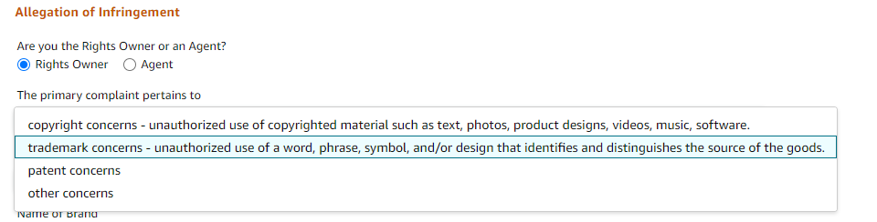
③ 브랜드명, 상표등록번호 입력, 빠른 절차 진행을 위하여 상표/저작권/특허에 관한 문서의 링크도 함께 첨부해야 함
④ 침해 상품 목록 작성 : 모조품에 대한 정보 입력시, ASIN(Amazon Standard Identification Number) 혹은 상품URL 기재할 수 있음. 50개까지 입력할 수 있으며, 같은 상품이라도 사이즈/색상 별로 ASIN이 다르기 때문에 기재한 상품과 ASIN이 일치하는지 확인해야 함. IP 침해 리포트를 제출할 때 해당 물품 ASIN을 모두 신고할지, 또는 특정 판매자만을 신고할 것인지 신고 범위를 선택할 수 있음
(※ 위 그림은 임의의 ASIN이며, IP침해물품의 ASIN이 아님을 유의)
⑤ 개인정보 입력 : 침해자(판매자)와 연락할 수 있는 연락처 입력
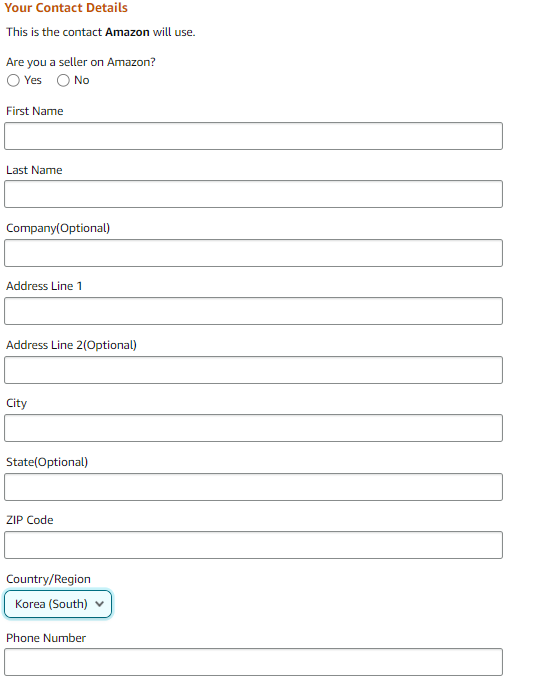
⑥ 절차는 일반적으로 1~3영업일이 소요되며, 그 이후에도 아마존에서 확인 이메일을 받지 못한 경우 리포트를 재제출하는 것이 좋음
*출처 : 아마존 멕시코, KOTRA
제3절 메르카도 리브레(Mercado Libre Mexico)
1. 현황
중남미의 아마존이라고 불리는 메르카도 리브레는 1999년 아르헨티나에서 설립된 후 현재 중남미 18개 국가에서 운영되고 있으며, 코로나19로 가장 큰 수혜를 입은 중남미 기업으로 손꼽힘
- 특히 2020년 메르카도 리브레의 소매 전자상거래 판매액은 전년대비 46.5% 증가한 205억 달러를 기록했으며, 작년 한 해에만 기업가치가 2배 이상 증가하는 쾌거를 거둠
- 메르카도 리브레는 코로나19 이전부터 메르카도 파고(Mercado Pago)와 같은 온라인 결제 시스템을 완비했고, 메르카도 엔비오스(Mercado Envios) 설립을 통해 중남미 물류 인프라에 집중적인 투자를 진행한 바 있어, 코로나19로 폭발적으로 급증한 수요에도 주문건의 50% 이상을 48시간 내에 배송 완료하며 중남미 소비자의 신뢰를 얻어낸 플랫폼임
- 메르카도 리브레는 웹페이지 속 웹페이지 형태로, 메르카도 리브레 플랫폼 안에 공식 판매몰을 구축함으로써 브랜드가 자체 웹페이지를 운영하는 동시에 대형 온라인 플랫폼의 고객들이 유입되는 효과를 누릴 수 있다는 특징을 보유함
Euromonitor에 따르면, 멕시코 전자상거래 시장은 메르카도 리브레(Mercado Libre)가 시장의 13.8%를 점유하여 1위를 차지하여 현지 온라인 플랫폼 시장을 선도하고 있음
*출처 : 외교부 라틴아메리카 협력센터, KOTRA
2. IP 정책
메르카도 리브레는 지식재산과 관련한 정책을 수립하여, 상표, 저작권, 특허, 실용신안, 산업디자인, 지리적 표시 및 원산지 명칭에 관련된 법률, 기타 IP 관련 규정을 침해하는 콘텐츠의 게시를 허용하지 않음
또한 메르카도 리브레는 IPR 소유자가 IPR을 행사할 수 있도록하는 브랜드 보호 프로그램(Best Protection Platform, BPP)를 운영하고 있음
- IPR권리자 혹은 그 대리인은 BPP에 가입하여 자신의 IP을 침해하는 콘텐츠를 신고할 수 있음
- IPR권리자의 신고가 들어갈 경우, 판매자의 판매가 일시 중단되어 판매자가 해당 신고에 대해서 응답해야 하며 신고에 응하지 않는 경우 판매 게시물이 영구 삭제될 수 있음
- 또한 판매자의 IPR 침해가 지속적일 경우, IPR 제품을 판매하는 계정 및 그 관련계정이 영구적으로 비활성화될 수 있음
- BPP 플랫폼 사이트 : https://global-selling.mercadolibre.com/brandprotection/enforcement
BPP에서 모조품과 모조품의 ASIN을 검색할 수 있으며, IPR 소유자는 해당 상품 판매 페이지 또는 리스팅에 대한 게시 중단 요청을 대량으로 신청할 수 있음
- 일단 게시 중단 요청이 들어오면 Mercado Libre측은 판매 리스팅을 일시적으로 중단하며 판매자는 4일 이내에 요청에 응답해야 함
- 게시 중단 요청이 진정한 것으로 받아들여지면, 메르카도 리브레측은 침해자의 계정이 제재를 받아야 하는지 여부를 결정해야 함. 이는 경고통지, 계정 일시 정지의 처분일 수도 있으며 판매자의 IP 침해가 지속적인 경우 계정이 영구적으로 폐쇄됨
□ 심사절차
*출처 : 메르카도 리브레, KOTRA
PARTIX 지식재산권 체크리스트
제1절 R&D 체크리스트
1. 특허출원 결정
번호
세부 항목
체크
1
유효한 특허를 받을 가능성을 평가했는가?
→ 연구초기단계부터 규칙적으로 평가하는 것이 필요
2
특허 보호의 범위에 대해서 평가했는가?
→ 특허청구범위가 너무 좁으면 회피하기가 쉬움
→ 특허청구범위가 너무 넓으면 자기특허가 무효가 될 수 있음
3
특허침해에 대해서 쉽게 알아낼 수 있는가?
→ 침해의 적발이 불가능할 경우 특허의 가치가 떨어짐
4
경쟁자가 활동하고 있는가?
→ 경쟁자가 동분야를 연구하고 있거나, 시장출시를 준비하고 있다면 가능한 빨리 출원하는 것이 필요
5
특허와 다른 지식재산권의 관계에 대해서 평가하였는가?
→ ex. 특허와 상표를 동시에 출원하는 것 검토 등
6
상업적 가능성과 수익이 ‘기술공개 및 특허비용 부담’을 정당화 하는가?
→ 특허보호비용(ex. 특허소송비용), 실질적 보호기간 검토 (기술수명과 관련) 검토
7
특허유지비용이 준비되어 있는가? (등록료, 연차료 등)
8
어떤 국가에서 출원할지를 결정하였는가?
9
경쟁자에게 미치는 영향에 대해서 평가하였는가?
→ 특허는 경쟁자에게 진입장벽으로 작용하기도 하지만 정보공개로 인해 경쟁자가 이를 활용할 가능성이 있음
10
상업화 의사가 없다면, 라이센싱 기회가 없는가?
→ 상업화 또는 라이센싱할 의향이 없을 경우 특허출원할 필요가 없음
11
발명이 공개되었는가? 상업적으로 사용되고 있는가?
→ 공개적으로 알려져서 혹은 사용되어서 특허받을 수 없는지 확인 필요
2. IP 출원 시 필요사항
권리
번호
세부 항목
체크
특허
1
출원 전에 발명이 공개된 경우, 공개 후 12개월 안에 출원하였는가?
→ 멕시코의 공지 예외신청기간은 12개월임
상표등록의 출원이 2인 이상의 공동출원인 경우, 해당 상표의 사용과 라이선스 허락 및 해당 상표권의 양도에 대한 출원인 사이의 합의서를 제출하였는가?
3
한국에 상표출원을 하고 이를 기초로 멕시코에 상표출원을 하는 경우, 국내 상표출원일로부터 6개월 이내에 우선권 주장을 하였는가?
4
출원인은 상표 등록 3년 차에 ‘실질적이고 효과적인 사용’에 관하여 증명할 필요가 있음을 고려하였는가?
→ 이를 이행하지 않는 경우 상표 등록은 자동적으로 소멸됨
→ 실제로 멕시코에서 상표를 사용하거나 사용할 예정인 경우에만 출원하는 것이 바람직함
디자인
1
디자인 출원서는 스페인어로 기재하였는가?
2
출원 전에 디자인이 공개된 경우, 공개 후 12개월 안에 출원하였는가?
→ 멕시코 디자인의 공지 예외신청기간은 12개월임
3. 기술유출 방지
번호
세부 항목
체크
1
영업 비밀 관리 체계를 구비하였는가?
→ 영업 비밀 유출 시 법적으로 보호받을 정도로 관리 체계 구축이 필요함
2
고용 정책 매뉴얼에 영업 비밀 관련 제재사항을 포함시켰는가?
→ ex. 기밀 정보의 무단 공개 금지
고용기간 창출된 발명 및 보호가 필요한 작업에 대한 권리의 양도
퇴사시 모든 회사의 정보 및 재산을 반환
3
회사 컴퓨터, 네트워크 및 클라우드 기반 저장소에 저장된 모든 영업비밀에 대해 엄격한 암호 보호 프로토콜이 설정하였는가?
4
권한을 가진 자만이 출입할 수 있는 통제구역이 있으며, 그 구역은 실제로 엄격하게 규제되고 있는가?
5
외부인(투자 파트너, 공급업체, 고객 등)에게 기밀 또는 독점정보를 공개하기 전에 비밀유지계약서(Non-disclosure agreement, NDA)에 서명하게 했는가?
6
비밀유지계약서(NDA)에 아래의 내용이 포함되어 있는가?
→ 비밀정보의 범위/정보 사용 용도/비밀유지 의무 내용/비밀정보 관련 권리 귀속/손해배상책임
7
(현지 조립생산 수출)
현지 제조 생산 업체에 기술 제공을 할 경우, 영업 비밀 관련 사항에 대한 계약사항을 정확히 다루고 있는가?
8
(현지 조립생산 수출)
현지 생산 기업은 제조 설비나 금형, 도면, 원재료의 속에 포함되어 있는 것 등의 제조 노하우의 가치를 확실히 인식하고 있는가?
9
(현지인 관리)
현지인과 내부 직원들을 대상으로 영업비밀에 대한 정기적인 교육이 이루어지고 있는가?
10
(현지인 관리)
영업비밀을 외부에 유출할 경우, 현지인과 내부 직원들은 어떤 처벌을 받을 수 있는지 알고 있는가?
4. 기술계약
번호
세부 항목
체크
1
(이전기술 범위 확정)
기술이전 대상기술을 명확화하고 있는가?
2
(기술제공방식 특정)
실시권의 종류, 라이선싱의 범위 및 유효기간을 명확히 하였는가?
3
(기술보증 범위)
실현 가능한 범위 내에서 합리적 보증조항을 규정하였는가?
→ ex. 특허유효성 보증, 제3자 권리 비침해보증, 등록보증 등은 금지 또는 지양되어야함
4
(기술제공 대가의 산정 및 지급)
기술료 산정기준과 지불방법에 대해 규정하고 있는가?
→ ex. 선급기술료, 정액기술료, 경상기술료
5
(개량기술)
기술공급자의 개량기술과 기술도입자의 개량기술에 대한 귀속 처리방법을 정하였는가?
6
(비밀유지의무 부과)
계약 실시 중 및 계약만료 이후 기밀유지에 대한 사항을 규정하고 있는가?
7
(분쟁해결조항)
분쟁해결 방법을 특정하고, 기술제공자와 기술도입자의 의무를 나누어 규정하고 있는가?
제2절 수출 체크리스트
1. 전시·박람회 분쟁대응
번호
세부 항목
체크
1
● 해외 전시회 참가 전 지식재산권의 사전 확보가 이루어졌는가?
→ 침해품에 대한 권리행사를 위해서 전시국 개최국에 지재권 등록이 되어 있어야함
2
● 전시회 참가 예정 국가 및 경쟁기업의 지식재산권 현황을 조사하였는가?
→ 전시회 참가 이전에, 자사 전시품이 타사의 지재권을 침해하였는지 여부를 확인해야함 (침해가능성이 높은 경우, 전시회 참가여부를 재고할 수 있음)
→ 자사의 권리침해 가능성이 있는 제품에 경고장 발송, 세관 통관 저지할 수 있음
3
● 지재권 침해 가능성이 있는 전시 물품 통관 시, 세관에 의한 지재권 침해 물품 검수가 될 수 있도록 조치를 취하였는가?
→ 세관 당국의 권한으로 지재권 침해혐의 품목에 대한 운송중단, 검사, 샘플수거, 모방제품 파기가 가능할 수 있음
4
● 해외 전시회 참가시 아래와 같은 서류를 준비하였는가?
→ 지식재산권 증명 서류
→ 출품기업 및 담당직원의 자격 및 신원 확인 서류
→ 타인의 침해 또는 비침해 주장에 대한 반작 자료
→ 위임장 및 대리인 신분증명서
● 경고장 및 종료통지 선언문에 적힌 내용은 철저히 감수하였는가?
→ 지재권 소유자에게 유리한 진술이 기재되는 경우가 보편적이므로, 사실관계를 확인하여 사실이 아니거나 우리업체 측에 불리한 내용은 반드시 수정을 해야함 (양측 대리인간 협의를 통해 해당 내용이 수정 되어야 하며, 그 전에 상대방 대리인이 발송한 경고장에 절대로 서명을 해선 안됨)
7
● 전시회 참가 후 타인의 지재권 침해 혹은 정보 유출가능성에 대비하였는가?
→ 참가기업은 부스 내방객의 신원을 확인해야하며, 팸플릿 등 홍보자료의 무분별한 배포 지양할 필요가 있음
8
● 전시회 출품 후 지재권 출원시, 신규성 상실에 대한 대비를 하였는가?
→ 전시회 종료 후 신규성 상실 예외 주장 출원을 통하여 신속한 권리 확보가 필요함
→ 국가별 공지형태 및 공지예외 적용 기간을 체크할 것 (ex. 중국은 ‘중국정부가 주관한 국제박람회’로 제한되어 있음)
2. 전자상거래 플랫폼
번호
세부 항목
체크
1
판매하는 제품이 타인 및 타사의 지식재산권을 침해하는지 검토하였는가?
2
판매자가 직접 촬영하거나 소유하고 있지 않은 사진을 판매 페이지에 게시할 때 저작권 침해 가능성이 있는지 여부를 검토하였는가?
3
브랜드 레지스트리(아마존), Vero(이베이) 등 각 플랫폼이 제공하는 지재권 보호 프로그램을 활용하였는가?
4
전자상거래 플랫폼에서 지식재산 침해 피해를 당할 경우 해당 플랫폼 등록(가입)을 진행하였는가?
→ 특히 중국의 경우, 외국 기업이 중국 전자상거래 플랫폼에 사용자 등록하는 것이 쉽지 않으므로 중국 현지 대리인 선임하는 것을 권고함
5
위조상품 모니터링을 시작 전 다음과 같은 사항을 점검하였는가?
→ 보유중인 지재권 유효기간 확인
→ 지재권 등록증의 권리자 확인 (제3자가 권리 보유중일 경우 단속 위해서는 권리 위임을 받아야함)
→ 정식판매자 리스트 확보 (오인신고를 방지하깅 위하여 온라인 정식 판매자 리스트 확보 필요)
→ 가품 여부를 판단하기 위해서는 정품의 정보가 잘 정리되어야 함
IMPI(멕시코 특허청)에 상표등록된 상품의 수입신고시, 상표의 식별에 관한 정보 신고를 하였는가?
→ 상표 식별 정보에 의거해, 상표권 침해 상품인 것이 의심되는 화물의 통관을 세관에서 차단함
→ 상표 식별 정보에 기록된 상표권자 혹은 대리인에게 침해 사실을 전달하여, 세관 절차를 통과하기 전에 화물을 압류할 수 있는 법적 조치를 취할 수 있음
4. IP 분쟁
번호
세부 항목
체크
1
침해물품 조사를 하였는가?
→ 특허권자가 유통 경로, 전시회, 판매 시장 등을 조사하거나 인터넷 조사를 통하여 정보를 입수하여 특허침해품에 대한 조사가 필요함
2
전자상거래 플랫폼에서 권리침해행위가 발생하였을 경우, 플랫폼에 신고하였는가?
3
특허 침해여부를 확정하기 위하여 아래와 같은 사항을 조사하였는가?
→ 침해 특허의 심사 포대(File Wrapper)
청구항 해석
특허 유효성 확인
침해 제품의 기술 및 시장동향
4
침해행위를 확인하고 침해 사실을 입증하는 확실한 증거 확보 후 경고장 발송대상을 확정하였는가?
→ 경고장은 권리침해 행위가 비교적 경미하여 서면으로 제지할 가능성이 있는 경우, 가능한 빨리 침해를 제지하려고 하는 경우에 활용하는 것이 바람직함
→ 증거를 확보하지 않은 상태에서 경고장을 발송할 경우 부정경쟁 행위로 인정될 가능성이 있어 주의해야함
5
경고장에 아래와 같은 사항을 기재하였는가?
→ 지재권번호/침해가 의심되는 제품/침해된 지재권 내용/지재권 침해의 법적 근거/협상의 여지/구체적인 요구사항/침해행위 중지 및 협상 없을 시 법적절차를 취한다는 내용/서면 응답 요청 시한
6
특허소송 제기 여부 판단시 아래와 같은 사항을 고려하였는가?
→ 특허 권리범위/상대방의 의도/소송비용/사업상 중요도를 고려하여 특허소송 제기 여부를 결정하는 것이 바람직함
7
특허침해 판단 결과 자사의 승산이 낮은 경우, 특허 전문가의 비침해의견서를 받아두어 실시로 인한 고의 침해를 부담하지 않도록 조치하였는가?
PARTX 참고자료
제1절 코로나-19 관련
현행 적용되고 있는 지식재산법의 개정은 2020년 11월 5일에 시행하였으나, 이는 코로나19 범유행의 결과라기보다는 USMCA 조약의 가입에 따른 결과임
그럼에도 불구하고, 멕시코 산업재산연구소는 COVID-19를 계기로 특허 출원 절차를 현대화하고 개선하기 시작했으며, 출원인이 업무일 중 언제든지 특허 출원 및 서류를 제출할 수 있는 온라인 시스템을 구현함
*해외대리인(Basham, Ringe y Correa, S.C.) 자문
제2절 기업실무자를 위한 참고 사례
규제승인 절차로 인해 특허권 수여가 지연된 경우, 특허 보호기간이 연장될 수 있는지가 쟁점이 되었던 사례
- 2020년까지 시행된 멕시코 산업재산법 23조에 따르면 PCT, 파리협약, 국내 출원 등 모든 특허의 유효기간은 연장 가능성이 없는 출원일로부터 20년이었음
- 다만, 북미자유협정(NAFTA) 제 1709조 제12항에서 다음과 같은 내용을 규정하고 있음
- “각 당사자는 출원일로부터 최소 20년, 또는 특허부여일로부터 17년의 특허 보호 기간을 제공받아야함. 당사자는 적절한 경우에 규제 승인 절차로 인한 지연을 보상하기 위해 특허 보호 기간을 연장할 수 있음.”
- 이와 관련하여 2018년 12월, 바이엘헬스케어(Bayer Healthcare, LLC)는 멕시코 산업재산청(IMPI)에 2020년 1월 12일부터 2023년 6월 26일까지 제약 화합물 SORAFENIB(종양학 약품 NEXAVAR®에서 유효성분으로 사용)를 포함하는 특허 제238942호의 기간 연장을 요청하는 탄원서를 제출함
- 특허권 존속기간은 원래 해당 PCT 출원(PCT/US00/00648)이 2000년 1월 12일 미국 특허청에 출원된 날부터 20년으로 설정되었음
- 바이엘헬스케어가 제출한 탄원서의는 NAFTA의 제1709조 제12항에 기초하여 다음과 같은 주장을 함
- 특허권 존속기간을 부여일로부터 17년으로 설정하거나, 규제 승인 절차로 인한 지연을 보상하기 위해 적절한 경우 특허 보호 기간을 연장할 수 있어야 한다고 주장함.
- 바이엘은 멕시코에서의 특허 기소가 지연되었기 때문에 허가로부터 17년 동안 적절한 수명을 설정해야 한다고 주장함. 바이엘은 또한 제1709조가 NAFTA의 당사자들에게 특허권 부여와 특허 연장에 대한 대안을 제시하였고, 이 조항으로 인해 특허 특허청의 지연으로 인한 보상을 받을 수 있는 가능성을 방해했기 때문에 위헌이라고 주장함
- 이러한 바이엘의 청원에 대하여 멕시코 산업재산청(IMPI)는 NAFTA가 제시한 대안은 20년의 특허권 존속기간을 지정한 멕시코 지식재산권법에 상응하기 때문에 이유 없다고 보았음
- 이에 대하여 바에일은 제14지방법원에 헌법소원을 제기하였고, 법원은 다음과 같이 IMPI의 결정을 지지함
- 첫째로, NAFTA가 17년의 특허 존속기간을 부여한 것은 대안이므로, 이는 멕시코 지식재산권법과 어긋나지 않음
- 또한 바이엘은 특허 기소가 진행되는 동안 특허 발명을 사용할 수 없었던 것은 아니었기 때문에, 보상이 필요한 지연이 발생하였다는 증거가 없음
- 이에 대하여 바이엘은 지방법원의 결정에 항소하였고, 항소심을 진행한 대법원은 2020. 10. 14. 바이엘의 주장이 이유 있다고 보았음
- 대법원은 PCT 출원일로부터 6년의 전반적인 특허 소송 제기 과정이 특허 소유자에게 부당한 영향을 미쳐 알려진 독점성으로 시장에 진입할 수 있는 가능성을 제한하였다는 점, 특허는 이러한 지연을 보상하기 위해 연장되어야 하며, 수명 기간은 부여일로부터 17년(그 날짜로부터 최대 23년)으로 설정되어야 하며, NAFTA 제1709조는 특허권자의 권리를 규정한 것이 아니라 권리존속기간이 연장될 가능성을 규정한 것이므로 멕시코 헌법에 위배되지 않다고 판시하였음
- 이러한 대법원의 결정은 기존 판결에서 특허권 존속기간 연장은 불가하다는 입장을 변경하고 특허권자는 북미자유무역협정(NAFTA) 및 멕시코 법률에 따라 적어도 17년의 존속기간이 보장되며, 지연에 따른 보상 신청이 가능하다고 해석했다는 것에 의의가 있음
- 또한 2020년 이전의 구법에 따르면 출원일로부터 20년 또는 등록일로부터 17년의 특허 기간을 보장하고 있고 정규 심사 절차 중 등록 지연이 발생하는 경우 사건에 따라 보상이 가능할 것이라고 규정하고 있었으나, 실제로 심사과정 지연으로 손실된 기간에 대해 보상받는 사례가 없었음
- 이 대법원 판결로로 인해 2020년 11월 5일 이전에 출원된 특허도 최소 17년 동안 보호받을 수 있는 여지가 생김
- 특허 소송 제기 중 행정적 지연이 발생할 경우, 특허권 부여일로부터 최소 17년의 특허권 존속기간을 보장받지 못하는 멕시코 특허는 연장대상이 될 수 있는 것임
- 이와 비슷한 사례로, 글락소스미스클라인(GlaxoSmithKline)이 보유하고 있는 의약품 화합물 빌란테롤(VILANTEROL)을 커버하는 특허 제249279호와 관련된 또 다른 유사한 특허기간 연장/조정 사례가 최근 공개되고 있음. 최초 청원은 IMPI에 의해 거부되었고 현재 항소 중임
- 대법원의 결정을 고려할 때, 멕시코의 기업들은 특허를 보유할 때는 허가로부터 17년까지의 수명 재설정을 확보하기 위해 유사한 청원을 할 수 있는지 분석해야 함
- 물론 제네릭 의약품을 포함한 신제품을 출시하기 위해 제조할 자유가 있는지 여부(FTO, Freedom to operate)를 검토 할 때는 관련 특허에 대한 검토뿐만 아니라 수명 재설정을 위한 유사한 청원이 진행 중인지도 확인해야 함
*출처 : MEXICO BUSINESS NEWS, 한국지식재산연구원
제3절 현지대리인
1. 대리인 선정기준
[표 92] 대리인 선정기준
종류
내용
업무 및 커뮤니케이션 능력
사건을 수임하게 될 변호사 또는 변리사의 지식재산권 사건의 실적 경험이 어느 정도인가?
복잡한 문의에도 최적의 대응조치를 안내해주는가?
보고를 적시에 하고 고객의 지시에 따라 일을 진행하는가?
고객과의 커뮤니케이션이 쉽게 이루어질 수 있는 언어 능력이 있는가?
당국과의 관계가 좋고, 업계 평가가 좋은가?
서비스 품질
고객이 지적한 문제점을 적시에 개정하기 위해 노력을 하는가?
고객의 요구를 충족하기 위해 최선을 다해 노력 했는가?
오류가 있을 경우 그것을 인정하면서도 수정하는가?
비용
비용청구는 합리적이고 투명한가?
비용을 최대한 억제시키려고 노력하고 있는가?
비용이 고객에게 부담이 될 것 같으면 미리 고지하고 다른 방안을 제안하는가?
미리 견적을 내고 비용 청구는 견적 금액을 초과하지 않는가?
견적을 초과하는 경우 그 이유를 명확하게 설명 했는가?
영국의 지식재산권 분석 기관인 IP STARS이 집계한 2022년 지식재산권 분야 로펌 랭킹을 참고하여 특허 소송 분야 및 특허 출원 분야의 멕시코 로펌에 대한 기초적인 자료를 제공함. 여기 수록된 로펌에 관한 정보는 대리인을 선임하는 데에 도움을 주기 위한 목적으로 수집된 것이며, 이하 기재되는 로펌을 추천하는 것은 아님
이 정보는 기술 정보 서비스 부서인 SDSIT(Subdirección Divisional de Servicios de Información Tecnológica)에서 찾을 수 있으며, 이곳에서 참고문헌과 전 세계 주요 산업재산권 사무소로부터의 발명품 및 고유사인(distinctive sign)에 대한 문서들을 이용할 수 있음. SDSIT의 문서 DB는 일반인에게 공개되어 있으며, 여기에는 독립적인 발명가들과 기업, 고등교육 기관 및 연구 센터 및 관련자 등에 대한 정보가 포함되어 있음
(2) 기술 정보 서비스 부서의 서비스 제공 내용
• 무료 서비스
• 셀프서비스
(i) SDSIT 하드 카피 문서 DB 검색
(ii) SDSIT 마이크로 형식의 문서 DB 검색
• SDSIT 검색 요원이 제공하는 무료 기반 서비스
(i) 국제 기술 특허 정보 검색
(ii) 국제 DB에서 참고문헌 및 특허 문서 검색
(iii) 문서 복사 서비스
(3) 검색 서비스의 요청 방법
• IMPI(특허청) 본부, 지역 사무소 및 지역 경제 사무소 혹은 무역 박람회나 전시회 등에서 제공되는 IMPI 부스 등에서 양식 IMPI-00-011(기술 특허 정보 요청서)와 “서비스 비용 지불 양식(Service Payment Form)”을 작성해 제출할 것. 양식 IMPI-00-011는 멕시코 웹사이트 ‘양식(Formatos)’메뉴에서 출력할 수 있음. 또한, ’IMPI의 비용 지불 및 전자 서비스 웹 포털‘을 통해 신청서를 접수할 수 있음
• 양식 IMPI-00-011에 필요한 정보를 기록해서 원하는 서비스를 표시해 제출하면 됨. 해당 금액을 지정된 은행에 납부하고, 이 양식을 IMPI본부, IMPI 지역 사무소 혹은 지방 경제 사무소에 제출할 것. 특정 정보 요청 각각에 대해 별도의 양식을 작성할 것
나. 인터넷상의 검색방법
IMPI는 온라인 서비스를 통해 특허 데이터베이스의 웹 액세스를 제공함. 안타깝게도 모든 데이터베이스는 스페인어로 제공됨
(1) SIGA
IMPI에 의해 관리되는 SIGA(산업재산권 공보 정보 시스템)로 알려진 이 시스템은, 산업 재산권 공보 전건의 다운로드 제공을 위한 산업재산권 공보의 공식 웹사이트로서, 2008년도에 구축되어 무료로 서비스를 제공함
SIGA를 통해, 1873년도부터 현재까지의 상표, 상호 및 슬로건, 1890년도부터 현재까지의 특허정보, 실용신안, 산업디자인 및 직접회로 배치설계, 그리고 1991년 12월부터 현재까지의 특허출원을 포함하여 200만건 이상의 공개된 산업재산권 정보를 검색할 수 있음. 또한, SIGA는 소송과 행정법 관련 각종 통지 및 행정 선언에 대한 데이터를 포함하며, 특허 및 상표에 대한 권리 양도 등도 포함함
IMPI는 특허, 상표, 판례, 위임장정보 등 공개정보로 판단된 약 150만건의 산업 재산권 문헌 기록을 다운받을 수 있는 문헌 뷰어인 ViDoc를 개발하였음. ViDoc는 SIGA와 병행하여 운용되며, SIGA웹페이지를 통해 접속하거나 http://vidoc.impi.gob.mx/impi_vidoc/ViDoc.aspx를 통해 접속할 수 있음
(3) Marcanet
Marcanet은 등록되거나 출원중인 상표, 상호, 슬로건에 대한 정보를 제공함. 예를 들어, 등록번호, 출원일, 권리자, 로고/디자인, 중간사건 정보 또는 가장 최근의 법적 상황에 대한 정보를 포함함. Marcanet은 Phonetic Search를 제공하며, 웹페이지는
http://marcanet.impi.gob.mx/marcanet/controler/home임
(4) Latipat/esp@cenet
OMPI, EPO, OEPM 및 라틴아메리카 국가의 특허청들이 스페인어 및 포르투갈 어로 이루어진 기술정보 및 특허 공보 문헌의 폐기를 막고 활용을 도모하고자 2003년도에 합의하여 만든 Latipat 프로그램에 의해 구축된 플랫폼이 esp@cenet임
영어를 사용하여 검색할 수 있다는 장점이 있으며, 2011년 현재 아르헨티나, 볼리비아, 브라질, 칠레, 컬럼비아, 코스타리카, 쿠바, 에콰도르, 엘살바도르, 스페인, 과테말라, 온두라스, 멕시코, 니카라구아, 파나마, 파라과이, 페루, 도미니카 공화국, 우루과이, 및 베네주엘라 특허를 포함한 150만건 이상의 서지정보를 http://lp.espacenet.com/?locale=en_LP 에서 활용할 수 있음
(5) Pymetec
Pymetec은 멕시코 중소기업이 멕시코에 특허되지 아니한 기술을 검색할 수 있도록 하기 위하여 구축되었음. 멕시코에서 무료로 제공되며, IMPI의 한 부서인 Technology Information Center(스페인어로 CTI)에 의해 관리됨. 즉, 멕시코 이외의 국가의 특허청에서 공개된 특허 문서를 포함하고 있으며, 이같은 해외특허들의 멕시코 진입에 대한 정보를 알려주고 있음
- Pymetec에서 특정 PCT 특허를 검색하는 경우, Pymetec은 녹색, 노란색 또는 빨강색의 신호를 병기하여 표시해주는데, 녹색의 경우 해당 특허는 멕시코에 진입하지 아니하였으므로 멕시코 내에서 자유롭게 사용할 수 있고, 노란색의 경우 멕시코에 진입할 수 있는 기간이 남은 특허임을, 빨간색의 경우 멕시코에 진입한 특허임을 표시함
- Pymetec은 http://www.pymetec.gob.mx/index.php에서 제공됨
다. 현지 대리인에게 검색의뢰
멕시코 현지 특허사무소에 검색을 의뢰를 할 수 있음
검색데이터 베이스를 이용한 검색에 비하여 비용적으로 비싸지만, 검색하고자 하는 특허의 기술 내용의 분석을 멕시코 특허 전문가에게 맡김으로써 보다 전문적이고 신뢰할 만한 결과를 볼 수 있음. 특히, 신규성 판단, 진보성 판단 기타 무효성 판단 등 멕시코 현행 지식재산권 제도에 근거한 법률적 판단을 구할 수도 있음
비용은 소요시간에 따른 time charge가 기본이나, 검색의 범위, 분석 내용에 따라 멕시코 대리인과 사전 협의하여 정하는 것이 일반적이며, 비용 문의시 목적 및 범위를 알려주면 소요 비용의 범위 및 납품 기한 정도를 알려줌


 ③ 브랜드명, 상표등록번호 입력, 빠른 절차 진행을 위하여 상표/저작권/특허에 관한 문서의 링크도 함께 첨부해야 함
③ 브랜드명, 상표등록번호 입력, 빠른 절차 진행을 위하여 상표/저작권/특허에 관한 문서의 링크도 함께 첨부해야 함
 ④ 침해 상품 목록 작성 : 모조품에 대한 정보 입력시, ASIN(Amazon Standard Identification Number) 혹은 상품URL 기재할 수 있음. 50개까지 입력할 수 있으며, 같은 상품이라도 사이즈/색상 별로 ASIN이 다르기 때문에 기재한 상품과 ASIN이 일치하는지 확인해야 함. IP 침해 리포트를 제출할 때 해당 물품 ASIN을 모두 신고할지, 또는 특정 판매자만을 신고할 것인지 신고 범위를 선택할 수 있음
④ 침해 상품 목록 작성 : 모조품에 대한 정보 입력시, ASIN(Amazon Standard Identification Number) 혹은 상품URL 기재할 수 있음. 50개까지 입력할 수 있으며, 같은 상품이라도 사이즈/색상 별로 ASIN이 다르기 때문에 기재한 상품과 ASIN이 일치하는지 확인해야 함. IP 침해 리포트를 제출할 때 해당 물품 ASIN을 모두 신고할지, 또는 특정 판매자만을 신고할 것인지 신고 범위를 선택할 수 있음